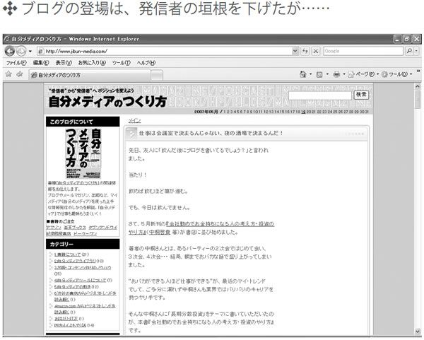
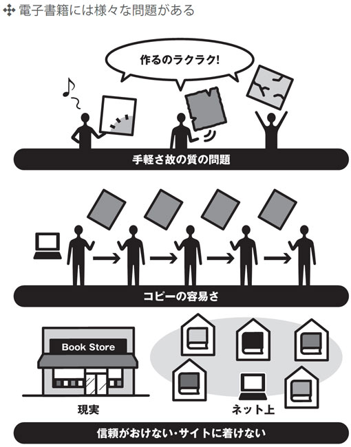
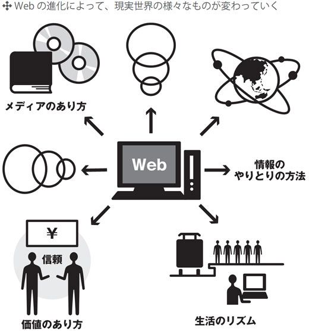

| そろそろＷｅｂ３．０ (アスカビジネス) | |
| ＴｅａｍＷｅｂｏｏｏｋ | |
| クロスメディアパブリッシング (2007) | |
この本は横書きでレイアウトされています。
また、ご覧になる機種により、表示の差が認められることがあります。
Web3.0って、何だ？
今や、このWeb社会に生き、インターネットやパソコンを毎日のように利用している方であれば、『Web2.0』なるキーワードを聞いたことすらない、という方はほとんどいらっしゃらないでしょう。この本を手に取ってくださっている方々の多くも、Web2.0と付き合ってきた方々だと思います。
かのWeb2.0の提唱者ティム・オライリー氏が"What Is Web 2.0（http://www.oreillynet.com/pub/au/27）"を記してから、この原稿を書いている時点でまだ１年半足らず。それにも関わらず、Web2.0はネット社会の代名詞となり、Webはみるみるうちにさらなる進歩を続け、日本では何か目新しいものに何かと2.0をつけるというブームまで起こっています。そして、このWeb2.0の行く末を考察し、予言するというような記事も見かけるようになりました。
そして、そういった記事の中で見受けられる言葉が、そう、『Web3.0』です。
しかし、一体全体Web3.0とは、何なのでしょうか？ さらにすごい技術？ 現在では信じられないようなサービス？ 現実と見まがうような美しい画面？ そして、Web社会の更なる広がりと発展？
私はむしろ、Web3.0の"本質的にスバラシイ所ところ"というのは、そういった技術の進歩やインターネットのWebページの数の増加、サービスの広がりよりも、もっと別の所にあるのではないかと考えています。私の考えるWeb3.0とは...... それは、本文の中でじっくり語らせていただくことにしましょう。
現代のWeb2.0社会というのは、実に面白いものでありながら、問題の多いものでもあります。セキュリティの問題、著作権やプライバシーの問題はその代表格ですが、別の問題として、いわゆる「デジタル・ディバイド」の問題があります。
現在、情報料やサービス料といったものに関しては、時代の流れや各社の競争の結果、かなりすばらしいものを私たちは得られていると思います。少なくとも、ちょっとWebページを探検しただけで数千円とか、写真を添付したメールを送ったら１通100円とか、そういったいわゆる「パケ死」（簡単に言って、携帯電話などのサービス使用料が死ぬほど高くなること）のようなことは起こらなくなってきています。
そういった意味では、ネット環境などの改善は比較的急速に進み、地方の人々がインターネットをろくに使うことも出来ない、というようなことはなくなってきています。
しかし一方で、いぜん深刻なのは"知識の格差"です。パソコンを手足のように操り、商取引からプログラミングからハッキングまでお手のもの、という人がいる一方で、パソコンはあるけどろくに使えない、使わないから何が便利なのか分からない、というような人も決して少なくありません。
この本では、Web3.0出版プロジェクトチームであるWeboookが、Web2.0を分析、考察し、Web3.0がどのようなものになるのかということを鋭く、面白く考察しています。しかし、いきなりWeb3.0とはこうだ、という風な話をしてしまったら、分かりにくいし説得力のないことは明らかです。特に、先程挙げたようなWebに詳しくない方々にとっては、何を言っているのか分からない、という事態になってしまうことも考えられます。
そういった事態を避けるため、また、Web2.0が結局どのようなもので、どのような点が良く、あるいは悪かったのか、ということを紹介するために、Web2.0のキーワードについて解説した１章、Web2.0の問題点を挙げ、Web3.0に向けて求められる要素を挙げた２章、そしてWeb3.0社会を提唱する３章、という３章立ての構成をとりました。
そうすることによって、より多くの人にWeboookの見ているWeb3.0社会、そのすごさを見ていただきたいと思っています。
ここでは、Web3.0の素質をもったモノたちを個々で紹介するのではなく、それらの交じり合った、Web3.0という一つの巨大な世界の概観を思い切って提示しています。Web3.0というものは、ある独立した単独のサービスやWebサイトによって作り出されるものではなく、多くのサービスやWebサイト、果ては我々ユーザーまでもが混ざり合い、調和した末に生み出されるものだと、私たちは考えているからです。
そういった連携を考えるために、私たちはとかく抽象的になりがちな話の中にも、出来る限り多くの具体例を盛り込み、実際の社会でそれらがどう連動するのかといった事に関しても多く記述するように努めました。
そういった具体的なものをより分かりやすくするため、本文中のイラストの他、この「はじめに」で、いくつか大きな絵を挙げて『Web3.0』を織り成すモノたちが連携している様子を描きました。もちろんこれは単なるまえがきであり、本文ではないので、これは何だ、あれは何だ、と考え込んでいただく必要はありません。ぱらぱらっと、Web3.0社会というものを覗いて見て下さい。
当然といえば当然なのでしょうが、Web3.0は、パソコンの中だけに留まるものではありません。Web2.0は、私たち一人ひとりの生活を変え、発信者としての道を拓きました。Web3.0は、私たち一人ひとりの住む世界を変え、我々の発信者としての価値を最大限に引き出してくれます。
ですが、Web3.0は、我々一人ひとりがその到来を待つものではありません。Web3.0の到来のために、改善されなければならないものは依然として多々あり、そしてそれは我々一人ひとりの意識、態度の問題でもあるのです。
この本の目的は、Web3.0社会を提唱することであると共に、人々にWeb3.0の到来を呼びかけることでもあります。Web3.0は、見えない何かの手によって自動的につくられていくものでも、一握りの天才たちによって一方的に作られていくものでもありません。Web3.0をつくるのは、我々一人ひとりに他ならず、この本はそのための足がかりなのです。
一緒に、Web3.0をつくりませんか？
もくじ
Web2.0がもたらした15個の可能性
What was Web2.0
１‐１ ロングテール
Amazonだけでない、WikipediaやGoogle検索にも見られるロングテール現象とは？
１‐２ Google検索
もう検索エンジンのない生活なんて考えられない。現代の情報化社会を支える検索エンジン。
１‐３ ターゲット広告とパーソナライズ
大衆に向けられたインターネットが、今度は個に焦点を当て始めた。そこにあるサービスとは?
１‐４ SEO
Webサイトの価値を変えると話題のSEO。検索サービスを深く知ることで、誰にでもできるSEOの方法と注意を紹介します。
１‐５ ブログ
インターネットの中にあなたの場所を持つことができるブログ。その力は社会を変える。
１‐６ SNS
「SNSといえばmixi」という時代はもう古い? Web2.0の時代に新たなSNSの使い方が現れた
１‐７ CGM
ユーザー一人ひとりがサイトを進化させていく、今や常識の「メイン・イン・消費者」。
１‐８ 集合知
「Google+Wikipedia = レポート」。どこかの大学生がそんなことを言っていたが...
１‐９ フォークソノミー
一人ひとりがWeb社会に参加することで可能となった「第二の検索」。その可能性はロボット検索を超える。
１‐10 RSSとAtom
更新されていないWebページを毎日巡回していませんか?フィードを利用すれば時間の無駄がなくなります
１‐11 オープンソース
普段は気づかないけれど、実は僕らの生活を支えているオープンソースのソフトウェアとは?
１‐12 ブロードバンド化
ダイヤルアップから常時接続、そして"光"へ。今のWeb2.0を支えたのは通信インフラだった。
１‐13 Ajax
好きな技術をミックスして、新たなサービスをつくり出す。その可能性は無限大。
１‐14 Webアプリケーション
プログラムのインストール不要・バックアップ不要・ウィルス対策もOK。あなたも使ってみませんか?
１‐15 マッシュアップ
様々なサービスを利用して新たなサービスをつくり出せるマッシュアップ。あなたは何をつくりますか?
Web2.0の先へ行くために求められる14のもの
What is needed to be Web3.0
２‐１ ネット上商取引への信頼
Web社会の大きな魅力である商取引。どうすれば安全に取引を行うことができるのだろうか？
２‐２ 情報への信頼性
Web社会の永遠のネック、情報への信頼性。Webの信頼のために出来ることとは？
２‐３ 有機的な知識の構造化
Web上の情報は莫大だが、果たしてそれを使ってテストで百点を取れるのだろうか？
２‐４ 悪意を持つユーザーへの対応
けして居なくならない、100人に１人の悪人。我々はどのように対処すべきなのだろうか？
２‐５ インターネットへの常時接続
Web3.0に到達するためには、誰もが常にインターネットに接続できる環境が必要である。
２‐６ 一部での匿名性の"喪失"
自由の象徴であるネットの匿名性を『失う』とは。私たちがその代償に得るものとは？
２‐７ フォークソノミーの進化
ロボット検索と肩を並べる"若手"の検索システム。求められるフォークソノミーの進化とは？
２‐８ ページランクへの信頼性・ユーザーの介入
検索結果のランク。その、便利で、かつ絶対的なもの。ランク付けは、Web3.0でいかに変わるのか？
２‐９ 言語の壁・国境の壁・用語の壁
壁、壁、壁。既にこんなに便利なWeb社会に、依然として幅を利かせて我々を阻む「壁」とは？
２‐10 ページごとの互換性、システムの統一性
それぞれ違うからこそ出てくる良さがある。一方で、統一するからこそ生まれる便利さもある。
２‐11 メジャーでないページへのたどり着きにくさ
情報が氾濫している現代情報社会。必要な情報が埋もれてしまわないようにするためには？
２‐12 "信頼"の価値
形を持たない情報の海の中で、同じく形を持たない"信頼"が我々に価値をもたらす。
２‐13 リッチユーザーインターフェースの更なる進化
『パソコンそのもの』の壁を取り払わなければ、我々は集合知を実現することは出来ない。
２‐14 文書の要点や構成の分かりにくさ
何かと全体像の見えにくいWebサイト。その分かりにくさは、克服すべき１つのポイントである。
Web3.0によってつくられる15の世界
What is to be Web3.0
３‐１ ネット上に別世界
散歩をするかのようにWebを歩き、おしゃべりをするかのように情報を発信する。
３‐２ "信頼"という名の世界通貨
広がるネット上取引。ネット上で、通貨は、価値は、どのように形態を変えていくのだろうか？
３‐３ ネット上研究所で共同開発・研究
オープンソースなどが生まれる一方で、進まないネット上での開発・研究。そのネックとは？
３‐４ ＳＮＳやブログからの電子出版の書店
情報を手軽にまとめて発信する、電子書籍というメディアの抱える問題、そしてその打開策とは？
３‐５ 持たざる者へ"信頼"を投資する
我々は発信者になる道を得た、それは真実なのだろうか。Web3.0における発信者への道とは?
３‐６ ネット上情報を用いた同時翻訳システム
言語の壁をも超えるWeb3.0。外国人はもはや未知の存在ではなく、外国語サイトさえ自由に操る。
３‐７ 情報は賞金首、専門家は賞金稼ぎ
疑問に思った事に対する答えが一瞬で得られる、そんなシステムは実現しうるのか？
３‐８ アーティストが困らないポッドキャスティング
芸術作品関係のデータのコピー、その有害さと有意義さ。Web3.0はコピーの価値観を変え得るか？
３‐９ どんなものでもピンポイント検索
現在の検索システムの達成点、そして限界。Web3.0の検索はユーザーとの協力のもと、更なる境地へ。
３‐10 ネットが自分で情報を構成・構造化
ネット自体に考えるということはできるのか？ ネットが考えるとき、Webはどのように姿を変えていくのだろうか。
３‐11 現実の友人にネット上で遭遇
ネットと現実の境目をなくしていくWeb3.0。"出会い頭の会話"をネットは実現できるか？
３‐12 ネット上で里帰り・旅行
より使いやすく、便利に、広がっていくWeb社会。Webはどんなことまでを可能にするのか。
３‐13 学校も会社もネットの中
現在の集中型の勤労システムにWebが異議申し立て。Web3.0は、学習や労働の形態をも変える。
３‐14 絶対に迷わない地図
リアルタイムの地図は、地図のあり方を大きく変えた。進化の末に辿り着く、究極の地図とは？
３‐15 そして、現実世界も変わる
Web2.0社会は我々の立ち位置を受信者から発信者に変えた。そして、Web3.0は......。
１‐１ ロングテール
ロングテールの代名詞といえば「Amazon」でしょう。ここでは、誕生からわずか10年で今や売上高１兆円の世界最大のショッピングサイトとなった、このとんでもない会社「Amazon」について軽く説明した後に、その裏に隠されているWikipediaやGoogleの検索エンジンに垣間見えるロングテール現象について説明しましょう。
普通の企業では全体の売上高のほとんどが数少ない人気商品によって占められているといわれています。その割合は売上高の80％が売れ行きの良い上位20％程度の商品によって占められているとまでいわれるほどです。しかし、Amazonの売上高に占める人気商品の割合はこのような割合ではなく、人気商品の売上高に占める割合が非常に低いのです。つまり、Amazonでは"不人気"である商品の売れ行きが良いということです。もちろん、不人気な本が不思議と売れる手品（？）をAmazonが使っているわけではありません。人気がなく、1年に5冊売れるか売れないかという本がAmazonでは多く用意されていますが、この「1年に数冊売れるか売れないか」という微量の数が、Amazonの顧客に販売することのできる本の種類と掛け合わされることによって膨大な金額になります。このように利益を得るシステムを構築したことにより、Amazonは著しい成長を遂げることができたのです。
なぜ一般の書店にはこのような成長が不可能で、Amazonだけが可能だったのかというと、それは単純にインターネット上に存在しているAmazonという書店が用意できる本の数は、普通の書店に比べて圧倒的に多いからなのです。インターネット上ではなく、実際に店舗として存在している街角の書店にとって、1年に数冊しか売れない本をいつまでもお店の棚に置いている余裕はありません。発売からしばらく経ってしまった本や人気の出ない本を店舗の一角に用意しておくのは非常に効率の悪いことです。
対照的に、インターネット上に店を構えるAmazonにとっては、そのような売れ行きの悪い本は店頭に並ばせるのではなく倉庫に眠らせておけばいいのです。お客さんから注文が来たらいつでもすぐに倉庫から取り出し、そのお客さんへ向けて発送できるようにしておくのです。Amazonのビジネスモデルでは、店舗が必要ない一方で、Web上に容量はほぼ無限といっていい商品検索システムを構築しておきます。人気の本はもちろん、ほとんど売れない商品まで注文が受けられるようにしておけばいいのです。
Amazonはこのようにインターネットを利用することによって、ひとつひとつの商品の売上は低いけれども、とてつもなく幅広い品揃えの「書店」を実現しました。まさにその売上高と商品の種類の関係をグラフにしてみると、売上の良いごく少数の商品が続いた後に、売上高の悪い商品がずらーっと並んでいるいわゆる「ロングテール」な状況なのです。
そして、ロングテールはAmazonに限った現象ではないのです。Web2.0のサービスの様々な部分でロングテール現象は見て取ることができます。後述する集合知の節でも触れますが、「Wikipedia」をロングテールの観点から見てみましょう。
インターネット上の百科事典「Wikipedia」は、Wikipediaのプロジェクトに参加する人々がどんどん百科事典の項目を追加・加筆していき巨大なデータベースをつくるというプロジェクトです。みなさんも知っているとおりWikipediaのとある項目に文章を書き加えるのは誰でも可能です。ただし、Wikipediaに協力することに対する報酬はありません。なので、Wikipediaに参加する人のWikipeidaプロジェクトへのコミットメント（投稿）の量は様々です。多くの項目を百科事典に追加している人から、自分の興味のある項目だけをちょっと付け加えるといった人までいるでしょう。ここでAmazonの商品と売り上げとを軸としたグラフを考えたように、ここではWikipediaの参加者とその人のWikipediaへのコミットメントを軸にしたグラフを想像してみましょう。縦軸はコミットメントなので、具体的な数字は把握できませんが、下のような図になることが予想されます。
よくWeb2.0の本に登場するAmazonの書籍の売り上げの図と同じように、Wikipediaのコミットメントを図にした場合でも少ないコミットメントをしている人の領域が非常に長くなります。そして、そのような非常に長い領域にいる人々によるWikipediaへコミットメントの総量は、左側に属しておりWikipediaへ多くのコミットメントを行っている人々によるものに匹敵するほどになります。そして、それぞれの人のWikipediaへのコミットメントは少なくなるけれども、その膨大な数のおかげでWikipediaは現在のように立派で巨大な百科事典となりえたのです。
もちろん、ロングテールを上手く生かしているのはAmazonとWikipediaだけではありません。視点をロングテールへ持っていけばWeb2.0の様々な分野にその現象が浸透しているのがわかります。次節で説明するGoogleの検索技術で現れるロボット検索の「クローラー」も、一部のアクセス数が非常に多いサイトの情報だけを集めているのではありません。クローラーは、1日の閲覧者が100人に満たないようなサイトの情報も集めます。そしてそのようなサイトは、日々のアクセス数が1000を超えるサイトの何百倍、何万倍以上存在しているでしょう。それら"アクセス数が少ないけれど非常に膨大な数のサイト"のリンク情報を無視せず、しっかりと収集することによってGoogleの検索インデックスは作成されています。これもサイトの数とそのアクセス数をグラフにしたら、アクセス数の少ないサイトがずーっと端までを占めることになるでしょう。そう、ここでもロングテールなのです。Googleはこうしてアクセス数の少ない無数のサイトもしっかりとクロールして検索インデックスを作成しており、その結果他の検索エンジンに比べて求めている検索結果が現れやすい、いわゆる"便利な"検索エンジンとなっているのです。もし仮に人の手によって一つひとつのサイトをインデックスに加えていったとしたら、このようにロングテールの末端部分となるサイトまでクロールすることは不可能だったでしょう。Amazonと同じようにプログラムによる自動化の手段をとることで、GoogleはWebサイトの隅から隅までをクロールしてインデックスに加えることができたのです。
さて、こうして見てみると現在の「格差社会」もロングテール現象として考えることもできます。格差社会では富のほとんどをごく一部の人たちが所持していますが、実際に社会を動かしているのは、ロングテールの膨大な長さの端を形成しているごく普通の人々でしょう。この人々の日々の働きが積み重なることによって社会が形成されているのです。
１‐２ Ｇｏｏｇｌｅ検索
Amazonと並びWeb2.0といえばGoogleといわれるほど有名な検索エンジンのGoogle。2000年を超える頃からアメリカ、日本をはじめとする先進国では、インターネットの通信速度が上がり、インフラが整備されました。この結果、多くの人がネット上に情報を蓄積できるようになりました。
新しいテレビ番組、会社の求人情報や学校紹介はもちろんのこと、個人が趣味で制作したサイトなども一気に増えました。これらインターネットに載っているコンテンツは、基本的に人に見てもらうために存在しています。それらは、人に見つけてもらえなければ意味がありません（Wikiなどを自分のメモ代わりにするのなら話は別ですが）。また、個人サイトなどでは様々な情報が入り乱れており、インターネット上にある情報を探すためにパソコンの前に座っても、もし仮に検索サイトというものがなかったら、手に取っている広告に書いてあるアドレスを直接ブラウザのアドレスバーに打ち込むか、あるいはWebページからのリンクを辿るしかなく、いったいどのサイトにどうやってたどり着けばいいのか途方に暮れてしまいます。
そこで登場するのがGoogleをはじめとする検索サイトです。現在、何か知りたい言葉や現象があれば、とりあえずGoogleの検索をかけてみれば、その言葉がどのようなものであるか、どのような概念であるかがわかります。パソコンの操作方法やサーバーの設定方法など様々なことをGoogleを索引（インデックス）として使うことで調べることができます。
もちろん検索結果のWebページは検索サイトがつくったものではなく、会社のページだったり、個人が趣味で書いたページだったりと様々です。Googleで検索をしてからその結果のページのリンクをクリックするまでの時間は5秒とかからないでしょう。一見検索サイトが行っていることは非常に限定的かと思われますが、パソコンの前に座っている私たちと、検索結果の自分が求めていたサイトとを出会わせたのは間違いなくGoogleやYahoo!などの検索サイトなのです。
さて、ここでディレクトリ型検索について少し触れておきます。1990年代中頃は、ロボット型検索エンジンよりもディレクトリ型検索であるYahoo!が検索シェアトップを独走していました。後述するようにGoogleというロボット型検索エンジンが現れたときも、コンピュータ誌では「ディレクトリ型検索 V.S. ロボット型検索」といった特集がしばしば組まれていました。しかし、ロボット型検索が全盛の今ではもうほとんど見かけなくなりました。
さて、ディレクトリ型検索は、とあるサイトをカテゴリーに分類する必要があります。Webサイト作成関連のページを探すには、Yahoo!トップページのYahoo!カテゴリの中から「コンピュータとインターネット」をクリックし、さらにこの中にも「電子メール」や「インターネット放送」といったものから「プロバイダ」や「ホームページ、Webサイト」まで様々な分類がされています。ここで「ホームページ、Webサイト」の項目をクリックすると、「Web上のエンターテイメント」、「ブログ」、「ホームページ作成」などが現れます。さらに「ホームページ作成」をクリックすると「CGI」、「HTML」といった技術的なことから「Webデザイン」といったデザイン系のカテゴリまで表示され...。このように、ディレクトリ型検索は階層によってWebサイトを案内するのです。Webページ作成を初心者に教えるといった単純なコンセプトのWebサイトだけでインターネットのページが成り立っているならばその形態の検索で十分に機能したでしょう。しかし、後述するCGMなどの形態を持つサービスが増えた今、Webサイトの量や情報は非常に多岐に渡るものになりました。
例としてブログを挙げると分かりやすいでしょう。東大生がWebサイト作成方法のコツを書いたブログがあったとします。このブログの分類はどうなるでしょうか？ 大学生のカテゴリに分けられるのでしょうか。Webサイト作成のカテゴリに分けられるのでしょうか。もちろんそれはブログのコンテンツによるでしょう。ディレクトリ型検索のカテゴリ分けをする人はそのブログを読んでどちらのカテゴリに分けられるかを判断しないといけません。さらにそのブログが何万もの人によって日々作成・更新が行われるとしたら、果たしてディレクトリ検索は十分な役割を果たすことが出来るでしょうか。ここにディレクトリ型検索の限界がありました。
ディレクトリ型検索に代わって、現在の検索シェアのトップは知ってのとおりGoogleです。新しい検索アルゴリズムによって自動的にWebサイトを巡回し、日々何十万、何百万というWebサイトをクロール（コンピュータによって自動的に情報を収集すること）しているロボット型検索エンジンはWebサイトをディレクトリ型で分類するのではなく、個々のページに記載されているリンク情報をたどって検索のインデックスを作成します。このようなシステムをとることで、もし東大生がWebサイトのつくり方について書いているブログがあったとしたら「東大生」と「Webサイト作成」というキーワードでも検索できるようになっているのです。
一昔前の検索方法であったディレクトリ型検索は、日々新しいサイト・情報が生まれるWeb2.0の世界ではその速さについていけなかったのです。
話をディレクトリ型検索からGoogleの検索に戻しましょう。Googleは人々が知りたい情報を検索の上位に持ってくるために、検索対象であるサイトのランキング「PageRank」を作成しています。どのサイトが一番有用なのかをそのページへのリンクの数という形で評価しています。Googleのページにはリンク元のページの評価も行っていると書いてあります。こうすることによって様々なページからリンクとして引用されているサイトが検索の上位に出てくる仕組みになっています。Googleのランキングで上位にくるのは有名な大企業でも政治家でもなく、基本的には被リンク数が多いページです。つまりより多くの人が有用であると思っているWebページなのです。これは数百万もいるといわれているGoogle検索のユーザーによってPageRankがつくられることから、「Googleの民主主義」、または「Webの民主主義」と呼ばれることもあります。
このGoogleのPageRankにより検索時に他の人が有用と考えているページが簡単に見つかるようになっているのです。

ただ、ページのつくり方によって被リンク数が多いページでもPageRankが低くなってしまったり、また逆に「なんでこんな広告ばっかりのページがこのキーワードで一番上に来るの？」といったようにキーワードに無関係なページがある検索結果の上位に表示されることもしばしばあります。これは後述するキーワード「SEO」のところで触れようと思います。
最近では中国発の検索サービス「百度」など、Googleを追従する新しい検索サイトも登場し始めました。情報化社会の中であふれる情報のインデックスをつくるという、GoogleがWeb2.0の時代に果たした役割は、これからもその役割をGoogleが担うかどうかはともかく、インターネットに不可欠な存在であり続けるでしょう。
１‐３ ターゲット広告とパーソナライズ
「ターゲット広告」として有名なのが、Googleの主な収入源となっているGoogle Adwords（アドワーズ）とGoogle Adsense（アドセンス）です。Google Adwordsは広告主が利用するサービスで、Adwordsに登録することでWeb上に広告を載せることができます。一方でGoogleはGoogle Adsenseというサービスも行っています。Webサイト管理者はGoogle Adsenseに登録し、自分のサイトにGoogleから教えられたコードを埋め込むだけでそこに広告が設置され、Googleから広告料がもらえるという仕組みです。
インターネットの世界以外でも、広告というものは街中のいたる所に設置・配置されています。本や雑誌、テレビや新聞など様々なメディアを利用して行われているのはご存知でしょう。道を歩いていればそこかしこに病院やコンビニの看板が目に入ります。それらと同様にインターネットの世界でも広告は存在します。一昔前のWeb1.0の世界でもWebページの一部に広告を差し込んで、それによって収益を得るというビジネスが成り立っていました。またそのような広告収入を目的として様々なショッピングサイトをつくり、そこに掲載される広告収入によって収益を得ている会社も山ほどあります。それら一般のWebサイトの広告に比べてGoogle Adwordsが優れている点は、Googleのお家芸である検索機能を使って、そのページに関係のある広告を小さなウィンドウに配置できるようにしたというところにあります。
例えば「机」というキーワードで検索すれば、Googleの検索結果ページの端に家具販売店の広告が挿入されます。もちろんこのようにGoogleが広告として載せるのは、Google Adwordsに登録してあるWebサイトのみです。キーワードで検索し、その結果表示される広告と検索した人が欲しているものが一致すれば、そのWebサイトの売上が上がります。どれだけ売上が変わるかはその業界により変わりますが、間違いなくGoogle Adwordsは広告のしくみを大いに変えるものなのです。ただ、Adwordsはキーワードによって効果にばらつきが出るでしょう。実際に「環境」というキーワードで検索する人は、購買意欲があって検索しているということは少ないでしょうけれど、「机」というキーワードで検索する人は、引越しや老朽化などで新しい机を欲している人がほとんどでしょうから。このように検索結果によって表示を変化させることで、対象を絞った広告を配置するというのがターゲット広告の特徴です。
他にもGoogle Adwordsは、Google Adsenseと組み合わさることで威力を発揮します。例えば、映画批評が書いてあるWebサイトがあるとします。そのページには毎日映画に興味を持つ人がたくさん訪れるでしょう。そんなとき、Webページに載っているGoogle Adsenseの窓には最新のDVD作品の広告が表示されます。そのWebサイトを訪れた人は映画に興味を持っている人ですから、そこの広告がクリックされる確立はランダムで挿入された場合の広告がクリックされる確立よりも高くなるでしょう。その映画批評サイトが仮にランダムで広告が表示される仕組みだったとします。そこに表示された広告が「サーバーを買いませんか？」という趣旨のサーバー会社の広告だったとしたらどうでしょう。そのサーバー会社のバナーがクリックされる確率は、DVD作品のバナーよりも低いでしょう。
逆に、コンピュータ好きの人のためにサーバーの設置方法などが詳しく書いてあるWebページを考えて見ましょう。そこにはWebサーバーやメールサーバーなど各種サーバーの設置を趣味とする人が訪れ、そしてそのページの脇にはWebサーバー設置方法に関する本やレンタルサーバーの広告が挿入されるのです。前の映画批評サイトとは逆に、サーバー好きが集まるこのサイトに映画DVDの広告が挿入されていたとしても、そのDVD広告をクリックする人は少なくなるでしょう。
このように自サイトに設置される広告がサイトの内容に合わせて変化するということは、サイトのオーナーにとっても有益です。Webサイトの余ったスペースを生かして広告を載せるのに、自分で広告主を集めてくるのは非常に骨が折れることです。Google Adsenseなどのサービスを使えば、自分から広告を集めてこなくても少しの広告収入をもたらしてくれます。また自分のサイトに全く関係のない広告が表示される可能性は低いですから、サイト閲覧者が不愉快な思いをすることは少ないでしょう。自分のサイトの中にどんな広告が入るのか毎日楽しみになるかもしれません。もしかしたら自分のサイトの更新を続けていく中で、サイト内に載っている広告の中に今まで探しても見つからなかった、あなたにぴったりの商品が現れるということさえもあるかもしれません。
さらに、Google AdsenseやGoogle Adwordsには、このような広告の対象を捉えるという点以外にもそのインターネット上の広告という、その媒体自体の特性もあります。
Google AdwordsはWeb上に置かれる「情報」であるため、紙や看板など物理的な形を持ちません。新聞広告や電車の中刷り広告に比べて驚くほど安値でGoogleアドワーズの広告主となることができます。しかもその広告は自分が販売したい商品に興味を持つ可能性が高い人に向けて発信されるのです。Google Adwordsによって、今までは普通の人には敷居が高く、やりたくても出来なかった広告という行為を、簡単にしかも安値でできるようになったのです。
また、ターゲット広告と連動したWebサービスのパーソナライズというのも面白い機能です。Googleの提供するGmailというサービスにも似たような現象が見て取れます。Gmailは一見普通のWebメール（Web上にメールボックスが準備され、インターネットに接続できる環境ならいつでも自分のメールを受信・送信できるというもの）です。しかし、GmailはYahoo!やMSNが提供する普通のメールサービスと違って送信するメールの末尾に広告が入りません。はたしてどのようにして利益を得ているのかというと、ログイン後の受信ボックスの余白にGoogle Adwordsのようにその人に合った広告が挿入されるのです。ここでいう「その人に合った」というのは、Gmailのユーザ一人ひとりの送信するメール・受信するメールの中からGmailのプログラムがその人が興味を持っている言葉を探し出すことによって、その言葉に関係する商品の広告を載せるということです。例えば、昨日筆者は「先日の会議」というタイトルのメールを受け取ったのですが、そのメールの内容をGmailのプログラムが読み取ることで、今筆者のGmailログイン後の受信トレイの隅には「電子黒板」の広告が挿入されました。従来のホワイトボードを使った会議ではなく、手書きでも書き込めるディスプレイを用いた面白い商品です。残念ながら筆者には手が出ない値段でしたが、Gmailを使っている経営者の中には、会議の効率と質をより高めるために購入を検討する人がいるでしょう。このGmailの広告機能は、プログラムが1件1件のメールの内容を読み取るため、Gmailがこのサービスを始めた当初は、Gmailのこの機能は「プライバシーの侵害である」と言っている人もいました。Gmailがここまでユーザーを増やした今では、そのような疑問はどこへやらといった感じですが。
このように広告主とユーザーを適切に結び付けようとする動きは、もはやWeb2.0の世界ではGoogle Adwordsだけではありません。Web2.0を代表する前述のAmazonをはじめ、様々なWeb上のショッピングサイトでも同じような流れがあります。それらのショッピングサイトでは個々のユーザーの購買履歴などを参考にして新商品を紹介する記事を掲載しているのです。また、新たにサイトにアカウントを登録する際にも、自分の興味のあることや趣味などを入力することでその人に適した情報・商品を適切に配信することができるのです。逆にユーザーも自分の知りたい分野の情報を手に入れることができるので、サービスの顧客満足度を向上することができ、更なる利益につながる可能性があります。
このようにインターネット上の個人の特性を読み取り、その人に合わせたページを作成することを「パーソナライズ」と言います。現在、人々の検索結果を読み取った広告を表示させるGoogle Adwordsは、その検索1回1回に対してのみ動いていますが、Googleはその人の検索の履歴までも読み取ることで、その人にマッチした商品の広告を表示させようとしています。
また商用とは別に、Googleではログインすることで自分専用のホームページを用意する「iGoogle」という機能を使うことができます。このiGoogleはGoogleによるサービスですから、検索文字列を入力するフィールドはもちろん、最新のニュースや天気予報、はたまたGmailの新着メール10件など様々な要素を自分好みに配置させ、一目で自分の欲しい情報を手に入れることが可能なのです。
１‐４ ＳＥＯ
さて、あなたのWebサイト（所属する団体でもあなたの個人ブログでもかまいません）があるとします。Webサイトを立ち上げたということは、その動機にいくらかのバリエーションがあるにせよ、他の人に見てもらうためにそのWebサイトを立ち上げたというのがほとんどの場合でしょう。もちろんサークルや会社のプロジェクトなど、一部のグループで情報を共有しようという場合ならば、そのWebサイトにパスワードを掛けたりして閲覧者を制限する必要があります。ですが、会社やサークルのWebサイトならば、それぞれ会社の事業案内やサークルの新入生勧誘ページなど、その会社やサークルのことをまだ知らない他者に向けられてつくられたページがいくつか含まれるでしょう。では、全く知らない第三者はいかにしてそのページにたどり着けるのでしょうか？ また、どうやったらそのサイトを見る人が増えるのでしょうか？ その鍵となるのがSEOです。
Webサイトにたどり着くには、もらった名刺に書いてあるWebサイトのアドレスやQRコードを用いて自分のサイトのアドレスを伝えたりと様々な方法があります。しかし、最も多いのはGoogleやYahooなどの検索サイトの検索結果からのアクセスでしょう。さらに、検索結果のリスト一覧の中でも、そのリストの中で上に来れば来るほどサイトのアクセス数は伸びるでしょう。自分のサイトの構造を検証・変更して検索エンジンにひっかかり易くしたり、その検索ランキングの中でもあなたのサイトが上位に表示されるようにするのがSEO、つまりSearch Engine Optimization（検索エンジン最適化）です。
SEOは、それだけで本が１冊書けるほどですのでここで詳しく述べることはしませんが、平たく言えば、人間の目ではなく検索エンジンロボットの目、つまり検索ロボットの特性に合わせたHTMLコードを書けばいいのです。
実は、自分の管理するサイトの検索結果ランキングを上げようとしてSEOを専門にしている企業に見積もりを頼むと、驚くことに何十万円、何百万円の費用がかかります。こういうSEOの専門会社は「○○というキーワードで検索サイトの検索結果上位15位以内に現れるようにする」といった条件を提示させて契約するので、キーワードが一般的なものでしたら、その分検索ランキング上位にするためにかかる費用は高くなります。例えば、この本の出版元であるCrossMedia Publishingという会社のWebサイトのSEOを行うときに、「CrossMedia Publishing」というキーワードで上位に来させるよりも「出版」というキーワードで上位に来させるほうが難しいのです。よって、「出版」というキーワードでSEOを行ったときのほうが費用がかかるのです。
自サイトを検索エンジンのランキング上位にしたい場合、SEO専門の会社に頼まなくても自分でちゃんとできます。HTMLというホームページのソースを創り上げている言語の話になります。例えば自分のサイトの構造を一昔前の主流であったテーブルレイアウトではなく、スタイルシートを用いたレイアウトを行ったり、そのサイトのキーワードをmetaタグに含めたり、titleタグに含めたりするだけでもそれは十分なSEOになるのです。あとは自分の友人のなかにPageRankが大きいサイト管理者がいればその人にあなたのサイトへのリンクを張ってもらいましょう。自分のサイトの中に高い人気を持っているサイトがあれば、そこからリンクを貼るのもいいでしょう。そうすればGoogleなどのロボット型検索エンジンのクローラーがその閲覧者が多いサイトを巡回したときにあなたがSEOを行いたいサイトを訪れる確率が多くなり、あなたのサイトのPageRankが上がるという仕組みです。要はPageRankの高いサイトを管理しているかどうかで、他のサイトの検索ランキングを上げることができるかどうかが決まるということです。
また、SEOにはルール違反が存在します。企業のWebサイト管理者は、様々なキーワードの検索結果に自分のサイトを盛り込みたいと考えています。そのため、そのサイトと関係のないキーワードをページの中に普通は見えないようにして盛り込んだりします。こうすることで、様々なキーワードの検索に引っかかるようにできるのです。
先日、NHKのドキュメンタリーで取り上げられていた具体的な例で言うと「Lasik」という視力矯正手術専門の病院のWebサイト管理者が、そのサイトのPageRankを上げるために「Lasek」や「Lesik」といった誤ったキーワードをページの中に挿入していました。このようにすることで、間違ったスペルで検索をかけた人々にもその「Lasik」専門の病院のWebサイトが目に留まるのです。この誤ったスペルの例はルール違反すれすれのものですが、自分のサイトと全く関係のないキーワードを盛り込むことで検索結果上位にランクインできることを利用したページランク操作の一例を表しています。
GoogleはSEOの不正行為を発見すると、そのWebサイトがGoogleの検索結果から除外されるようにしてしまうことがあります。俗にいう「Google八分」です。これまで検索上位にランクインしていたサイトが、1日で検索結果のどこにも現れなくなってしまうのです。Google八分にあってしまったサイトは、Googleを使った検索によってサイトを訪れる人が一気に0になってしまいます。Googleは全世界の検索シェアの半分以上を占めていると言われているので、Google八分にあってしまったサイトの訪問者数は一気に落ちてしまいます。これは非常に恐ろしいことで、インターネット上に開いたショッピングサイトの場合は、サービスが立ち行かなくなる可能性も大いにあります。
SEOに関して説明してきましたが、最後に注意しなければいけないことを１つ紹介します。それはここで紹介したSEOの方法が、現在のGoogleのロボット型検索クローラーに対してのSEOであるということです。GoogleはPageRankを決めるための法則を公開していません。もし仮にこの先数年でGoogleが検索インデックス作成のアルゴリズムを大幅に変更したり、Google以外の他のサービスが新たなアルゴリズムを開発して検索エンジンシェアのトップになったとしたら、そのときは新たなSEOを行わねばならなくなってしまうのです。そうなれば、現在多く出版されているSEOをテーマとしている書籍に載っている手法は古いものになってしまいます。SEOを行うときには、果たしてその方法が今の時代にあっているものなのかどうかを見極める必要があるのです。
１‐５ ブログ
ブログは、ここ1、2年で一気に知名度を上げた言葉でしょう。ブログとは一言でいえば個人用Web日記作成ツールなわけですが、用途は個人の日記だけでなく、今では会社の部署やサークルなどのコミュニティーの情報交換の場として使う人もいるようです。
様々なサイトが「ブログ」を提供しています。もしみなさんが自分のブログをつくってみようと思えば、Excite、LivedoorやYahoo!など自分の好きなサイトのブログ作成ページのリンクを見つけられます。登録画面のいくつかの質問に答えるだけで、思い立ってから5分もあれば綺麗なブログをつくれます。ここでブログを取り上げるのは、以前と違い個人が自分の管理するWebページを持つことが驚くほど手軽になったという観点からです。Web2.0以前まではプロバイダとWebページをつくる契約をし、その対価として幾分かの料金を払ったうえで、自分でHTMLタグやCSSなどのプログラムを勉強をする必要がありました。さらに、それなりに綺麗なWebページをつくるにはそのページに合った画像が必要です。ウィンドウズ付属の「ペイント」では役に立ちません。何万円かする画像処理ソフトを購入し、その上そのソフトの解説書を買う場合もあったでしょう。また、内容のあるページを維持し、多くのページビューを期待するにはWebページを頻繁に更新する必要があります。そのときにも、これまでではFTPソフトを使ってサーバーにアクセスし...、といったように決して少なくない費用と時間が必要でした。
前述したとおり、ブログというものは作成までわずか5分。ブログのデザインはプロ並のレベルのものが数百種類も用意されていて、季節によってデザインを変えるといったこともいとも簡単に出来ます（中身と外見が完全に切り離されているのです）。ページの更新もブラウザを使ってWeb上でできるので、今までのように更新にかかる手間も格段と少なくなりました。しかもそれらの機能が無料で使えるのです。
PerlやPHPなどのプログラムを使ってWebサイトを構築したことのある人なら分かると思いますが、各記事の下にフォームをつけて閲覧者がコメントを付けられるようにするにはとても大変です。formタグをつくってその入力値を受け取るプログラムを書いて、しかも記事ごとにコメントが付けられるようにして、記事が書かれたらRSSも生成して･･･と、かなり面倒な作業です。PerlやPHPをガリガリ書いている人でないと、今のブログと同じ機能をつくるのは至難の業でしょう。
簡単に作成できるという点に加え、ブログにはトラックバックという機能があります。とあるブログに載っている記事を引用して、自分のブログで書く際、引用先の記事に自分が書いた記事へのリンクを貼ることができます。
これまでは「あなたの記事について書いたから、ぜひリンクおねがいします」と相手サイトの管理者へメールか何かで連絡をしていました。トラックバック機能を使うことで、元の記事からあなたの書いた記事へのリンクがすぐに自動で作成され、トラックバック元の記事を見た人は「あ、この人も同じテーマについてブログを書いているな。この人の意見はどうなんだろう」とあなたの記事を読む機会が増えるのです。さらに、あなたのその記事がトラックバックされて･･･とブログ間でネットワークが形成され、様々な情報が有機的につながることができるのです。
このようにブログは個人の「情報発信の場」としてWeb2.0での重要な地位を占めています。これまで世の中へ与えられた情報は、テレビ、新聞、ラジオといったマスメディアによって発信されたものでした。新聞の投書欄などでも、一般市民の声というものは一度その新聞社の人たちの目を通り新聞の紙面に載せられるかが決められ、その後に世の中に発信されます。さらにそれらのメディアに寄せられる意見は膨大なものになりますから、たくさんの意見がふるいにかけられる必要があったのです。単に数が多すぎるからといって掲載されなかった意見もありますが、中にはその会社の方針やいわゆる一般常識と対立して消されてしまったものもあるでしょう。
ブログでは、一個人が簡単に世界中へ自分の記事を配信できるのです。スポンサーの利害関係が絡む批評や、選挙の際の世論の形成など、これまでの既存のメディアが大きな役割を果たしてきた分野に、ブログという新しいツールを用い発信される個人の考えや情報が与える影響は計り知れません。
ブログを活用している事例として、Macのモニターが挙げられます。先日Macを販売しているAppleがMacコンピュータのモニター募集をしていたのですが、応募条件の１つとして、自身のブログを持っていて、そのブログが定期的に更新されていることを挙げていました。Macのコンピュータを貸す代わりに、その人のブログにMacを使った感想や意見を書き込んでもらうというものです。Appleのほうはそのブログを読んで商品の改善に取り組めますし、個々人のブログを見ている人にもMacの良いところや悪いところを伝える効果がありますのでMac自体の宣伝効果にもなります。Web2.0の時代に合わせてブログを積極的に利用し、Windowsのシェアを奪おうとするAppleの上手いやり方ですね。
１‐６ ＳＮＳ
SNSもブログと同様に、Web2.0というフィールドで「個人による情報発信の場」としての役割を持っています。日本のSNS運営会社では代表的なものにmixi,GREEがあります。海外ではアメリカのMySpaceが有名でしょうか。SNSとはSocial Networking Serviceの略です。ですが、この言葉を聴いても全くその仕組みは見えてきません。これらのサービスは、mixiやGREEなどの運営会社それぞれがネット上に会員制のコミュニティ（ここでのコミュニティというのはSNS参加者がつくれる内部コミュニティとは別物）をつくり、参加者は実際の友人や知り合いとネット上での「友達」になり自分のページから友達のページへとリンクを張り、友達がSNS上に書いた日記や商品のレビューを見たり、自分が日記を書き込んだりするといったことが行われます。自分の「友達」の「友達」に意外な人を見つけることもしばしばあり、新しい出会いの場としての機能も隠されているようです。最近ではmixiの中で毎日ドラマを発信するというサービスが始まりました。ドラマをmixi内で読めるだけでなく、その登場人物と「友達」になることもできるという少し変わった新しい試みです。はたしてこれがどのような形態に変化していくのかはわかりませんが、これからもSNSという特殊な場所を利用したサービスが続々と現れるでしょう。
また、SNSの中でも前述のブログと同じようにテレビ局や新聞社などと比べて外部の影響を受けにくい個々人による率直な意見を読むことができます。それらは他人の観点によるふるいにかけられずにWeb上に書き込まれます。このように、Web2.0以前に比べて個人がWeb上で情報を発信する際にかかる手間・費用が桁違いに少ないという点でいえばブログとSNSは似ていますが、ブログと違うのはSNSは基本的にSNS参加者以外に非公開である点でしょう。SNSに参加するには、既に参加している人からの招待が必要です。そのためインターネットの欠点だといわれる匿名性が少なくなるのでしょうか。他人の誹謗や中傷が少なく、普通のインターネットに比べて安全であると一般的に言われています（安全なインターネットがあると考えないほうがいいという人も多いですが）。
さて、SNSの会員に加わるには、基本的に特別な会費などいらず、また日記を多く書いたとしてもSNSを運営している会社からはアルバイト料がもらえるわけでもありません。SNS運営会社はログイン画面や、SNSのページの端に表示される広告で収入を得ます。SNS参加者は趣味で自分の日記を書き、レビューを書きます。その見返り（日記を書かなくても他の人の日記は見れるのですが。）として、自分の日記がどのような人に見られているか教えてもらったり、友人や他人が書いた日記などを読むのです。
このようにWebサイトを「運営している側」ではなく、その「参加者」によってそのWebページのコンテンツが増えていくシステムはCGMと呼ばれます。Web2.0のWebコンテンツとして重要な言葉です。SNSやフォークソノミーなどはその典型でしょう。
日本で最も早くSNSのサービスを始めたのはGREEでしたが、GREEのデザインは青とグレイが基調で、見る人に少し冷たい印象を与えました。オレンジを基調にした温かみのあるページのmixiが後発ではありましたが現在では会員数ではダントツです。このようなSNSサービスでは、多くの利用者を持っているサービスにより多くの人が集まるという傾向があるので、しばらくは会員数ではmixiを抜くSNSは現れることはないでしょう。
ただし「SNSといえばmixi」という状態はそこまで長くは続かないかもしれません。現在SNSの新しい使われ方が現れ始めました。それはあるコミュニティごとにSNSをつくるという方法です。ここでのコミュニティとはmixi内での「大学コミュニティ」といったものではありません。企業やサークルなど実際の人との関わり合いをいいます。例えば企業の中でSNSを使うことで社員が何を考えているかを上司が見ることができますし、それはSNSなので外部に公開されることはありません。また社内での情報共有なども簡単にすることができ、インターネット上に文書を置いて、それを誰が見みたかが一発でわかるといったように、グループウェアのような使い方もできます。このように自分の所属しているコミュニティごとにSNSを用意することはOpenPNEというオープンソースなソフトを用いたりすることで簡単に実現することができます。
１‐７ ＣＧＭ
SNSの項でも少し触れましたCGM（Consumer Generated Media:消費者によってつくられるメディア）とは「参加者」によってコンテンツが創り上げられていくシステムです。ここではそのCGMの説明をしましょう。
ブログサービスやSNS、また、価格.comなどの企業のWebサービスはほとんどこのCGMの形態をとっていると言ってもいいでしょう。
一方的に情報を発信するだけのサイトで閲覧者が多いのは、企業のサイトなどのごく一部です。これは逆にWeb2.0の時代になって閲覧者参加型のサービスをつくり上げることが容易になったということかもしれません。掲示板の設置はもちろんのこと、今ではXOOPSといったグループで１つのサイトをつくり上げることができるようなツールまで公開されています。
CGMのサイトの例に、「価格.com」（http://kakaku.com/）というサイトがあります。このサイトでは様々な商品について「どの店が一番安いか」という情報をユーザーが書き込んでいくというものです。
値段のランキングをつける以外にもサービス参加者は率直な意見をインターネット上に書き込みすることができます。とある商品が発売されたとき、「これはあまり使い勝手が良くない」とか「見た目はすぐ壊れそうだけど買ってみたら実はとても頑丈だった」など、商品を購入する際に参考となる意見が次々と書き込まれていきます。サービス参加者はその意見を受けて商品を購入するか決め、購入したら商品のレビューを書き込み、その書き込みを見て他のサービス参加者がその意見を参考にすることがでいます。さらに、この価格.comを使えば同じ商品を持っている人と意見交換をすることができます。コンピュータ関連の問題が起こったときにそのキーワードで検索したら、CGMの中で「この機能の調子が悪いんだけど...」といった質問に対する回答が検索結果に現れて助けられる、といった場面は少なくありません。
また、逆にこのような商品に対する率直なレビューはメーカーにとっても重要な情報源になります。どのような商品を消費者が欲しているのか、またどの機能の使い勝手が悪いのかが消費者一人ひとりによって書き込みがなされていて、それを見れば一目瞭然。書き込みを読んだメーカーがさらに良い商品を世に送り出せば消費者にとっても嬉しいことです。CGMによる商品レビューサイトを利用することは消費者、メーカーともにメリットがあるのです。
一方で、CGM的な形態をとっているサービスによって発生している問題も無視はできません。動画や映像が簡単に投稿できるサービス「YouTube」はCGM的なサービスです。毎日何万人ものYouTubeユーザーが自分の作成した面白い動画を投稿します。多くの動画がYouTubeへ投稿されることでYouTubeの閲覧者が増えます。その閲覧者たちは、その動画にコメントを加えていき、動画を投稿する人はさらに増えていきます。
このようにCGMでは一定の利用者が集まるとさらにそのサービスの利用者が増え、同時にそのサービスが一層面白くなっていくのです。
ここでの問題は著作権に関する問題です。YouTubeの利用者の中には他人に著作権がある動画を投稿する人が少なくないのです。不正にアップロードされるファイルにはプロモーションビデオや音楽番組の動画などが多いです。日本音楽著作権協会（JASRAC）は音楽のプロモーションビデオなどが発見されるたびYouTubeに削除要請を出していますが、いったん削除要請を受けてYouTubeがその動画を削除しても、著作権を侵している同じ動画が同じ人や別の人によってアップロードされてしまうという状態が続いてしまっています。YouTubeを利用して不正に動画をアップロードする人たちとその著作権を保護する人たちとのいたちごっこはしばらくは止みそうにありません。
さて、ここでCGMの歴史を振り返ってみましょう。Web2.0以前のCGMの代表的な例はBBS（Buletin Board System）つまり掲示板でしょう。有名なところでは「２ちゃんねる」でしょうか。「最新ニュース」や「UNIX」など、文理問わずさまざまなカテゴリに分けられ、「ハッキングから今晩のおかずまで」というキャッチコピーで人気を博している「２ちゃんねる」ですが、もちろん他のWebサイト上に設置された掲示板もここでいうCGMの役割を担っています。普通のWebサイトのように、新たに自分の意見や、集めた情報を書くのにサーバー会社と契約をして、FTPを用いてファイルをアップロードして... といった面倒なことは不要です。あるサイトに掲示板が設置されていれば、そのサイトの閲覧者がどんどん書き込みを重ねていき、サイトのコンテンツがつくられていきます。前述の価格.comはこのWeb1.0時代の掲示板をパワーアップさせたものといえるでしょう。確かにこのWeb1.0時代の掲示板も立派なCGMといえますが、自分の書いたテキストだけがそのページの一部に載るというとこを見るとかなり限定的でした。
2004年あたりから、ブログサービスが活発になり、Webを見る人一人ひとりが簡単にWebページを持つことが出来るようになりました。ブログ運営サイトではそのブログの最新日記などをトップページに載せました。そうすることで毎時間ごとにそのサイトの新たなコンテンツが増えていきます。こういった意味ではブログもCGMといえます。しかも、ブログの管理者は自分自身のサイトを持つことができ、ページのデザインやレイアウト、トップページの絵まで自由に変えることができます。
2005年から2006年にかけて日本にSNSのブームが到来しました。前述のとおりGREE、mixiなど様々なサイトの中で利用者が日記を書いたり、とある商品についてのレビューを書きました。様々なコンテンツをSNSというサービスの中で参加者がつくり上げていき、そのおかげでより多くの人がSNSサービスにアクセスするという良い循環ができあがっています。
さて、SNSなどとほぼ同時に「人力検索はてな」や「はてなブックマーク」などの新たなサービスが開始されました。「はてな」という会社はこのCGMに強く、あったらいいなというサービスをどんどん提供してくれています。このCGMについては次の集合知の項でも説明しましょう。
１‐８ 集合知
インターネットの普及により、ネット上の仮想空間に存在している百科事典「Wikipedia」が登場しました。Wikipediaは巨大な百科事典にとどまりません。一般の人々により百科事典を作成するというそのプロジェクトの中では、これまで直接世の中に言葉を発信する術を持たなかった一般の人による語句の説明だけでなく、意見・批評がそれぞれのテーマに対して書き込まれています。それぞれのキーワードがしっかりと書かれているだけでなく、そのキーワードの幅も非常に多岐に渡ります。Wikipediaの執筆に参加できる人はほぼ無限ですので、キーワードの容量も無限です。大学生の中には「レポート＝Google + Wikipediaである」と言っている（決して大きな声では言えることではありませんが...）人がいるほど、Wikipediaは幅広い情報をその中に蓄えています。
また、Wikipedia以外にも「教えて！goo」や「人力検索はてな」などWeb2.0以前には存在しなかったCGM的なシステムにも注目できるでしょう。人力検索はてなの利用者は、何か困ったことがある、または何か調べたいことが出来たときにその内容を掲示板に書き込みます。その悩み・質問に対して別の人が回答者となり解決策や答えを掲示板のようなもので提供するというものです。回答者に対しては、ネット上で使えるポイントが貯まります。ある分野では質問を投げかける人が、別の分野では逆に質問に答える側になったりと、まさに人々が持っている知識を共有するという試みです。
このような仕組みのもと、「教えて！goo」や「人力検索はてな」には毎日何百、何千もの質問に対して、それを上回る数の答えが書き込まれています。それぞれの人のほんの少しの知恵のコミットメントが無数の人間により行われます。一つひとつのコミットメントは少ないでしょうし、1人の人間が1日に回答できる質問の数やジャンルには限度があります。しかし、参加者一人ひとりによる、それぞれの分野での小さなコミットメントが膨大に積み重なり有機的につながり合うことができます。それによって、これまでの百科事典を凌ぐひとつの巨大な集合知を創り上げていく。その過程はまさに１節で説明したロングテール現象といえるでしょう。
さて、これらWikipediaや人力検索はてななどの集合知を用いたサービスが発達する以前には、つまりWeb1.0やそれより前の時代には、特定の分野の専門的な知識を得るためには、それに関する専門書を買う必要がありました。それらの専門書は一度に出版される部数が少ないために、普通の書店に並べられている書籍より高価になりがちです（大学の教科書の値段の高さにうんざりしている学生は多いですよね）。それに対しWeb上にまとめられている知識は簡単に手に入ります。知識を自分の中に入れるのに必要なことは、自分の持っているコンピュータをインターネットにつなげ、Wikipediaなどの専用のページにアクセスするだけです。Googleなどを使ってキーワードを検索してもいいかもしれません。その上、そこに記載されている情報の「鮮度」も新しく出版するのに何ヶ月も必要とされる紙媒体よりも新鮮です。自分の検索対象であるキーワードに関して何か新しい出来事が起こったとき、Wikipediaのその項目に新たな情報を付け足してその巨大な百科事典を更新するのに1時間もかからないでしょう。
ただ、集合知にも課題はあります。地球上の事柄全てが、集合知のもとに完全にインターネット上にあるわけではありません。最近の論文などはネットに公開されていることが多いですが、一昔前の本や歴史上の資料などまだ情報化が遠い分野も多々あります。また、著作権の問題もあります。
また、集合知に書いてあることが真実なのかどうかの検証はかなり難しいと思われます。誰でも書き込むことが出来るということは、誰でも嘘を書き込むことができるということですから、例えばWikipediaに書いてあることのすべてを鵜呑みにしてはいけないでしょう。人力検索はてななどでは、質問者の書き込みに対して複数の答えが出ることがほとんどであり、必ずしもそのどれかが正しいという場合ではないこともあります。個々人の価値観やこれまでの人生の間に培った感覚によって問題の見方は変わってきます。
さらに、必要な情報を探そうとしてインターネットにアクセスしても、そこに書かれている情報は初心者に対して不親切な表現で書かれているときも少なくありません。基本的に集合知の形成に携わっている一人ひとりは、そのコミットメントを糧にして生活していません。正しいことを書いても報酬はもらえませんし、自分の感覚に頼った答えを書いてもそれは間違っているとは言われません。初心者に対して一つひとつ説明するのはとても骨が折れる作業ですので、集合知のような場では初心者でも分かりやすい答えが手に入らないことが少なくないのです。現在ではまだ、Web上で得られる情報よりも書店で売っている本のほうが初心者に向けてわかりやすく書かれています。本の中に載っている情報と、インターネット上で手に入れることができる情報とでは、もやは後者のほうが量・鮮度ともに前者に勝っているのですが、それらの物事をうまくまとめるという観点から見るとやはり本として出版されているほうが便利であり、入門者には向いているといえます（もちろん分野にもよりますが）。
膨大な情報を正確にうまくまとめられるかどうか、そこにインターネット上の集合知の未来がかかっているでしょう。
１‐９ フォークソノミー
聞きなれない「フォークソノミー」という単語は、本来フォーク（大衆）とタクソノミー（分類学）という２つの語による造語です。「大衆による分類付け」といった意味が込められています。現在Web上でフォークソノミーというと「情報のタグ付け」という意味がしっくりくるでしょう。
昔、インターネット上に溢れている膨大な情報を探す手段として、1つは検索会社の人間がWebサイトを一つひとつ見ていく必要がありました。「このページはこのカテゴリに分類されるな。このページはこのカテゴリとこのカテゴリに分類されるな」と人間が丹念にWebページを一つひとつ見ていかねばなりませんでした。これはいわゆるディレクトリ型検索の古いバージョンで行われていた手法です。人間の目によるチェックを受けるので、Webサイトの正しい分類が行われるかわりに多くの人件費がかかりました。情報の鮮度の面でもいまいち良いものではありませんでした。
情報を探す2つ目の手段に現在GoogleやYahoo!が提供しているコンピュータによる自動的な検索があります。これらの良い点は、一旦開発ができさえすれば（多少のバージョンアップはあるが）、その後の人件費が大幅に抑えられるという点です。ただし検索はロボット（プログラム）が行うので本当にそのページが検索対象として正しいのかどうかは疑問が残ります。
そこで登場したのが、Webに携わる人間一人ひとりによる情報へのタグ付け「フォークソノミー」です。ここでいうWebに携わる人というのはWebサイトやWebアプリケーションをつくる技術を持っている一部の特別な人ではありません。インターネットに接続して毎日様々なWebサイトを閲覧している人全てのことです。その人たちが、インターネット上に毎日何百万・何千万と新たに生まれるWebページを見て、見たページに対してそれぞれタグを付けるというのがフォークソノミーの仕組みです。
例えば、あるシステムエンジニアのブログで簡単にWebアプリケーションを開発できる方法が紹介されていたとしましょう。そのページを見た人は「そのブログの記事にWebアプリケーションということが書いてある」ということで「Webアプリケーション」というタグを付け、フォークソノミーを行っているサイトに登録します。日本では「はてなダイアリー」のタグ機能が有名でしょうか。海外ではDel.icio.usやFlickerが有名です。そうやってタグによって登録された記事は、例えば、「Webアプリケーション」というキーワードで簡単に検索することができますし。RSSと組み合わせれば、新たにWebアプリケーションというタグが付けられたサイトをチェックすることができます。ここでWebアプリケーションというきわめて特殊な言葉を例として挙げましたが、これは写真を趣味とする人がつくったサイトなら「写真」というタグが付けられ、釣りを趣味とする人がつくっているサイトなら「釣り」というタグがつけられるのです。タグはいくらでも存在します。
ページの情報のタグ付けという、固定された人数で行えば間違いなく上手くいかない作業を、インターネットを利用する人ならば誰にでも作業に加われるようにすることで可能にしているのです。
筆者はFirefoxのプラグインであるSageというRSSリーダーに、はてなダイアリーの「google」というタグのページのRSSを登録しています。こうすることによって、Googleの新しいサービスが発表されたり、セキュリティの脆弱性があったりして、それに関するWebページが世界中のどこかで生成されたときにその情報を逐一手に入れることができるのです。
さらに、フォークソノミーの仕組みを利用してこのようにRSSとはてなタグを組み合わせる方法を使うと、その情報の「重要度」も手に入れることができます。情報の重要度が高いとは多くの人がその情報について反応していたり、意見を述べたりといったことです。Googleは2007年の2月にGoogle Appsという企業向けサービスを開始することを発表しました。サービスの内容はGmailやSpreadSheetといったGoogleのこれまで無料で提供していたサービスを契約した企業に対して格安でより良いものを提供するといったものです。GoogleがGoogle Appsというサービスを発表したときに、それに対するブログやニュースの記事は非常に多くなり、しばらくは僕のRSSリーダーからGoogle Appsという文字が消えることはありませんでした。この状況をみることで、筆者はGoogle Appsが非常に重要なニュースであるということに気づけたのです。
これまで筆者は、企業向けのサービスが開始されてニュースで取り上げられていても、自分には全く関係のないものだと思って関心を持ちませんでした。このGoogle Appsもテレビでは一部でしか報道されず、これまでのようにRSSリーダーを使ってタグ付けされた情報を集めていなければ他の人がこのGoogle Appsにどれだけの関心を払っているのかがわからなかったでしょう。自分が関心のある情報ばかりを集めていては視野が狭くなってしまいます。Google Appsのニュースの例では、他の人の関心がどこにあるかという情報を手に入れることで、「このニュースは今後のインターネットを変えうるものなのだな」と気づくことができたのです。
１‐10 ＲＳＳとＡｔｏｍ
さて、前節のフォークソノミーで触れた「RSS」というのもWeb2.0によって生まれたものと言えるでしょう。RSSとはRDF Site Summaryの略で、つまりサイトの要約という意味です。サイトにあるページ１つ１つの記事やタイトルなどが一定の書式に従って書かれたものがRSSです。定まった書式に従って書かれているので、RSSリーダーと呼ばれるソフトウェアを使えば、Webデザインや就職活動などジャンルが全く異なる様々なサイトでも、要約を手に入れることが出来ます。RSSリーダーはブラウザに組み込まれている形態のものもありますし、RSSリーダー単体でソフトウェアとして配布されているものもあります。メールソフトにRSSリーダーの機能を持たせた「Thunderbird」のようなものを使っている人も多いでしょう。
RSSリーダーを知らないという人に簡単に説明すると、RSSリーダーは登録してあるサイトのRSSを自動的に巡回し、そのサイトに新たな更新があった場合にすぐに知ることができる機能やソフトウエアのことをいいます。RSSなんていう技術を使わないで単にそのWebサイトをブックマークすれば同じことができると思うかもしれません。ですが、自分の読みたいブログの更新を毎日ブックマークから手動でチェックするのは骨が折れるでしょう。RSSリーダーを使えばサイトの更新があった部分だけを読むことができます。今やほぼ全てのブログやWikiではRSSを標準で作成する機能が備わっているので、友達や会社の同僚、趣味のブログなど数多くのブログをRSSリーダーに登録しておけば、必要最小限の時間でサイトのチェックができるようになります。
RSSという技術はそのWebサイトの更新を把握するという役目以外にも使われています。＠ITというインターネットやコンピュータ全般を幅広く扱うサイトでは、セキュリティやオープンソースなどそれぞれの記事をジャンルごとにRSSを配信しており、そのRSSフィードを購読することによって特定のキーワードのニュースを簡単に手に入れることが出来ます。ここではRSSはサイトの要約というよりも、インターネット上の記事の配信という形式で使われています。他にもニュースを配信しているいくつかの新聞社のサイトでは、ニュース記事のRSSを配信しています。これはRSSリーダーに登録しているだけで記事がチェックできるというものですが、RSSのフィードを指定し、タイトルや要約記事などを読み込ませ、自分のサイトに表示させるという機能も使うことが出来ます。読み込むRSSフィードの記事にはいくつかの条件をつけることができますので、ニュースのRSS配信を利用して、サイト管理者の自分がWebサイトをいちいち更新しなくてもページの一部分ではそのサイトに関係のある最新のニュース記事が常に表示されるという仕組みをつくることが出来るのです。
さらにトリッキーなRSSの使い方は、Gmailの新着メールの何件かをRSSの形式で配信するというのがあります。もちろんそのRSSフィードを読み込むにはアカウント認証のパスワードが必要です。このようにRSSリーダーを持っていれば、RSSフィードで配信することで簡単に新着メールのチェックが行えるというわけです。
Web2.0の時代である現在、RSSに対応しているサイトはたくさんあります。ブログやWikiを開いたときにブラウザの隅にオレンジ色のアンテナマークが出るサイトはRSSを配信していますからいつもあなたが見ているサイトも実はRSSを配信しているかもしれません。
ただ、RSSフィードを配信しているWebサイトは多くても、RSSリーダーを使ってフィードを読んでいたり、そのフィードを利用している人はまだまだ少数派といえるでしょう。RSSリーダーという新たな技術を自分のライフスタイルに導入しなくても、従来のブラウザのブックマーク機能を用いることで、自分の見たいWebページのチェックは可能だからです。しかし、普段RSSを使っていない人には、RSSフィードを使ってWebサイトを閲覧するという方法を強く勧めます。なぜならRSSフィードを使ってWebサイトを巡回することによって、時間が大幅に短縮されるとともに、フォークソノミーの仕組みと組み合わせることで新たな情報を非常にスマートに手に入れることができるからです。
Web2.0によって脚光を浴びたRSSは"時間は限られているけど必要な情報はちゃんと手に入れたい"という学生やビジネスパーソンには欠かせないツールでしょう。
余談ですが、RSSにはバージョンがいくつかあります。つまり1口にRSSといってもその形式が微妙に違います。RSS1.0、RSS0.91、RSS2.0、Atomなどです。これはRSSがしっかりした方針を持って発展をしなかったという理由があるのですが、その辺の事情は省略します。どれもXMLという形式のタグで書かれている点は同じなのですが、それぞれのバージョンによってRSSフィードの書式が違います。
書式が違うだけでなく、面白いことに「RSS」という名前だけを見てもその略称が違います。日本ではRSS1.0が普及しているので、ここではRSSをRDF Site Summaryと書きましたが、RSS0.91というバージョンではRSSはRich Site Summaryの略で、RSS2.0というバージョンの場合ではRSSはReally Simple Syndicationの略です。
Atomというのも実はRSSと同じようにサイトの要約を表すためにつくられました。RSSは既に古く、リッチコンテンツが多くなった現在に適さなくなったとともに、様々なフォーマットが乱立してしまいました。AtomはそのようなRSSの状況を克服するために開発された情報配信フォーマットで、その中には動画や音声などの文字以外の情報も組み込むことができます。まだ普及はされていませんがこれからの流れが注目されます。
様々なバージョンに分かれているRSSと、その進化版といえるAtom、名前が違いますが、どれもWebサイトの要約を表していると考えて問題ないでしょう。たいていのRSSリーダーでは、どのバージョンのRSS、Atomを用いているサイトでも更新をチェックすることが出来ますが、いくつかのRSSリーダーは対応していない形式があるので注意が必要です。
１‐11 オープンソース
Web2.0といわれるようになってから、オープンソースという言葉がよく使われるようになりました。一般のソフトウェア開発企業では、ソフトウェアを開発し、それを顧客に配布することでライセンス料をもらうのが普通です。一方、オープンソースと呼ばれるソフトウェアは、誰でも無償で手に入れることができ、またそのプログラムを見てどのように動いているのか見ることも出来るのです。このように一見特異なソフトウェアと考えがちなオープンソースですが、実は様々なところに存在します。例えば、みなさんが普段見るWebサイトを提供したり、メールの処理をするのはサーバーが行っていますが、ほとんどのサーバーでは一般に使われているWindowsではなく、LinuxやFreeBSDという名前のOSが動いています。このLinuxやFreeBSDが「オープンソース」であることは有名です。
オープンソースというのは、それ自身のソースコードが公開されているソフトウェアのことです。ソースコードが公開されているということは誰でもそのソフトウェアを使うことができ、そこで利用されている技術を他に利用するということもでき、また、誰でもそのソフトウェアを改造して使うことができるということです（もちろん使い方の規約も存在しますが）。
フォークソノミーのようにまとめられた知識が、実際にソフトウェアとなったものがオープンソースだと言えるでしょう。フォークソノミーで活用されている知識が多くの利用者によって加筆・修正されるのと同じように、オープンソースであるソフトウェアのソースコード（ソフトウェアの設計書のようなもの）は日々多くのプログラマー達によって改善・修正されています。前述したようにこれらのオープンソースのプログラムは無償で提供されていることが多く、メールサーバーのためのプログラム、Webサーバーのためのプログラムや、データベースを管理するプログラムなど様々な機能を持ったソフトウェアがオープンソースで開発されています。仕組みを理解するためにみなさんの自宅にあるコンピュータが古くなったのなら一度LinuxをベースとしたOSを入れてみることをお勧めします。いかに様々なことが無料でできるということに驚かれることでしょう。
後述しますが、Web1.0の時代ではインターネットの回線速度は非常に遅く、大きなプログラムが入っているファイルをインターネットを介してやりとりするのは非常に骨の折れることでした。さらに、以前はインターネットに接続している時間に従って通信料が課金されていたのでたまりません。2000年代に入ってからADSLや光回線が一般的となり、より多くのファイルのやりとりがスムーズにできるようになりました。これがオープンソースという形でソフトウェアを開発するようになった契機だったのでしょう。それまで回線速度の問題から躊躇していたプログラマーたちが一斉にインターネットの世界に飛び込み、そこで様々なソフトウェアの開発に携わり、開発の進行は指数関数的に向上したと思われます。
オープンソースの素晴らしさは、セキュリティの面でもいえます。ソースが公開されているということは、一見ウィルスや不正侵入に対してそのシステムが弱いように見えます。実際、コンピュータウィルスを開発し、他人に迷惑をかけようとする人たちにしてみれば、対象にしようとしているプログラムやOSのソースコードを自分で見て、どこの部分に脆弱性があるかわかれば、攻撃しやすいのかもしれません。しかし、オープンソースのソフトウェアでは発見されたセキュリティホール・脆弱性は日々善良なプログラマー達によって一つひとつ埋められているのです。現在、オープンソースとしてソースが公開されているLinuxやFreeBSDなどのOSは、ソースが非公開であるWindows系のサーバーよりも牢固なサーバーとして定評があるのです。
オープンソースの例の一部とはあまり言われませんが、最近のWeb製作に関して見逃すことの出来ない「CMS」というものもここで紹介しておきます。CMSとはContents Management Systemというもので、簡単に説明するとWebサイトのコンテンツをWebサイト上で編集することができる仕組みです。ブログやSNSと似たような感覚で、FTPサービスを用いなくても、Webブラウザ上でテンプレートやそのコンテンツを編集することで簡単にWebサイトの更新ができるのです。有名なものとしては、「Movable Type」や「XOOPS」、「MODx」が挙げられます。個人であれば、これらのCMSは無償で利用することができます（Movable Typeは商用にはライセンス料がかかります）。
Movable Typeはブログシステムです。コメント機能、トラックバック機能などブログ構築に必要なものは全部含まれているので、レンタルサーバーにMovable Typeを設置して自分専用のブログとしてカスタマイズすることも可能です。他のCMSも同様にいえるのですが、Movable Typeのデータベースとの連携は惚れ惚れするほど美しいです。今まで1つ1つ手で打っていたデータベース操作の命令を全部Movabe Typeが行ってくれるのです。初めてそのインストールの様子を見たときは感動しました。
XOOPSは多数のユーザー管理に優れています。１つのサイトを大人数で管理したり、簡単なグループウェアとして使うことができます。また、使用できるモジュールも多彩で、スケジュール機能や掲示板、ブログなど様々な機能がサイトで公開されているので、それらを組み込み、ユーザー間で使うことができます。モジュールやテンプレートの組み合わせにより、それぞれのXOOPSサイトでも全く異なった機能やデザインを持つことができます。
MODxは、多ユーザー向けというよりも静的なページを変更する際に用いるエンジンとして使うことに向いています。
MODxは、最近話題になっているAjaxをページ管理の普通の画面の各所で取り入れています。紹介している3つのCMSの中ではJavaScriptを用いているページ管理の画面がとても美しく、ユーザーインターフェイスに優れています。きっとブログ作成ツールやSNSの日記作成画面よりもさらに快適にページ編集ができるでしょう。筆者はMODxがこれからのCMSの主流になってくると考えています。
企業のWebサイトを作成して、それを商品として売るには買い手がそのページを編集できるようになっていないといけません。今やFTPソフトを使うのではなく、CMSを上手く生かしてWebページとCMSのセットを企業側に渡すという方法が主流のようです。CMSを利用することでFTPでのアクセスが制限できるので、セキュリティも増します。さらにブログを作成できる人なら簡単にページを編集することができます。
無償でありかつ攻撃に強いオープンソースと、その流れを汲み私たちのWebサイト作成を強力にサポートしてくれるCMS。これらを利用して自宅にWebサーバーやメールサーバーを置き、そこで簡単にWebサイトを公開したりすることも不思議ではない時代となりました。それを影で支えているのは間違いなくオープンソースをモットーとして開発されているソフトウェアと、その開発をしているプログラマ達でしょう。
１‐12 ブロードバンド化
これまで既にいくつかのWeb2.0的な事例を挙げてきましたが、これらのファクターが今日のように発展し、現実に現れるためには間違いなく通信インフラの高速化が欠かせませんでした。
10年前の90年代後半、筆者はダイヤルアップ接続やISDN接続をして、まだ発達段階だったネットの世界を徘徊していました。当時のシステムがあのまま現在まで生き延びていたならば、間違いなくWeb2.0といわれる変革が起こることはなかったでしょう。Amazonでゆっくり商品を眺めることはなかったでしょうし、ブログで日記をつけている人はこまめにWeb上で更新することはなかったでしょう。そして、はたしてどれだけの人が掲示板に書かれた他人の質問に通信料をかけてまで親切に答えたでしょうか。
また、このように「参加者」が少ないままではインターネット上に載っている情報は、コンピュータ愛好家によるごく限られたものとなったでしょうから、一般の人が何かを調べるためにWebページを見る機会も増えなかったと考えられます。そのためインターネットを使って新しいサービスを始めようと考える人もごく一部に限られていたでしょう。
2000年代に入り、既存の電話回線をそのまま利用でき、常時接続でインターネットにつなぎ放題であるADSLが一気に普及し始めました。毎秒数メガバイトの通信速度を定額で使えるようになり、ブログやSNSなどのサービスが次から次へインターネット上で開始されました。光回線が一般家庭にまで届くようになった今では、それまでの低速通信の時代から、Web上のコンテンツだけでなく、人々がWebに期待するもの・求めるものがガラリと変わりました。ごく一部の人たちのコミュニティだったインターネットが今やWeb2.0の重要なファクターであるブログ、SNS、フォークソノミーなど様々なコンテンツを提供するようになったのです。
Web上にコンテンツが増えたことでインターネットはもやはコンピュータ愛好家だけのものではなくなりました。料理や盆栽など個々人の趣味を綴るブログや、情報交換のためのコミュニティサイトがインターネット上に作成され、これまでインターネットの世界とは無縁だった人たちもインターネットを媒体としてつながりあえるようになりました。インターネットのためのインターネットは終わり、インターネットは人々の目的を実現する手段になったのです。
様々なコンテンツとそれに集まる人々。その人々によって新たな情報とコンテンツがインターネット上に作成されます。この一見当たり前のように見える流れを捉えるには、人々とインターネットとを直接つなぐブロードバンド通信の発達を見逃してはなりません。
現在NTTの「Ｂフレッツ」やKDDIの「ひかりone」、USENの「Gyao光」や「Yahoo!BB光」など、多くの回線会社がADSLを越えた光回線のサービスを開始しています。各社の価格競争の結果、光回線を利用するために必要な費用はADSLと同程度までに下がりました。毎秒128KBのデータ転送速度のISDN回線で喜んでいた10年前には考えられないことです。光回線は毎秒数メガバイトのデータ転送速度を実現しています。Web上のサービスは大量の写真をアップロードして他の人と共有するサービスや、インターネット上のテレビ局による動画サービスなど高速回線を必要とするWebコンテンツ（ブロードバンドコンテンツ）が多くなり、これまでになかったインターネットの楽しみ方ができるようになりました。
通信速度の面だけでなく、インターネットと通信を行うメディアの多様化も始まっています。10年前のポケットベル全盛期の時代に異様に大きく高価な携帯電話が発売されていましたが、あの時代に現在のようなスマートなサイズの携帯電話が現れるなんて夢のようでした。現在携帯電話は電話だけではなくメールやWebブラウジングなど電話以外の機能が主な役割になっています。データを転送する通信速度も毎年あがってきており、一部の携帯電話会社では通信料定額というプランまで出ています。おそらく数年後には携帯電話を使ったインターネット通信に、今のようにデータ毎に課金されるなんていうことはなくなっているでしょう。
元々モバイルツールである携帯電話の能力が上がると同時に、コンピュータ側がモバイルツールになっていく流れも見逃せません。マッシュアップの項でも触れますが、最近日本に進出してきた通信会社にFONという会社があります。このFON（http://www.fon.com/jp/）というのは自分の家や職場に特別な無線LANの機器を設置することでそこをLANのアクセスポイントとし、そこから一定の半径の中で無線LANを無料で開放するというものです。無線LANを開放させる代わりに、自分も他の人が用意した無線LANを無料で使えます。また、自分の機器を使用させる際には有料で提供するということもできます。もちろん、有料で提供する場合は自分も他の人のアクセスポイントを利用する時に課金されるので、その選択肢はあまり良い使い方法ではないでしょう。FONは2006年に日本でサービスが開始され、2010年には全国で100万台の機器を設置するという目標を持っています。なかなか面白い試みで筆者も近々FONに加わってみようと考えているところです。日本中のどこでも、いや、世界中のどこでもコンピュータで大容量の通信ができる時代が具体的に見えてきているようです。
１‐13 Ａｊａｘ
Ajax（「エイジャックス」もしくは「アジャックス」と読む）というのはJavaScriptのこれまでになかった使い方の総称です。「Ajax」という言葉はAsynchronous + JavaScript + XMLの頭文字を取って付けられたものです。Asynchronous：非同期という言葉はWebページとそのコンテンツの中身のデータのやり取りを同時に行うわけではない、ということです。また、XMLというのは様々な種類の文書・情報を扱うことができるファイル形式で、主にその形式で作成されたファイルをJavaScriptは読み込みます。
JavaScriptはHTML文書内に書かれ、サーバーサイドではなくクライアントサイド、つまりWebブラウザ上で動くプログラミング言語です。同じようにクライアントサイドで動くプログラムにFlashがありますが、Flashがブラウザ画面の特定の領域で動くのに対して、JavaScriptはそのページの様々な部分をダイナミックに操ることができます。ダイナミックにレイアウトを変更するHTML（Hyper Text Markup Language）で書かれたWebページをDHTML（Dinamic Hyper Text Markup Language）ということもあります。
Web2.0時代の前にもJavaScriptという言語は存在していて、WebブラウザもそれぞれJavaScriptを実行できる環境にありました。しかしその時代に、JavaScriptを利用したサイトはごく一部でした。その利用方法も、マウスを持っていった部分の色が変わったり、画面のスクロールに合わせてメニューがずれて常に表示されたりといったことが主でした。それらHTMLだけでは実現できないような特殊な効果はJavaScriptで行うことができますが、実は同じような効果がCSS（Cascading Style Sheet）で実装可能だったり、せっかく作成してもブラウザごとに異なった動きをしてしまったりと、使い勝手がよくありませんでした。とあるWebサイト作成者を想像してみましょう。彼がFirefoxというWebブラウザで自分のつくったサイトの動作を確認していて、最終チェックの際にInternet Explorerで同じページを見てみたら実は全然違う動きをしていた、ということが多くなったらわざわざJavaScriptを使おうとは思わないでしょう。
確かにJavaScriptを用いることでWebサイトの中に「あ、面白いな」という仕掛けを設置することはできるのですが、JavaScriptでないとサイトの目的を果たせない、というサイトは少ないのです。なくても別にいい、さらにつくったとしてもブラウザごとに異なった挙動をするJavaScriptはいまいち実用性に欠けるものでした。さらにJavaScriptを利用しないサイトに比べて、JavaScriptによって特殊効果が追加されているWebページはそのページのソースが読みにくくなってしまいます。これはWebサイトの更新や管理の際にはレイアウトのミスを修正するのに何時間もかけてしまう可能性があり好ましくありません。これらの理由により、Web1.0の時代にはわざわざJavaScriptを使ってサイトを構築する人は多くはありませんでした。
そんなJavaScriptが注目され始めたのはGoogleがGoogleMapsや前述のGmailなどのサービスでAjaxを使用しはじめてからです。Google Mapsというのは世界中の地図が衛星写真を含めてWeb上で見られるというすごいサービスです。これまでの地図サービスは場所を移動するごとにページが変わり、ページ全体がリロードされるというのが主流でした。しかしこれでは、そのページのタイトルやメニューバーなどの地図で表示する箇所が変わっても更新する必要のない情報もサーバーとブラウザ間でやりとりするためデータの無駄となり、すなわち時間の無駄となっていたのです。
GoogleMapsでは、地図の中で表示させている箇所を変更する際には地図をドラッグしたり、拡大率を変更したりします。そのときWebブラウザは地図データのみをサーバーから受け取ります。やり取りするデータは地図データのみで、ページが更新されないのでメニューやページのタイトル画像などは切りかわらず、無駄なデータの送受信がないので快適に地図を見ることができます。
Googleの用意したサービスはブラウザへの対応も優れていました。ブラウザごとのJavaScriptの挙動を把握し、FirefoxやInternet Explorerで挙動が違うことはほとんどなくしたようです。JavaScriptの欠点を補い、異なるブラウザでも同じサービスを享受することができたのです。
同じようにブラウザごとに動きの違いが出ないようにするためにJavaScriptのAjaxフレームワークが開発されました。フレームワークというのはソフトウェアを開発するときに使用頻度が高かったり良く使われたりする関数をあらかじめセットとしてまとめておいたものです。実際にこれらのフレームワークを使って書かれたAjaxアプリケーションで有名なのは、写真のリンクをクリックするとそのリンク先の画像がウィンドウの中で浮き立って見える効果を与える「Lightbox JS」や「Smoothbox」などのJavaScriptライブラリが存在します。
Ajaxフレームワークがオープンソースの流れで公開されることで、Webアプリケーション開発者はこれまで大きな課題とされてきたブラウザの互換性をほとんど意識しないでライブラリをつくることができ、新たなWebアプリケーションを次々と組めるようになったのです。
またGoogleはGoogle MapsのAPI（Application Program Interface）を公開しています。地図を表示するサービスはこれまでほとんど有料で提供されていました。それが今では、GoogleMapsを使うことでWeb制作者が世界中の地図を自分の管理するWebページに掲載することができるのです。地図を載せる際には、例えば自分が用意したマーカーを特定場所に立てて店の位置を表示させたり、駅からその店までの道のりを線で書いて地図に重ねて表示させたりとさまざまなカスタマイズが可能です。例えばマーカーを閲覧者が自由に摘むことができるような地図をつくることも可能ですし、Googleの社員のみなさんは遊び心が旺盛なので、クリックすることで地図上に星マークを載せることができるような設定も可能です。Google Mapsという単一のサービスを利用するとしても、それぞれのサイトに合わせた様々な地図を掲載することができるのです。
Ajaxを用いた技術の応用では検索ボックスが挙げられます。検索ボックスにキーワードの頭の文字を入力しただけでその先の単語をデータベースの中から推測するという技術がありますが、もしこの機能を組み込む際に1文字入力しただけで画面全体がリロードされていては非常にイライラするでしょう。逆に必要な文字情報だけをサーバーにあるデータベースから手に入れてきて検索バーの下に表示させれば、ユーザーは全くイライラせずに快適な検索を行うことができます。
Ajaxは複数のサービスを同時に使えるという点でも見逃せません。Google Mapsを使って表示させた地図に他のサイトが用意している天気予報の情報を組み合わせて、地図と天気予報を自分のサイトに表示させるというような使い方ができます。それらはマッシュアップと呼ばれる技術です。マッシュアップについては後述しますが、多くのマッシュアップは主にAjaxを用いたWebアプリケーションを組み合わせることで実現されています。Web上のアプリケーションでも快適に利用でき、マッシュアップも多彩なAjaxの可能性は無限に広がっているといって間違いないでしょう。
１‐14 Webアプリケーション
JavaScriptの新たな使い方であるAjaxやブロードバンド回線によってインターネット上で使用できるソフトが今注目を集めています。Webブラウザ上で動作し、高速な通信ができるところならどこからでもそのソフトを使うことができるというものです。
GoogleMapsやGmailはWebアプリケーションの典型です。ここではGmailを例にして、今までの電子メールソフトとGmailの違いを解説しましょう。電子メールを使う人たちは個々のコンピュータにOutlook Expressなどのメールクライアントソフト（メーラー）をインストールして使っています。ただ悪意のある人間がMicrosoftやOutlook Expressの脆弱性を突いたコンピュータウィルスを配布したときや、そのソフトウェア自体のバージョンがあがりアップデートが必要なときなどはソフトウェアを更新する必要がありました。運が悪いときは今までやりとりしたメールデータが全て消えてしまうといったこともありました。さらにひどいときには、「送られてきたメールが安全か分かるまで開かないでください」という非常に奇妙な注意喚起が行われたこともありました。おそらくその脆弱性を直すにはソフトウェアの根本的な部分を変更する必要があったのでしょう。
自分宛にそのウィルスが来るかどうかわからないのに、新たなウィルスが出現するだけでコンピュータの中に入っているソフトウェアをアップデートするのはとても億劫です。かといって何もしないとウィルスに感染してしまいます。
そこで便利なのがGmailやYahoo!mailをはじめとするWeb上で使うことができるメーラー（Webメール）です。それぞれのコンピュータの中にインストールされたメールクライアントソフトと違ってWebメールだったらメールをブラウザ上で開くので、ウィルスに感染することはほぼありません（もちろんウィルスが入っている添付ファイルを実行したら感染しますが）。万が一そのGmailを狙った新たなウィルスが発生したとしても、コンピュータのスペシャリストの集まりであるGoogleの人達が、Gmailサービスを提供するサーバーの中に入っているソフトの脆弱性を直すだけです。Gmailユーザーの個々のコンピュータの中身を変更する必要は全くありません。ウィルス対策の重要性を知らない、または対策方法を知らないようなコンピュータ初心者がいたとしても、その人はWebメールを使うだけで、コンピュータのスペシャリストが行ったウィルス対策の恩恵に預かることができ、メールソフトを狙ったウィルスの被害から守られるのです。
ウィルス対策以外にもWebアプリケーションのメリットに場所を選ばないということが挙げられます。個々のパソコンで受信したメールは他のパソコンでは見ることができません（もっとも見ることができたら大変なことになりますが）。例えば自分の部屋で受信したメールを会社や大学のキャンパスの中でまた参照するかもしれない場合にはノートパソコンを持っていくか、大学や会社のメールアカウントに転送しておかないといけません。もし家を離れていた時に急にそのメールが必要な用事が出来たとしたらどうでしょう。メールの送信者に携帯電話で連絡して会社・大学のメールアドレス宛に送ってもらうこともできますが、相手にとっては二度手間となり、気分を害することは確実でしょう。また、連絡をしたときにメールを送信できる状況にないかもしれません。
こんなときWebメールを使っていれば外出先にあるコンピュータを使ってすぐにそのメールを確認することが出来ます。ブラウザで自分のアカウントにアクセスすれば良いので重いノートパソコンを持ち歩くこともありませんし、いちいちメールを受けたときに他のメールアカウントに転送する必要もありません。
少し前は自分のメールクライアントとメールの履歴をUSBメモリに保存しておける商品がありました。そのUSBメモリを筆箱に入れて持ち運び、必要なときにはそのUSBメモリをパソコンに挿せばどこでも自分のメールを確認できるというものです。発表された当初は小さなUSBメモリにデータを保存しておけるので様々な場所で使える便利なものだなと思いましたが、そのメールソフトが使えるのはWindows環境だけですし、物を良く紛失する筆者には不向きでした。
Webメールを用いてメールをチェックするには、特定のコンピュータは必要ありません。Webブラウザが動けばいいのでプラットフォームを選びません。Windowsの「Internet Explorer」だけでなく、Mac上の「Safari」というWebブラウザ、Linux系OSのX上でも動く「Firefox」でも自分のWebメールでメールをチェックすることができるのです。ほとんどの携帯電話にもWebページ閲覧のためにブラウザが搭載されていますから、Gmailだったら最近では携帯電話からも受信したメールをチェックすることが可能です。さらに、持ち運びする必要があるのはアカウントとパスワードの記憶のみです。これならど忘れすることはあっても無くすことはありません。
ソフトウェアのバージョンアップもWebアプリケーションならば簡単に行えます。実際Gmailは少しずつインターフェイスが改善されています。メールを表示する画面のなかで返信ボタンは今まで一番下にありましたが、おそらくユーザーからの声があったのでしょう、今では返信ボタンがメールを表示する画面の上部にも表示されるようになりました。最近ではGmailでGmail以外の他のメールアカウント宛てのメールもWeb上で受信できるようなMail Fetcherという機能が組み込まれました。変な言い方になりますが、もはやGmailというのは単なるメールアカウントではなく、Web上で使うことができるメーラーとしての存在になりつつあります。これは非常に大きな変化です。Gmailのインターフェイスの利便性に取り付かれた人にとっては全てのメールをGmailというWebアプリケーションを用いて扱うことが可能になるのです。これからのメーラーの形態はGmailによって大幅に方向を変えられることは必至でしょう。
このようなGmailの機能改善が行われても、そのためにGmailユーザーである私たちが何かするべきことがあるわけではありません。よくわからない設定をいじくる必要もないですし、新たに何かをダウンロードする必要もないのです。
ここではGmailなどのメールソフトを例として説明しましたが、文書作成ソフトやドロー系ソフトなどでをWebアプリケーションで扱おうという試みがいくつもなされています。つい先日、写真加工ソフト「Photoshop」などで有名なAdobe社がPhotoshopのWebアプリケーション版を開発しているとのプレスリリースがありました。
メールクライアントソフト以外のこれらのソフトでもウィルス対策やバージョンアップの問題などがこれまでのコンピュータに一つひとつインストールしている方法に比べて格段に便利なものになるでしょう。
ただし、Webアプリケーションにも問題はあります。システムのソフトが一点に集中しているので、その部分が災害などでストップすると世界中のサービスが停止してしまいます。また通信速度も課題で、Photoshopなどメールソフトよりもずっと高機能なアプリケーションを快適に動かすには安定して高速な通信網が必要になるでしょう。
１‐15 マッシュアップ
マッシュアップというのは複数のWebサービスを組み合わせて新たな一つのWebサービスを創り上げることを言います。例えば、Ajaxの項で述べたGoogleMapsと天気予報サービスを組み合わせることを考えてみましょう。
GoogleMapsはそれだけでは普通の地図閲覧サービスであり（もちろんこれだけでもとても強力ですが）、他の機能は持っていません。また一方で天気予報をXMLなどの形式にまとめて配信しているサービス単体で使ったとしたらこれまでの天気予報を掲載しているWebサイトと同じように文字情報しかページ閲覧者に与えることができません。
ここでGoogleMapsと天気予報サービスを組み合わせることで、地図上で天気を調べるサービスを構築することができます。
マッシュアップの最近の事例では、前述した「FON」というサービスがあります。自分のアクセスポイントを無料で開放する代わりに世界中のFONのアクセスポイントを無料で使うことができるというサービスです。このFONのサービスで重要なのは、自分がサービスに加入した場合、どこに無線LANのアクセスポイントが設置されているかということです。どこにアクセスポイントがあるかを文字情報のみを用いて住所の羅列で見せられても面白くありませんし、その住所がどこにあるかが直感的にはわかりません。アクセスポイントがどこにあるかは地図を用いて表示できるとベストなのです。そこでFONはGoogleMapsとのマッシュアップを選択しました。もし仮にFONがユーザーが登録して設置したアクセスポイントの位置情報を元に、GoogleMapsを用いずに一つひとつ地図を作成してWebページ上で公開していたとしたら、それは非常に手間のかかることです。地図作成にとらわれていては本来の事業の妨げになってしまいます。そこでFONはGoogleMapsを利用することで、地図作成の手間を省くことができ、アクセスポイントの場所がすぐに分かる地図を公開することができたのです。また、手間だけではありません。多くの人々の使い勝手に対する意見を取り入れてきたGoogle Mapsの地図や操作盤を利用することで洗練されたユーザーインターフェイスを実現できます。GoogleMapsを用いることでFONのアクセスポイントを地図上で閲覧する人にとっても非常に使いやすい地図となっているわけです。
FONの事例だけでなく、不動産情報とGoogleMapsを組み合わせることもできるでしょう。これまでの多くの不動産HPでは物件情報に地図へのリンクが貼ってあり、そこをクリックすると地図が別ウィンドウで新たに開くという仕組みを利用していました。つまり物件を検索するときにはまず物件の家賃や部屋の数、そして階数などの文字情報から検索し、地図はその後に確認するしかありませんでした。住所で検索してもその区域が広かったり、道がいりくんでいたりして、希望の場所にそぐわない場合も多々ありました。最初から地図で検索できれば、自分の気に入った場所の物件から選んでいくことができます。そこでGoogleMapsと物件の位置情報を組み合わせることで自分の希望する立地周辺の地図から物件を選ぶことができるようになります。さらに家賃によってその物件のマーカーの色を変えるなど、不動産情報とGoogleMapsのマッシュアップには様々な応用が考えられます。
さて、GoogleMapsを利用したマッシュアップの例を2つほど紹介しましたが、他にも地震情報をGoogleMapsと連動させて表示させているサービスや、最近のブログで取り上げられているキーワードを抽出し、ブログで取り上げられている話題の場所を地図上で表示させるサービスなども最近現れました。たった1つのWebアプリケーションがマッシュアップされることによって、こんなに様々なサービスが提供できるようになったのです。
GoogleMapsに次いで面白いマッシュアップの例では動画サイトYouTubeを用いたものがあります。最近はYouTubeの動画を利用して、その動画に文字を重ねて表示させるというサイトが人気のようです。YouTubeに投稿してある動画を指定したあと、コメント、表示が開始される時間、文字の色、サイズなどを決めるだけでその動画に文字を載せた別の動画をつくり出すことができるのです。実際には動画を背景に文字を流しているだけなのでしょうけれど、これはとても面白い発想です。以前に「動画に文字を入れられると面白い」という考えを持った人がいたとしても、今のようにマッシュアップが盛んでなかったWeb1.0の世界ではその準備は非常に困難でした。インターネット上でみんなが動画をアップロードできるようにしたり、その動画を上手く保存する手段を用意したり様々なことに気を使わなければいけませんでした。それが今では動画投稿の専門であるYouTubeと自分の考えたサービスとをマッシュアップすることにより、自分は動画の上に文字を載せる機能をつくればそのサービスを実現できるようになったのです。
マッシュアップとは関係がないのですが、この文字を動画に入れることのできるサービスの人気の理由の１つに、コンピュータの前で１人でいる寂しさを和らげる何かがあるからではないかと筆者は考えています。面白い動画を1人で見るのではなく、YouTubeに投稿して、そのサイトでコメントを入力し、そのコメント入りの動画を見た他の人がまたコメントを入力し...、ということが続けてられていくことで1つの動画をインターネット上のみんなで見ているという感覚が持てるのでしょう。それはあたかも部屋でみんなでにぎやかにテレビを見ているような感覚に近いと思われます。上京して家を離れた今の大学生や一人暮らしの人達にはそのようなにぎやかな場所がほとんどなくなってしまったので、みんなで騒ぐにぎやかさを求めているのかもしれません。
さて、話がそれましたので、マッシュアップという技術の紹介に戻りましょう。なぜこんなにも便利なマッシュアップというすばらしい技術が実現できるのでしょうか。それはGoogleMapsなどいくつかのAjaxアプリケーションがAPIを公開しているからなのです。APIというのはApplication Program Interfaceの略で、簡単にいえばプログラムを作成する際に用いる命令や関数の集まりです。このAPIの使い方を公開し、利用規約を定めることによって、Webサイト作成者はその関数とその説明を利用することで簡単に素敵なプログラムやサービスをつくることができるのです。
マッシュアップが盛んに行われていなかったこれまでは、Web上の自分の管理下にないサービスを自分のサイトで利用しているとその会社から「勝手に私たちのサービスを利用ないでください」といった苦情をもらったりもしていたようですが、今ではGoogleMapsやYouTubeをはじめとする様々なサービスのAPIが公開され、自由に新しいサービスを開発することができるようになりました。まるで企業のほうから「私たちのサービスを利用してください」といっているかのようです。
あるサービスが始まったときAPIが公開されていればそのサービスを利用したマッシュアップの可能性が生まれ、既存のサービスと上手く融合させることで1+1=3以上の、他の人が考え付かなかったサービスを自分達で始められるかもしれない、マッシュアップはそういった面白さを考える上ではずせないポイントでしょう。
２‐１ ネット上商取引への信頼
皆さんは欲しい物を買うときどうしますか？ 店に買いに行く、それが一般的な考え方でしょう。しかし、第一章で見てきたとおり、Web2.0の代表的な概念としてロングテールというものがあります。一般の人には殆ど売れない商品ですが、一部の人からするとお宝のように感じるものというのは結構たくさんあるものです。例えば、フィギュアなどが好例でしょうか。そのような物が欲しいとき、都会ではそのような物を取り扱っているショップが存在するでしょうが、地方ともなるとそううまくはいきません。こういうとき、ネットは非常に役立つでしょう。これぞWeb社会の恩恵です。そのロングテールというのはネットだからこそ存在しうる概念なのですが、果たしてネットでの商取引は本当に安全なのでしょうか？ ネット時代に生まれ育った若い人にとってはさほど抵抗はないかも知れませんが、年配の人となるとまだまだネットが信頼できない人というのは多いのではないでしょうか？
最近よく聞く話として、フィッシング詐欺というものがあります。これは、悪意をもった第三者が、商取引のWebサイトにそっくりのサイトをつくり、そこにクレジットカードの番号やパスワードを入力させ、情報を盗み取るという手口です。また、商取引のサイトの運営者を名乗り、メールでパスワード等を聞き出すという手口もあります。フィッシング詐欺というのは、ネット特有の問題です。なぜかといえば、個人が現実世界で偽の店舗を構えるのは経済的な面から非常に難しいですが、ネットでそっくりのWebサイトを構築することはとても簡単にできるからです。
更なるネット社会の発展のためには、ネット上での信頼性を高めることが必要不可欠です。では、どうすればこのような状況を改善することができるのでしょうか。近年、一部の最新のWebブラウザに関しては、フィッシング対策機能が実装されるようになってきています。将来的には、全てのユーザがこのような対策がなされたブラウザを使用することが望ましいでしょう。
しかし、ブラウザによって全てが解決するかというとそうでもありません。技術の向上も重要ですが、何より大事なことは利用者の意識ではないでしょうか。
例えば、重要なデータを入力する前に、サイトの素性を調べてみる。アドレスを見て、本当にそれがそのサイトのものなのかどうか確認する。ＳＳＬなどのセキュリティが掛かっているか確認する。また、サイトによっては、「メールを送ることはない」など、セキュリティの方針を明らかにしているところも存在するので、そのような情報を確認するなど、個人個人が対策を怠らないことが必要でしょう。
かつてインターネットが創成期だったころは、個人情報を不特定多数が閲覧できるWebサイト上に流すことに抵抗を持つ人はあまり居ませんでした。ネットが普及した今、そのような場所に個人情報を躊躇せずに書き込むことは普通しないでしょう（もちろん、自分の存在を世に知らしめたいなど特別な場合は別ですが）。これは、ネットの普及に従い、利用者の意識が変わったためだと考えられます。だまされる人がいるからこそ、だます人が現れるのです。Web3.0は、何も技術だけではありません。ユーザーの意識も含めた全てのWeb世界を構築する環境こそが、Web3.0を構成する要素たりえるのです。
２‐２ 情報への信頼性
インターネット上の情報が本当に信頼できるものなのかというのは、恐らくどんな素人でもどんな専門家でも、少なからず抱いている、あるいは疑問として意識していなくても気になる部分だと思います。インターネットには莫大な量の情報があるが、果たしてその情報をどの程度信頼していいのか、正しい情報と考えていいのだろうか。
その答えを明確に与えてくれるものは未だ存在しません。しかし、それなりに信頼に足る物である、少なくとも全く信頼できないわけではない、ということを示している例はいくつもあります。有名なのは、ユーザたちによってつくられる百科辞典のサイトであるWikipedia（http://ja.wikipedia.org/）です。
ここに掲載されている情報は多くの人々が利用、さらには引用までしており、意図的に記事に嘘を紛れ込ませたところ瞬く間に全て修正されてしまったという実験の結果は、ユーザを信頼してのユーザの集合知によってつくられるようなメディア（ＣＧＭ、消費者生成メディア）の有効性を示しているように思えます。
しかしこうした『信頼出来る』と評価されるサイトが登場してきている一方で、ネット上の個人情報の取り扱い、実際の金銭の関わる取引といったものは、かなりネットを利用している人々も含む多くの人にとって、まだ疑いの対象となる要素です。
インターネット上の情報（個人情報の取り扱い、商取引なども含めて）が疑われる理由は多くあります。取引の際、情報の受け渡しの際に、相手の顔が見えないこと。相手の素性が分からないこと。第三者によるハッキングなどの懸念。ちゃんとした企業や団体であることを偽ることの容易さ。専門家でなく、全くの素人が好き勝手に書いた情報も混じりうること。実際に、悪意を持ったユーザやネット上犯罪が存在していること、など。ネットが疑われるような要素は枚挙にいとまがありません。
しかし、Web社会・ネットが我々の生活の中に浸透するためには、ネット上の情報は今以上に多くの、はっきりいえばほとんど全ての人々の満足を得られるほどの信頼性を獲得しなければなりません。ネット上の情報の恩恵を受けながら、いちいちそれが真実か嘘かを考えていては、それこそ我々は情報の波に翻弄され、飲み込まれる存在になりかねません。
とはいえ、ネット上の情報の中から完全に嘘を消し去ることは、実際のところ不可能な問題でしょう。ネット上でなくとも、情報が存在している限り、そこに嘘が含まれることはやむをえないのです。
この文章を書いている段階で、つい最近某テレビ番組の根拠のない報道により納豆が大ブームになったことを考えても、あるいはもっと単純に、天気予報が必ず当たるものでないように、現実世界においても、真実でない情報はそこかしこに溢れていると考えられるのです。
ではなぜ、テレビ、現実世界などと同じように嘘が含まれうる存在でありながら、ネットというものはこれほどまでに嘘の存在が恐れられ、敬遠されているのでしょうか。
特に大きな原因となっていると思われる要素を、大きく２つに分けて挙げてみたいと思います。１つは、ネットというものの得体の知れなさです。ネット上の犯罪は確かに起こっていますが、実際多くのユーザは犯罪と呼ばれるような行為に巻き込まれることは稀で、ネット上の商取引で多少思いがけない損や商品の不満があったりする程度で、破産するような被害に遭うようなことに到っては、それこそ、この無数の情報の飛び交うWeb社会においても数えるほどしか存在しないでしょう。
しかし、ネット上で起こる事件は絶えずニュースに取り上げられ、あたかもWebそのものの信頼に危険があるような問題視のされ方がします。それなりにインターネットを使いこなしているような人はそのような情報を見ても話半分で受け流せるにしても、インターネットの利用経験に乏しく、依然としてパソコンがブラックボックスに等しいような多くの人にとっては、「ああ、やっぱりインターネットは怖い、ブラックボックスだ」という印象を与え、印象を悪くするのです。
ただ、これだけでは観念的なことだけで、じゃあ実際Web情報は信頼にたるものなのか、という話になります。しかし、それだけではありません。インターネット上の情報の信頼性が疑われる原因となる要素が確かに存在するのです。
それが、２つ目の問題点です。これは、仮に我々がインターネット上での犯罪に巻き込まれた時に、その解決が一般的にいって現実のそれより難しいという事実です。
取引相手の存在が確認できない、突き止められない、ということがネット上では多くなるなどの理由による、インターネットのセキュリティ不足や過剰な匿名性に起因する現象です。
何だかんだ言っても情報の集合でつくられてあり、現実よりもずっと偽造やコピーが楽だという事実が、このような事態を招いているのです。結局のところそういった問題を解決していかない限り、どれほどサービスや利用者が充実しても、Webの安全に関する一抹の不安はぬぐえないのです。
こういった状況を改善するためには、画期的なシステムの開発だけでなく、我々一人ひとりが現実世界での活動をも含めて安全なWeb社会のために協力していくことが大切です。この章の６節には、現実とWeb世界をあえて結びつけるという「匿名性の喪失」についての考察が書かれています。その方法でなくとも、我々はWeb上の情報の信頼性のために、様々な方法を考えていくべきでしょう。
２‐３ 有機的な知識の構造化
「勉強は暗記であり、それと同時に暗記ではないものだ」というのは私の持論です。いきなりこんなことをいわれても全く訳の分からない言葉です。実際のところ、わざと分かりにくい言葉を使って格好をつけているわけですが、この言葉にはちゃんとした意味があります。
勉強をする際に、知識を得ていくことは非常に重要です。それこそ英単語、英熟語の記憶のような「暗記」から、問題の解き方、このような問題に出会ったときに最初にどう考えるかといった、「暗記」とは少し毛色の違う「技術」あるいは「勘」的なものまで、そういったものを知識と呼ぶならば、その知識を蓄えていかなければどうしようもありません。
しかし、あることを本当にマスターするためには、こういった知識を無造作に溜め込んでいくだけではいけません。これでは、テストでいえば、ぎりぎりまで全力で勉強していい点は取れるけれども、テストが終わるとすぐさま忘れていってしまう、というような状況です。
普通はそうだろう、忘れるのが当たり前じゃないか、という人も多いでしょう。しかし、自分の考えでは、もう１つ上の段階があるのです。その段階までいくと、勉強は「暗記」ではなくなるのです。マスターした、というような表現が合うでしょうか。これまで一生懸命に忘れては覚え、問題を解き、というのを繰り返した状況が終わり、何となく見晴らしの良い感じになるのです。急に公式を忘れなくなり、テスト前にそれこそ一日勉強しなくても、忘れたりせずにちゃんと問題を解くことが出来るような、そんな状態になるのです。
その状態を達成することが、勉強するものにとっての一つの境地であると考えています。逆に、その境地に達することが出来れば、記憶力に自信がなくても、長い間勉強した内容を復習しなくても、自分の身体の一部になったようにその勉強を役立てることが出来るのです。
そして、多くの生徒は、多くの教育のシステムは、そこに達しようとして、しかし多くの場合は達することが出来ずに、いろいろと工夫をしたり時間をかけたりして一生懸命に勉強しているのです。
さて、なぜ私はこのようなWeb3.0の「ウェ」の字も出てこないような議論をここでしたのでしょうか？ さすがにこれ以上このような話を続けていると「何だこれ」という感じがしてしまうので、この辺りで意図を説明しましょう。
つまり、こういった"境地"に達するようになるのは、現在のWeb上の情報をいくらかき集めても難しい、ということです。多くの数学の公式や英語の文法といったものの知識は、インターネットを少し探せば得られるものです。こういったものを上手くまとめれば、それこそ書店で売っているような参考書にも負けないような公式集が出来上がります。
しかし、そのように『知識』『暗記すべきこと』に関する知識は有り余るほどWeb上に存在するというのに、依然として多くの人は勉強に悩み、苦しんでいます。Webの情報量の多さは確かに大したものです。しかし、そういった断片的な知識がそこに存在するだけでは得られないものも、この世には数多く存在するのです。
勉強の境地なんて難しい話をしなくても、ハウツー的な問題を少し考えてもらうと、何をいいたいのかはよく分かると思います。（もしかしたら自分だけかも知れませんが）最もよく聞きなれているハウツー的質問は、『どうやったら英語を話せるようになるの？』です。
Web上で英語を話すことに関するサイトを片っ端から見て、記事を読んだからといって、英語を話せるようになるでしょうか。恐らく、Webの圧倒的な情報量を持ってしても、こうした問題を解決するのは難しいのではないでしょうか。だから、今でも英語を話せるようになるために英会話教室は重要だし、学習塾には多くの需要があるのです。
しかし、いくらこういった境地に達したいといっても、たとえ現実で先生や塾講師に手取り足取り教えてもらっても得がたいものを、基本的に機械的な存在であるインターネットで得るというのは難しいことでしょう。実際、（通ってはいませんが）手取り足取り教えてくれるような英会話教室は、英語を話せるようになるためには非常に（たとえそれでもそれなりの時間がかかるとしても、ただ英語に関する本を漁っているよりは）有効な手段だと思います。
それと同じことをインターネットでするには、手取り足取り導いてくれるような、恐らく機械では難しいであろう何者かの存在が必要です（さらに元も子もないことをいえば、そんなシステムがインターネットで無料で利用できるようになってしまったら、英会話教室が大量につぶれてしまいます）。
ここで私がインターネット上に構築したいと思っているのは、手取り足取りとまではいかなくても、ただ知識を漁っているよりはよっぽどいいような、自分がどこが分かっていないかを示してくれ、そこをちゃんと理解させてくれるような、構造化されて分かりやすい知識システムです。......分かりにくい言い方ですね。
現実の勉強でいえば、いろんな書き方をした参考書を参照できて、ここが分からないと思ったらどこへ行けばいいかということを教えてもらえるようなシステム、という感じでしょうか。とにかく、ただ知識を羅列して、勝手に参照してくれという感じのものよりは、こうしたら分かるよ、ここで分からなければここを見るといいかもよ、というような、理解するために親切なシステムがネット上で構築されたらいいな、と思っているのです。
とかく、参考書とか学習書といったものは、著者の自己満足に陥りがちなものでもあります。私は、買ったはいいものの著者が自分の知識を並べ立てているだけで、「すいません、バカなわたくしには全然理解できません。結局役に立ちません」と言いたくなるような参考書を何冊も持っています。というか、大学の専門教育のレベルまで来ると、そういった本はざらにあります。
そういった自己満足を、ネットという仕組みは解決してくれるかも知れません。書籍と比べ、Webサイトはあとからいろいろ手を加えられるものです。ここが分かりません、というユーザの声を集めてどんどんそういった所を補足していけば、そこらの参考書よりはよっぽど役に立つような構造化された知識を形成できるのでは、と思っています。
２‐４ 悪意を持つユーザーへの対応
言うまでもなく、これを読んでいる読者の方々のほとんどは、恐らく９割よりもさらに大分多いくらいの方々は、いわゆる「悪意を持つユーザー」には含まれないはずです。現代においてはネット犯罪というものがしきりにニュースやテレビ番組で取り上げられ、あたかもネット上は犯罪の宝庫であるかのような雰囲気をかもし出しています。
私自身は、その風潮はあまり好ましくないものだと思っています。確かにネット上の犯罪は社会問題になるほどのものですが、最初に述べたとおり、私も含めユーザーであるほとんどの人は、生活を快適にするためにパソコンを使っているのであり、実際にパソコンというものをどの程度使いこなせているのかに関わらず、大まかにいって便利な物だと思っています。インターネット上の犯罪を警戒するといった雰囲気は、その便利なツールに対する過剰ともいえる抵抗を生んでしまうことになるのです。
もちろん、ネット犯罪に対する警戒心を持つことはいいことだし、ネット犯罪の手にかからないためにある程度の知識を得ることは必要なことでしょう。しかし、あまりにもそういった風潮が強いために、人々がWebに対して不信を抱き、そのためにWebの利点が十分に社会に還元されないということが起こってくるのであれば、過度の警戒心はむしろWeb社会の発展の妨げになってしまうでしょう。過度の警戒という風潮の生み出す、そういった事態を避けるべきだと私は思っています。
しかしその一方、私がここでWeb3.0に達するために必要なものとして、悪意のあるユーザーへの対処を考える必要があると判断したのも事実です。悪意を持つユーザーによる行為――ネット上犯罪や誹謗中傷、サイトの荒らしと呼ばれる行為など――がなぜこうも問題視されるかというと、それはそういった行為が実際に目立つから、そして有害であるからに他なりません。
悪意を持つユーザーは、１人で善意のユーザー５人分くらい、あるいはそれよりもさらに目立ちます。本当に悪意を持つ人々というのは、自己の行動を抑制しようとせず、それこそ自分のやりたいように我々に危害を加えるような行為を行なってきます。そういった人々の行なう行為、例えば掲示板への書き込みといった行為は他の書き込みと比べてやたらと目立ち、１つあるだけで掲示板全体に嫌な雰囲気を与えます。
また、そういった悪意を持つ人々の中には相手にされることで喜びを覚えるらしい人や、やたらと多く書き込みをしてくる人などが居て、数の上でも目立ってくる傾向にあります。
また、別の悪意のあるものとしてアダルトサイトへの勧誘など有害な書き込みが機械的になされるということもあります。機械的書き込みは人間に対するような対抗措置が取れないために、また別の対処の難しさがあります。
そしてさらに問題なのは、そういった人々に対して我々は有効な対処の手段を持たないということなのです。掲示板を例にとっていえば、書き込みの削除、いわばパソコンのIDナンバーであるIPアドレスによる書き込みの制限・パスワードの設置、などは常套手段ですが、それでもそういった手段は悪意ある書き込みを排除しきれなかったり、相手が手軽に書き込んでくるのに対して対処の方が大変だったりと、なかなかそういった書き込みを締め出すのは難しいことです。
また、"お客様の声を聞く"といった目的でつくられる発言の場になってくると、そこへの書き込みは誰でも可能というのは最低条件になってきますから、悪質なコメントだけを排斥することは非常に難しく、下手をするとそういったコメントに埋もれてちゃんとしたコメントまでも生かされないというような事態すら起こってくるのです。
直感的に、他の利害を考えずにいえば、そういった悪意を持つユーザーの発言をなくすこと、悪意を持つユーザーに発言を控えさせることは、手段のとり方次第では可能ではあります。
リスクを見ずにいえば、単純に最も効果の高そうなものは、それぞれの書き込みがどんな人間によってなされたかを分かるようにすること。平たくいえば、実名でのみ書き込みを可能とするシステムです。実名でそういった悪質なコメントを書くような人はそうはいないでしょう。
傍から見て実名が分かるわけではないけれど、いざコメントが問題になったり（犯罪行為に当たるものだったり）した場合は、サイトの管理人は個人を特定できる、というようにするのも１つの手だし、実際に個人のパソコンからの書き込みならば事実上現在でもIPアドレスからの特定が可能といえます。
しかし実際、そうしたシステムが導入され、荒らしの問題が解決するようなことには現在なっていません。後者、つまりＩＰアドレスからの書き込みの制限は先程"個人のパソコンから"と書いたように、インターネットカフェなどからの書き込みに対しては有効ではなく、そして前者の、実名うんたらかんたらは、もちろんプライバシー等の観点から見てあまりに条件が厳しいからです。
行為の主が特定できないために生じている問題は、もちろん掲示板だけというわけではなく、通信販売における詐欺、フィッシング詐欺など犯罪行為になるようなものも多々あります。
人を特定できない、というのは、自由気ままに自分のやりたいことを出来るインターネット上での１つの優れた点であり、しかし一方で、悪意を持つユーザーにとっての絶好の隠れ蓑になっています。現状では様々にセキュリティが工夫されながらも、この不特定性に関しては現状維持という措置が取られ続けています。
しかし、Web上でなされる取引の価値は年々急激な増加を続け、Webの可能性というものも広がっています。このまま進んでいった時にどこかでセキュリティの破綻が起こってしまうようなことがあるならば、それはやはり起こる前に食い止めなければいけない事態ではあるし、食い止める必要があるのならば、我々一人ひとりが善意を持って協力し、目先の手軽さ、無問題さに捕らわれず、より良いネット社会の構築のために協力していくべきではないでしょうか？
２‐５ インターネットへの常時接続
Web3.0の世界というのは、現実の社会と密接に関係しているものであると考えられます。すなわち、ネット世界での通知が即座に現実世界に届くような状態であるべきである、ということです。
現在、わが国では常時接続環境が広く普及しています。何もコンピュータに限った話だけではなく、現在では携帯電話におけるパケット通信や、家庭用ゲーム機によるインターネット接続も広がりを見せています。最近では、PHSを利用し、電波の入るところなら何処でも高速データ通信が出来るサービスも開始されています。
しかし、世界全体で見るとこのようにほとんど大多数の国民にインターネットが普及している国は稀でしょう。例えば中国では、インターネットの利用者が2006年度末で現在の日本の総人口より多い1億3700万人に到達したそうですが、中国全体の人口から考えるとまだほんの10％程度しか普及していないことになります。また、一部の発展途上国では、まだインターネット環境自体が珍しい地域も存在します。Web3.0の世界に到達するためには、このような現状は是正される必要があるでしょう。
情報格差という言葉があります。これは元々は、コンピュータを持つ者と持たないものの格差という意味でした。しかし、ネット接続環境が普及するに従い、ネットに接続できる環境があるか否かという意味合いが強くなってきました。コンピュータが単独で出来ることは限られていますが、ネットとの相乗効果によって、現代では情報を得るための手段として欠かせないものとなりました。
また、Web3.0での重要な概念の１つに、SNSやブログからの気軽な出版というものがあります。
インターネットが広く受け入れられた理由の一つとして、双方向性、つまり情報を受けるだけでなく、誰にでも簡単に情報が発信できるという面があげられると思います。つまり、現状のマスメディアのように、限られた人のみが情報を発信することができるというのではなく、個人個人が気軽に情報を送信できるという点がインターネットの強みなのです。そういう意味では、個人も大規模な団体も対等の立場に立ち得るということです。
インターネットの普及により、例えば個人でもネット上でショッピングサイトを運営し、大規模な店舗並みの営業成績を上げているところもあります。このように、ネットというのは、使いようによっては個人と団体の力関係すらも変え得る大きな影響力を持ったツールであるとも考えられます。今後Webの持つ影響力はどんどん強まり続けるでしょう。その際に、情報格差はさらに広がると予想されます。
さて、この問題を解決するにはどうすればいいのでしょうか？ こればかりは、実際にインフラを整備するという作業が求めらるでしょう。先進国が発展途上国に対し、どんどん設備投資をしていく。ネットの世界は、参加者が多いほど価値が上昇するという、ネットワーク外部性を持っています。先進国のその投資はやがて自分の国の利益となり得るのです。Web上には、国境は存在しないのですから。
２‐６ 一部での匿名性の"喪失"
匿名性という要素は、インターネットにおいて、ある意味では重要で、ある意味ではとても厄介な存在と見ることが出来ます。匿名性がなければ、これほどまでに大きな広がりを持つインターネットは恐らく生まれなかったでしょうし、掲示板のようなシステムは匿名性なしではろくに書き込みを期待できないようなものも多いでしょう。
我々は、匿名であることで、無意識のうちに行動に抑制をかけることなしにインターネットのサイトを閲覧し、掲示板やブログに普段の人付き合いでは言えない、いい意味では本音でより面白く、個性のある発言をすることが出来ます。このような発言が集まって、より優れた議論に昇華されていくようなケースも見られます。
しかし一方で、匿名性があるためにあまりに遠慮のない態度、失礼な態度を取るユーザーが多く居るのも事実です。サイトの「荒らし」の存在を始めとして、例えば、製品を使用した感想を教えて欲しいというような、サイトを運営する側にとっては非常に真面目に聞いている問題に、根拠や深い考えもなく誹謗・中傷的な答えを返すユーザー、まるで関係のないことを面白半分に書いてくるユーザーなど。
本音のやりとりが売りの掲示板のサイトなどでは、現実で発言したらそれこそ犯罪になりかねないような発言がなされ、実際に訴訟沙汰も起きています。しかも、管理する側も、なにぶん想定していない発言者が勝手に書き込んだ発言に対して、外部が訴訟などを起こしてくるのですから、そういった発言が増えてくれば管理自体が大変になってくるのではと思います。
また、匿名性のために解決が難しくなっているネット上犯罪も数多くあります。架空の会社を装って資金を募る、オークションでの詐欺、など。こういった問題は現実でも起こっていますが、黒星を突き止めにくいネットの性質が、そういった問題の解決をさらに難しくしています。
しかし、そういった現状を把握しているとしても、この節の題名である『匿名性の喪失』などという言葉を見ただけで「ええっ！？」と思ってしまう人はかなり多いのではないでしょうか。「確かにそういった問題は起こっているけれど、匿名性はネットの１つの財産だ。ネットが匿名性を失ったら、それこそプライバシーがめちゃくちゃじゃないか」と。
確かにその通りです。インターネットの匿名性を完全に廃止する、というようなことになれば、私自身断固としてそれに反対するでしょう。
ある人が訪れるWebサイトの傾向は、そのままその人を特徴付ける１つの指標であり、個人情報になります。ましてやこれを他人が見るようなことになれば、我々はインターネットを満足に使うことが出来なくなってしまうでしょう。
では、なぜこの節で、あえて「匿名性の喪失」などという話を持ち出したのでしょうか？ それは、インターネットをより使いやすく、価値のあるものにするために、"一部での"匿名性の喪失を導入することが必要なのではないか、と私は考えているからです。
実際、信頼性を高めるためにユーザー登録などの際にいくつかの個人情報を求めてくるサイトは少なくありません。名前、生年月日、郵便番号など。住所を尋ねてくるところもあります。しかし、たとえ多くの人がそういった提出に対して真実を書いたとしても、そういった個人情報の提出によってサイトでの犯罪行為を劇的に抑制できるかというと、必ずしもそうではないと思います。そう思う理由はそれほど複雑ではありません。そもそも、犯罪行為を働こうとしている人は、最初から個人情報に真実など書き入れないからです。
これでは、いざ犯罪行為を働くユーザーを、提出してもらった個人情報を使って突き止めようとしても、突き止められるはずはありません。せっかく多くの人の個人情報を集めたとしても、実際に必要なユーザーの個人情報が真実でないならば、何の意味も成さないのです。
また、逆にこちらからの管理者に対する信頼も置きにくいものがあります。実際にオークションにおける詐欺で、問い合わせてもどうにもならない、管理者が突き止められないというようなケースは起きています。相手がサイトを管理する側だとしても、こちらから信用を置いていいとは限らないのです。
ネットを利用して有益な物を得ようとするならば、ある程度の偽りを掴まされることは覚悟しなければならない――これは、インターネット上の情報に関して多くの人が心得ていることではないでしょうか。
しかし、大金の関わってくる問題、個人情報を取り扱うような問題になってくると、こうした"偽り"を掴まされる可能性があるというのは非常に問題のあることになってきます。
オークションでは、ネット上とはいえ動く金額は相当な額になってくるし、大量の人に閲覧されるネット上では、個人情報を知られることの危険性は高くなってきます。こうした状況の中で、より信頼を置くためにはどのようにすればいいか。どうしたら、こうした危険性を完全に――できる限り完全に近く――取り除くことが出来るのか。そう考えた末にあえて提案したいのが、この「匿名性の喪失」なのです。
しかし、ネットが匿名性を持っているために起こるような問題の全てを、匿名性の喪失によって解決できるかというと、そうではありません。
例えば先にあげた掲示板の問題のようなことに関しては、発言の一つひとつが匿名性を失ったユーザーにしかされないようにしてしまったら、本音のやりとりがされているような掲示板の長所は完全に失われてしまうでしょう。
現実での一つの発言が自分の首を絞めかねない――そんな感覚は、例えば政治家のような人間でなくとも持っている人は多いのではないでしょうか？
サイトの荒らしも同様で、訪問者の匿名性を失わせれば、荒らしはなくなっても、サイトの来訪者自体が減ってしまうことも考えられます。特に、ひそかな趣味などに関してのサイトは、そういったことを周囲に知られたくないような多くの来訪者を失ってしまうことになりかねません。
そういった意味では、この匿名性の喪失は、大仰なことをいった割に、適用されるのはあくまでそういったオークションをはじめとした、"決して騙されるべきではない"ようなサイトに関してのことに限られてくるのかもしれません。
さて、ここまでの口ぶりからすると、この「匿名性の喪失」は大そう強力な手段のような感じです。では、どうやってネット上で常に付きまとう匿名性を、ユーザーの信頼を得られるほどに取り除くことが出来るのでしょうか。
１つのヒントは、現実世界にあるのではないかと思います。現実世界では、匿名性を持ったまま行なうことが困難なことが数多くあります。一般的な会社における雇用、あるいは学校への入学、保険などの加入、運転免許などの取得、パスポートといったところまで。
違法の免許やパスポートといったものの存在もないわけではありませんが、現実世界での免許証やパスポートの信頼性はかなり高いものと考えられます。実際、こういったものを辿って犯罪者を検挙する、特定する、といったことも行なわれています。
この免許証やパスポートといったものを、信頼性を保ったままインターネットに持ち込むことが出来れば、インターネットの信頼度を高めることが出来るのではないでしょうか。ネットをネットだけで孤立させず、現実と上手く連携を取って、取得に確固とした自分の証明が必要なものを導入する。そしてそのようなものをネット上で示すことによって、信頼を置ける者だということを示す。
このように、現実世界の信頼性をネット上に持ち込むことによって、重要な場面でさえも問題として付きまとってしまうようなネットの匿名性を、上手く取り除けるのではないでしょうか？
依然として、問題は偽造が現実に比べて容易なことです。画像でライセンスのようなものをつくったりしても、そんなものはいとも簡単に偽造できてしまうでしょう。せめて、現実世界の紙幣のように簡単には偽造できないような仕組みをつくるか、大きな組織に問い合わせて本物かどうかを認証出来るような仕組みが必要になってくるはずです。
我々の多くは誠実な取引を求め、ネット上の可能性を信じてネットを信頼しようとしています。このような信頼が、一部の悪意ある人々によって崩されるべきではありません。我々はより信頼できるネット社会のために、多少の利点を失ってでも、そういった信頼性を構築していくべきなのではないでしょうか。
２‐７ フォークソノミーの進化
検索システムの問題点に、検索したい単語を偶然に含んでいるために引っかかってしまうサイトが少なくない、という問題があります。こういった現象は、ブログの中の１ページのような長いページのときに特によく見られ、検索の上位がそういったサイトを多く含んでいて、知りたい話題がページのどこに含まれているかを見つけることすら難しいケースもあります。
キーワードとしていくつかの言葉を指定できるような仕組みもありますが、そのような仕組みを使っても小規模なサイトが、こういった偶然引っかかってくる大規模なサイトに検索の順位を下げられてしまうようなケースは多々あります。
しかし、だからと言って検索の順位付けというものは様々な考慮を加えた上で見つけられた方法ですから、優れていないものとはいいがたいし、検索のシステムを変えてしまえば他の場面で検索がし辛いということも出てくるでしょう。
フォークソノミーは、そういった問題に対して一つの解決策を与えた方法であるということを見ても、Webに新しい可能性をもたらしたものだということが出来ます。
フォークソノミーでサイトの選択に使われるのが、そのサイトを自分のお気に入りとして登録したユーザがそのサイトにつけた「タグ」です。これはいわば外部から付けられるキーワードのような物で、このような方法を使うことによって、偶然に単語を含んでいるために検索に引っかかってくる、というようなことは全くといっていいほどになくなります。サイトの重要なキーワードを分析するのが、サイトを実際に閲覧し、そのサイトを気に入った人間なのですから。
また、お気に入りに登録されたものであるという理由で、フォークソノミーによって見つけられるようなページは、全体として「あるサイトの末端」であるようなページではなく、あるサイトの正面玄関にあたる、閲覧するには便利なページであることが多くなります。また、「お気に入り」に値するほどの内容を持っている、という一種のお墨付きにもなります。
もちろん登録されているサイトしか表示されない、という意味では検索可能なサイトはWeb全体に比べて非常に（よく分かりませんが、たぶん10000分の1よりも遥かに少ないくらいに）少なくなってしまいますが、おおよそ流行しているものについての検索ならばタグ付けからの検索でも十分な内容を持つページへと飛べるし、何より一つひとつの内容が濃いというのは重要なポイントになります。
このように利点も多いフォークソノミーではありますが、もちろん、単語からの検索システムと同様、欠点と呼べる要素もいくつもあります。フォークソノミーの発想そのものはかなりいいものだと思いますが、フォークソノミーの進化に必要な物は、以下で挙げる欠点を補っていくような工夫だと思います。
１つは、タグ付けに用いられる言葉の多義性です。言うまでもなく、一般的に言語には複数の意味を持つような単語が多くあります。英語の学習などの際に苦しんだ方も多いのではないでしょうか。また、実際には意味としては正式でなくても、比喩のような使われ方をして、それが一般的になっているような単語もあります。「学習」という単語を例にとるのなら、いわゆる「学校の勉強」に対しての学習として考える人も居れば、あるいは自己啓発に近い意味で学習というタグ付けをする人も居るでしょう。動物の学習行動、というような意味も辞書には載っています。しかし、同じタグで検索する以上、これらの意味を区別する術を、我々は持ち合わせていないのです。
しかし、この問題に関しては、解決する方法がよく分からない上に、実際サイトの題名などを見ることによって何となくは察せそうな気もするので、個人的にはこの問題はそれほど大きくはない、あるいは積極的に解決しようとするほどのものでもない、と思っています。
しかし、同じ「タグ名」によって検索することによって生じてくる混同がもう１つあります。それは、「状況の混同」です。
例えば、同じ「学習」という単語を例に取り、学校の勉強、という意味での学習に絞ったとしましょう。しかし、意味では絞れたとしても、依然として検索結果にはジャンルが全く異なったものが数種類出てきます。これが、状況の混同によって生まれてしまう不確かさなのです。
どういうことかといえば、この「学校の勉強」が、生徒の立場で見る勉強なのか、教える教師の立場からの勉強なのか、あるいは成績の振るわない子供を持つ母親が求めている勉強なのか、といったことを区別することが出来ないのです。
この問題は、抽象的な単語になればなるほど大きくなってきます。いろんなシチュエーションの中で使われ得る単語は、たとえ同じキーワードになっているとしても、異なった様々なサイトの中で偶然同じキーワードになったに過ぎないのです。
また逆に、同じ意味を表わしたいのに違う語を使う、というのもよく知られている問題です。「勉強」と「学習」、「日常」と「生活」のように、同じような発想を持ちながら、異なる単語をキーワードとするケースです。この問題は、検索に余計に引っかかるのではなく、逆に引っかからなくなる、という意味では先の問題よりも重要だと見られるかも知れません。似たような単語は一方のみを使うように提案する、といった工夫が考えられているようです。
いわゆるメタ・ノイズと呼ばれる問題もあります。これは、関係があるとはとても思えないような単語がキーワードとして登録される問題で、検索の妨げになっています。悪意のあるものは別としても、悪意なくこういったメタ・ノイズをつけているユーザも居ます。これは、人によって『キーワードの付け方』の考え方に差があるために生まれてくる現象で、例えば動画サイトYouTube（http://www.youtube.com）などでは、映画や番組からのシーンを引用する際に、その作品のタイトルになっている文の一語一語を（theやnoなど、明らかに内容と関係のないような語も含めて）全てキーワードとしているケースが良く見られます。タイトルで検索してヒットさせる場合はこの方法でぴったり検索できるという利点はあるのですが、他に及ぼす迷惑を考えると何か対策をとりたいものです。
内容に関係ないという意味では、そもそもタグ付けする際に、そのキーワードの重要性がわからないという問題もあります。そのキーワードなしにはこのサイトは語れない、というような重要なものから、一応これもつけるか、といった感じで付けられた"準・どうでもいいキーワード"とでも呼べるようなキーワードまで様々で、こういったものがごちゃごちゃになってくるとそれだけで見にくくなってしまったりもします。
このような欠点を持つフォークソノミーではありますが、技術としては非常に面白く、それでいて発展途上の存在であることを忘れるべきではありません。フォークソノミーの歴史は浅く、これからユーザーの要求に合わせてシステムを変化させ、進化していく可能性は大いにあるのです。だからこそ、フォークソノミーという技術の誕生に満足せず、進化への道を探り続けるべきなのでしょう。
２‐８ ページランクへの信頼性・ユーザーの介入
あなたの会社の名前を検索エンジンにかけたとき、あなたの会社のホームページは何位に来るでしょうか？ あなたのブログは？ あなたのお気に入りのホームページは？
ホームページを探す時、キーワードとなる単語で検索にかけて１番上に来るかどうかというのは、ホームページのかなり重要なポイントです。実際１位か、そうでなくとも大体上から20～30くらいには入っていないようでは、そのページが閲覧される可能性はかなり低いように思われます。上から100番目にもなってくると、もうほとんど偶然か、検索している語に対してしらみつぶしで探しているような人にしか閲覧されないでしょう。
ですが、かなり検索結果としては上位の方にあるサイトだとしても、明らかにそれほど重要ではないサイトというのは、ぱっと見ても少なくありません。
ちなみに、私の割と好きな某ホームページに、そのホームページ名で検索すると２位に来るものがあります。１位になっているのは、そのホームページとリンクしているもっと大きなサイトの、リンク集のページです。
確かに、サイトの中の末端のリンク集とはいえ、根元はより大きなサイトなのですから、その検索結果は妥当であるようにも思えます。しかし、そのホームページに来るために検索したのだとしたら、他のホームページのリンク集が１位というのはちょっと、という感じがしませんか。２位だからまあいいとしても、これが似たような、他の大きなサイトの末端のページによってもっと下に下ろされるようになってくると、来訪者の数にも影響が出かねません。
PageRankというのは正確には、検索エンジンであるGoogleが各ホームページの重要度を数値化した値であり、Googleに関してのみの話のようでもありますが、ここでは一般的に検索エンジンで表示される順位に関して考えてみたいと思います。
とはいえ、検索エンジンがいい加減な結果を出す、ということはまずありません。それどころか、検索エンジンに連動した広告表示システムは、効果の大きい宣伝の方法として大いに注目を集めています。そういった意味では、検索エンジンというものは、１つの満足できるレベルにまで達したと見ることが出来るように思われます。
Web3.0社会において論じられるべきだと私が思うのは、現在の検索エンジンの長所、短所というよりも、検索エンジンがこれからどう進化し得るかということです。
前述したように、検索エンジンに関して問題といえば問題であることは、検索結果の中に、大きなサイトの末端や重要でない内容のページが多く引っかかってきてしまうということです。あるサイトに行きたい場合ならばまだいいにしても、あることを調べたい、という目的で検索エンジンを使っている場合、この"大きなサイトが引っかかりやすい"現象はもっと厄介になってしまいます。
ある質問に対する答えが明確に載っているサイトが小さなどこかのサイトにあって、しっかりと検索に引っかかっていたとしても、実際に検索の上位に来るサイトは大きなサイトになってしまうのです。しかも、そういった大きなサイトが引っかかった理由の多くが、たまたまサイト内でそういった話をしている部分があったから、なのです。掲示板の１ページのように、本当に一瞬しか議論の対象になっていないようなものもあります。そういったページに押しやられて、情報量でいえば本来引っかかるべきサイトは、決して日の目を見ることのない下位に追いやられてしまうのです。
先程、検索エンジンの進化という言葉を出しました。その意味は、どのページが上かを判断する方法の進化であると共に、目的にあった検索方法の発達ということでもあります。
大雑把にいって、検索の方法というのはおよそ一通りしかありません。何でもいいから検索エンジンのページを思い出してもらうと分かるでしょう。複数の語を入れたりある単語を除いたりといった工夫は可能だとしても、検索したい語を入れるボックスは１つしかない、ということです。
上記の通り、複数の語を含む・ある語を含まない、など、検索の条件は現在の段階でも多少の融通が利くようになっています。しかし、そういった小技を使ってうまく見たいページを探そうとしても、なかなか見つからないのが現実でもあります。
検索の方法そのものの進化も必要なのかもしれませんが、それよりも分かりやすく、例えばリンクや末端のページは含まず、サイトの入り口のページのみを示すような検索というのもあったら便利なのではないかと思います（しかし、恐らくどこがメインページなのかを判断するのはそれほど容易ではないのでしょう。ホームページのつくり方を学んだ方はindex.htmlをキーワードにすればいいのかと思われるかもしれませんが、実際は巨大なサイトにはメインページにあたるようなページはいくつかある場合もあります）。
あるいは、目的に応じて、例えばある単語の定義を知りたいのだったら、定義について書いているようなページを上位に入れるとか。そういった条件付けの工夫などが行なわれれば、現在のランクの付け方のままでもまたいろんなニーズに答えるような検索システムが生まれるのではないかと思っています。
節の見出しに「ユーザーの介入」というのを入れたのは、そういった今までとは異なる検索結果を表示できるような検索システムの構築に、人の手が加わると面白いのではないかと思ったためでもあります。これに関しては、前節のフォークソノミーの進化でも触れましたが、繰り返すように、人の手というものは一つの便利な手段であり、それで利便性が上がるのだったら、フォークソノミーでなくとも、Web社会の構築のために、機械のみならず多数の人の手を借りることは１つの手段だと思うのです。
２‐９ 言語の壁・国境の壁・用語の壁
我々日本人は、外国語力といったものに関してとかくコンプレックスを抱きがちな民族です。苦手意識というだけではなく、実際には多くの、いや、ほとんどの日本人は英語や中国語といった外国語というものを話すことが出来ません。英語を話せるというだけで帰国子女扱いするところなど、なかなか面白いというかあきれるというか。
経済面、衛生レベル、といった点から見ればトップクラスの大国とも呼べるような立場でありながら、国際関係を築くのに不可欠である外国語になると目を逸らしたくなってしまう。そんな意味で、日本という国はかなり特殊な国であるように思われます。
たとえ外国語を話さずとも、外国の方のほうが日本語を話してくれるような立場ならまだいいのかも知れません。実際、現在の日本はそれに甘んじている部分も多く見受けられます。しかし、言語で見ると、日本語は多少なり日本というブランド（大国だとか、アニメなどのサブカルチャーにおいてカリスマ的な存在であるといった付加価値）のために価値が上がっているとしても、やはり一般的にいう「諸外国語」などと比べるとマイナーな言語です。そして、我々は国家として特別人口が多いわけでもありません。
一説によると、インターネット上のホームページの80％は英語で書かれているとか。それはつまり、日本語で書かれたサイトはどう多く見積もっても20％。日本語に固執している限り、我々はこれからますます加速していくであろう情報化社会を、全体の５分の１以下の情報のみで切り抜けていかなければならないということです。
こういった言語の壁は、特に日本人にとっては非常に大きな問題となっています。先程日本の英語事情は芳しくないように言いましたが、そういった傾向は現在は良い方に向かっています。
多くの人は何とかして外国語を習得しようとし、恐らくこれでも昔とは比べ物にならないほど多くの人が外国語を習得しているものと思います。また、動画サイトYouTube（http://www.youtube.com/）や写真を共有するFrickr（http://www.flickr.com/）、ソーシャルタギングのサイトdel.icio.ous（http://del.icio.us/）など、便利で情報の多い英語サイトを利用している方も多くなってきていることと思います。
しかし、こういったサイトを、日本語で書かれたものと同じように自由自在に閲覧するとなると、やはり多くの人にとっては難しいのではないでしょうか？ ましてやそういった有名なサイトから離れてしまうと、満足に欲しい情報を探すことすら難しくなります。品物の購入などになってくると、もうお手上げという人も多いのではないでしょうか？
しかし、もしこういった言語の壁を（英語においてのみでも）解決することが出来たのなら、我々の利用できる情報は一気に、それこそ数倍というレベルで広がります。来るWeb3.0社会においては、ぜひ言語の壁を打ち破るような仕組みが登場して欲しいものです。
さて、「集合知」というのは、より多くの人の持っている知識を統合し、より価値のある情報の集合を生み出し、我々の共有する知識として知の集合をつくり上げよう、というような考え方で、インターネット上の大量の情報を扱うことができ、多くの人が利用できるという長所をもった、Web社会を表すという意味でも重要なキーワードの１つです。
ここまでで言語の壁に関して書いてきた通り、このような集合知を考える際に、パソコンに関わるユーザーが減る原因になるような、あるいは我々が情報の閲覧の際などに不利になってしまうような要素があります。それはまるで我々がその向こうに入ることも向こうを見ることも出来ないような、壁のような存在となって我々を阻みます。そしてさらに悪いことに、そういった壁は、総じて取り壊しの難しいものなのです。
言語ほどはっきりしたものではないけれども、言語と同様に、あるいはそれ以上に我々の可能性を妨げるものに、国境の壁というものがあります。この言い方はやや一見すると言語の壁にかぶるようでありますが、どちらかというと、国同士に相手に対する警戒があるために生じてくる壁という意味でこの言葉を使用しています。
「情報戦」という言葉があります。自分の手の内を相手に何もかも知られていたのでは、戦には勝ち目がありません。敵になるかも知れないような相手に情報を与えることにはやはり抵抗があるものです。しかし、相手に知られたくない情報であるからこそ、そういった情報を統合すればより価値のあるものが生まれる、ということも多々あります。その１つ大きな例として、科学技術があります。技術開発を先取りするため、国の間で開発競争が起こるケースは多くあります。
何も、全ての情報をおおっぴらに公開しよう、と言っているのではありません。なんといっても情報は価値のあるものですし、そういったものを軽々と公開してしまうのは、自分の持つ富を捨てているような感じに近いものがあります。しかし、我々が向こう側の人間に信頼を払い、双方の利益のために情報を互いに公開しあうことは、これから一般的になっていくべき手段であるように思われます。
最後になってしまいましたが、用語の壁というものは、私にとっては国境の壁などと比べるとはっきりと、「なくしてしまえ！」と主張できるものです。
確かに数の計算の上では、読めるホームページの数を減らしてしまう言語の壁によって閉ざされる可能性は非常に大きいものであるように思われますが、用語の壁によって減るのは、ユーザーそのものであり、その深刻さは言語の壁、国境の壁といったものと比べて根本的なものだからです。
用語の壁というのは、もちろんパソコン用語の壁のことです。アプリケーション、ブラウザ、ダウンロード、インストール、ドラッグアンドドロップ、ファイル、コンパイラ、エクスプローラ、サーバー、などなど。今あげた単語は、全てそのまま打って変換で出てくるカタカナ語です。実際、それなりにパソコンを使いこなしている方であれば、これらの用語はどれもなじんだ言葉であると思います。しかし、これが英語、いや、フランス語に見えてしまうようなユーザーは、決して少なくはないのです。
そもそも、こういった用語が徹底的に分からない人はパソコンを始めることすらままなりません。というか、もし全く用語の意味が分からず、やり方を教えてくれるような人もいなかったとしたら、我々の多くはまずパソコンを諦めてしまうのではないでしょうか。
この問題は、解決のために取るべき方法自体は難しいものではありません。というか、ばかばかしいくらい直感的で、当たり前のこと――用語が理解できるようにすることです。
恐らく、パソコンの用語辞典のようなものは、そういった"分からない"人々にとって、何の救いにもなりません。我々が知りたいのは用語の意味ではなく、今画面に出ているこの分からない単語はどういう意味で、結局どういう状況で、今自分はどうすればいいのか、ということです。それを教えてくれるのは辞書ではなく、パソコンをよく知っていて、我々の疑問に答えてくれる指導者です。これは学校の勉強に似たものがあります。いくら参考書に公式やら問題の解き方やらが載っていたとしても、我々の"分からない"を何よりも解決してくれるのは、先生や塾講師といった、"分かる人"の存在なのです。
初心者にどうにかしてパソコンを理解してもらおうとする本は次第に増えてきています。これはともかくいい傾向だと思います。しかし、依然として多くの人々にとって用語の壁は低くありません。集合知を支えるのは、まずユーザー一人ひとりの存在です。本当に「集合知」なるものを目指すのならば、我々はこういった壁を崩すべく絶えず努力をしていくべきなのです。
２‐10 ページごとの互換性、システムの統一性
ページやら統一やらといった言葉を聞いて、HTMLやらCSSやらといった単語を思い浮かべた人もいらっしゃるかも知れません。あるいはＣ言語やPHPなど。これらは、全く知らない人にも分かるような言い方をすると、ホームページをつくっているプログラムの種類です。正確にいえばCSSがHTMLの中に埋め込まれていたり、サーバーサイドスクリプトやら何やらと小難しい種類分けがあるんですが、ともかくそういったことについて話すことはこの本の範疇ではありませんので、詳しく知りたい方は他の本やネットで学んでください。面白いと思える人にとっては非常に面白いと思います。特に、ブロック遊びとかポスター作りとかが好きな人にとっては。
さて、しょっぱなから話が少しそれましたが、この節でいっている「ページごとの互換性、システムの統一性」というのは、ある意味ではHTMLだのJavascriptだのに関わってくる問題でありますが、それだけの問題でもありません。
２章も3分の2ほどが終わり、ここまででいろんなことを話してきました。フォークソノミーやらページランクやらといった言葉についても触れてきました。ここで問題となるのは、今まで触れたそのような言葉に関する問題を解決するために、私がどのような工夫を取り入れるべきだと思っているか、ということです。とはいえ、この工夫というのは、個人で考えたところで、実行できるものではありません。あまりにも根本的というか、規模が大きいというか、まあ、多くの人々が協力して初めて実現しうるようなアイデアだからです。
言うまでもなく、インターネット上のホームページたちは、見かけも中身も十人十色であり、リンクなどの低いレベルでのつながりを考慮に入れなければ、ほとんどのサイトは独立しています（最近はGoogleなど、他のホームページ要素の一部を取り込んだサイトもありますが）。それはつまり、登録の必要なサイトが10個あれば10回の登録を必要とするということであり、また新しいサイトでのサービスを受けようとする度にそのサイトに登録を行なう必要がある、ということです。また、例えば利用することによりあるサイトではポイントがたまるようなシステムがあったとしても、そのポイントを他で使うことは出来ません。
こんな言い方をすると、要するに全部のサイトを１つにまとめて巨大なサイトをつくろうと思っているんだろう、と思われるかも知れません。もしそう思われてしまったとしたら、次にはこのような批判が来るのかも知れません――「これからの時代、情報はアクセスの限られる一箇所に集中するよりも広く拡散し、どこからでもそういった拡散した情報にアクセスできるような仕組みが構築されていくのが時代の潮流なのだから、サイトをまとめようとするなどは馬鹿馬鹿しい」というような。
その批判を避けるため、というわけではありませんが、私の考えている「統一」の動きは、サイトの内容そのものを１つのサイトにまとめようというものとは異なります。それぞれのサイトには、それぞれの利点があり、そういったものを１つの価値観の元でまとめ上げてしまうのは、確かにユーザにとって嬉しくないことのように思われます。
しかし、もしネットというものが我々の生活の中に取り込まれ、我々が意識しなくても世界中の情報から時間や場所を問わない恩恵を受けることの出来るような社会――ネットが、本当の意味で我々の生活に溶け込んだ世界――が出来るのだとしたら、このページ同士の互換性のなさはそういった社会をつくる際の厄介な壁となるのではないでしょうか。
理想的には、私は、１つの登録によって１つではなく様々なサイトからの恩恵を受けることが可能となり、さらには他のサイトで貯めたポイントを別のサイトでサービスを受けるために使うといったこともできるようになるべきだと思っています。現実とネット世界、そしてネット世界の中のサイト同士の間の壁を取り除き、我々が自由にネットを利用し、その恩恵を受けるためには、サイトを変えるたびに問題が生じてくるような不都合は可能な限り存在しないのが理想なのです。
しかしこの話は、他の節にも増してあくまで理想論になっています。通貨の間に為替というものが存在するように、多くのサイトで共通のポイントを設けるためにはそのポイントの価値がどこでも同じになるような調整をする必要があり、全く物事の価値観の異なるようなサイトでは、それは非常に困難になります。
また、そのような共通性の導入は、かえってネット犯罪の自由度を広げる可能性をも含んでいます。オンラインゲームの通貨をネットオークションで取引するということが行なわれたために通貨のバランスがめちゃくちゃになってしまった事件は有名です。
しかしそれでも、来るWeb社会が、我々にとって現在とは比べものにならないほど自由で、自然に付き合うことの出来るものだとするならば、私はページを飛び回る自由度というものは可能な限り高くなるべきだと思うし、そのためにはネット上に共通するような新しいシステムを取り入れることも必要ならば行うべきだと考えています。Web社会を進化させていくのは、我々一人ひとりです。より良いWeb社会を求めるのならば、現在では禁忌とさえ思われるような部分に、十分な考慮をしながら手を加えていくという選択も、あるいは有効な手段なのかもしれません。
２‐11 メジャーでないページへのたどり着きにくさ
下の図を見てください。これは、Web上に存在するWebサイトの総数の経年変化を表した図です。もちろん、全てのWebサイトが閲覧可能かというとそうではありません。実際に情報を提供している状態にあるのは、この半数程度かもしれませんが、それでも膨大な数です。
ネット上に存在する情報は、日々増加しています。このように情報が増大し続けるとどのようなことが起こるのでしょうか？ もちろん情報が増えれば、必要な情報を得られる確率が上がるわけです。しかし、増えすぎると逆に、本当に欲しい情報が不要な情報に埋もれてしまう事態が考えられます。
そのために存在するのがYahoo!やGoogleといった検索エンジンです。さて、この検索エンジンは現在のWebにおいては無くてはならない、非常に便利なものです。しかし、例えば「Web2.0」をGoogleにて検索してみてください。この原稿を執筆している時点で、3,890,000件のページがヒットします。さて、上位の検索結果を見てみましょう。１番上に来たのは、「IT用語辞典バイナリ」というサイトです。なるほど、確かにWeb2.0がどういうものかについて詳しく載っています。ちょっと会社でWeb2.0について調べなければならないという時ならば、非常に役に立つでしょう。そのほかに上位に並ぶのは、同じようにWeb2.0の説明ばかりです。もちろん、「Web2.0」というキーワードを検索する大多数の人にとっては、その情報がまさに得たい情報なわけですから、まったく問題なく、むしろそれが正常であると考えるでしょう。しかし、最初に出てくるのは概念ばかりで、Web2.0を仕事に活用しているなどの具体的事例は、検索の最初のほうのページにはほとんど出てきません。メジャーな情報については、容易に情報が入手できるが、そうでない情報が入手しにくいという欠点があります。
現状では、検索エンジンなしにネット上から情報を探すということは非常に困難です。したがって、検索エンジンはネット上での一種のインフラのようなものであると考えることができます。このインフラから外れてしまうというのは大変なことです。イメージとしては、家の前に道が存在しない状態を想像していただければわかりやすいかと思います。データは存在するのに、そのデータにたどり着くための経路が存在しないという事態が起こりうるわけです。
現実社会において、道路などのインフラが社会の発展のためには欠かせないものであるのと同じように、ネット上でも同様のことがいえるでしょう。Web3.0に発展するためには、検索エンジンがマイナーなページに対応することは必要不可欠なものであるということです。
では、どのような解決法が存在するのでしょうか？ それには、検索エンジンの仕組みを知る必要があります。例えば、現在の検索エンジン最大手のGoogleでは、PageRankというシステムを使っています。これは、多くの質の高いWebサイトからリンクされているページはまた、質の高いページである、ということを基準として検索が上位に来るページを決めているということです。
すなわち、こういうことです。多くのページからリンクされているページはPageRankが高くなります。しかし、それだけではありません。多くのページからリンクされているページは、それに相応しい質を持っていると判断されます。多くのサイトからリンクが張られているYahoo!というのは質の高いページであり、その質の高いページからリンクが張られたページというのはまた質の高いページになるということです。
このようなシステムにおいてマイナーなWebサイトも、ある程度引っかかるようにすることが必要です。そのための具体的な方法としては、ページの目的をタグで分類し、そのタグに従って別々のランキングが導出されるようにするべきです。「Web2.0」のキーワードで検索した例でいうと、Web2.0の概念とWeb2.0の具体的事例を分けてランキング付けを行うということです。
Web上の情報は、見る人の立場によって価値も変わります。過去に積み重なってきた貴重な情報が、データの海に消えてしまわないように、今後更に情報量が増えていくであろうWeb3.0の時代には、検索エンジンの多様化が求められているのです。
２‐12 "信頼"の価値
「ねえねえ、今日遅刻しちゃって。１限のノート見せてくれない？」
「うん、いいよ」
「じゃあ、来週までに返せばいいかな？」
「了解」
というようなやりとりがある一方で、
「これ、お願いします」
「何泊のご利用でしょうか」
「じゃあ、１週間で」
「380円になります」
というようなやりとりがあります。両者の違いは明白で、片方は無料でものを借りることが出来、片方は有料です。その違いを生んでいるのは、一体何なのでしょうか？
"商売か、そうじゃないか"
"前者は友達だからじゃない？"
後者の人、正解。いや、別に前者でも正解なんですけど、後者の人の答えの方がここで話したい内容に適しているので、こちらを採用させてもらいましょう。
なぜ、友達だとこのような無料での貸し借りが成立するのでしょうか。もちろん"友達の頼み事だし"というように、友人なのだからいい関係を保つために、あるいはそんなに深く考えないで当たり前に、というのが心情的には大きいでしょう。友人との付き合いは、大概は利益がどうこうとかいうことを考えて行なっているものではありません。
ちょっと実際的な解釈をするならば、友人の間でこのようなやりとりが行なわれるのは、私たちは、私たちの友人に対して"信頼"を置いているためだという捉え方が出来ます。信頼を置ける、自分にとって居てくれると楽しく、必要な存在である。根も葉もない言い方をしてしまえば、仲良くできるという「利益」がある。だから、お金などというものを媒介にする必要はなく、互いに価値のあることを無償で提供しあうことが出来るのではないでしょうか？
さて、なぜこのようなWebに何の関係もないような話を出してきたかというと、私はWeb社会において、見えない相手に"信頼"を置くことの出来るような雰囲気が、Web社会をより進化させるために必要だと考えているからです。
Web上において全ての源になっているともいえる様な「情報」は、形のないものであり、そのためにそこに明確な"価値"を定めるのが難しいものでもあります。価値があるのかどうか分からないものには、信頼も置きにくいのが心情でしょう。これは、ネット上の商取引に対して抵抗を覚えるユーザーが少なくないことからも分かります。
形も見えない、相手がどのような人・団体なのかも分かりにくいネット上においては、信頼を置くことが難しくなっているのです。
信頼は、時に金銭よりも必要なものとなります。現実世界の分かりやすい例としては、株式会社があります。資金は少なくても、良い内容の商品・サービス、また、経営者の魅力を示して信頼を集めることによって、資金を集めることが出来ます。
一般論として信頼が必要である、というだけではありません。相手を信頼することによって生まれてくるような可能性は、ネットにおいては特に大きなものなのです。

というのは、例えば、Web2.0時代の到来によってもたらされた変化として、一人ひとりが発信者になれるようになった、というのがたびたび挙げられます。その可能性を拓いたことで有名なブログや、ホームページ作りの垣根が下がってきたことなどを見ても、確かに自分の持っているものをインターネット上に公開し、情報の発信者になる道は、我々一人ひとりにも拓かれてきたように思われます。
しかし、今の段階で、本当に我々は発信者になる方法を手にしたということが出来るでしょうか。例えば、個人でホームページをつくったところで、そのサイトを検索結果の上位に持ってくるためには、並々ならぬ手間がかかります。個人で経営するサイトが検索の上位に入っていることも確かに増えてきてはいますが、その一方で、検索の上位に入ることも出来ず、来訪者を集めることも出来ないようなサイトが何倍も存在するのです。
内容を持っていても時間や資金のない人たち。そういった人の持っているものを引き出すためには、たとえそれが最終的にうまく行くか分からないものであったとしても、その人を信頼し、協力したり支援したりする人の存在が必要なのです。
ネット上の投資などという字面だけを見ると、そんなことをするなど無謀であるような印象を受けるかもしれません。しかし、人気のサイトの中には、我々に非常に有益な情報をもたらし、楽しませてくれるものも多くあります。そういったサイトが生まれることを考えれば、内容次第で相手を信頼し、投資のような行為をすることさえ、利害関係の面から見れば決して不可解なことではありません。
要は、"信頼"の価値をネット社会の中に導入することが出来れば、ネットの可能性は大きく広がるのです。実態の見えないのがネット社会ですが、ネット社会は同時に"信頼"によって拓かれる可能性の大きい社会なのです。
信頼がネット社会にもたらされるようになれば、隠れた人材の発掘のみならず、ポッドキャスティングに代表されるようなネット上のやりとりも変化するかも知れません。また、情報が信頼できることは、ネットのもたらす情報によって常に最新の知識を得るような時代が到来することの最低条件です。
また、信頼が確固たる"価値"をもたらすようになれば、利益や労働というもののあり方も変わってくるでしょう。
しかし、ネットがそれほどまでに信頼の置けるものになるには、単にセキュリティの問題のみならず、我々一人ひとりのネットに対する印象が変化し、そういった信頼を置きやすいような雰囲気が出来上がってくる必要があります。やはりそのためには、我々一人ひとりが好意を持ってネット社会を"育て"、信頼に足る雰囲気をつくり上げていく必要があるでしょう。
２‐13 リッチユーザーインターフェースの更なる進化
まず、リッチユーザーインタフェースというのは、簡単にいって、ネットの仕組みや訪れたばかりのサイトのことを詳しく知らなくても、より直感的に操作を行なうことが出来、操作が分かりやすいような環境です。まあ要するに、直感的に分かりやすいサイトということでしょうか。
そもそもそういった環境の整備というのは、例えばマウスの移動にあわせて画像が変化していくなど、データのやりとりの速さ、やりとり可能なデータの多さが確保されてきて初めて可能になることです。現在の世に出ているホームページ上の我々の目を楽しませてくれる楽しさは、データのやりとりなど多くの技術が進化を続けているこのWeb2.0社会だからこそ可能になった要素だといえます。
リッチユーザーインタフェースによってもたらされたものは、１つは上に書いた通り、ホームページが我々の目を楽しませてくれるような豪華なものになったこと、というのがあります。絵やイラスト、色とりどりに彩られた画面は、まるで情報カタログのように我々の目を楽しませてくれます。
しかし、ここで私が"更なる進化"を求めたいのは、その目を楽しませる工夫よりも、むしろ直感的な分かりやすさの究極レベルへの追求という点に関してです。
我々のように、日常的にWebを使いこういった画面に慣れているようなユーザーにとっては、動きのあるホームページを自由に行き来し必要な情報を探すのはお手の物です。しかし、その豪華絢爛さや、画像やアイコンからページに飛んだりというリンクの方法の多様さ、ページ内にポスターのようにびっしりと配置された情報の多さは、逆にネットに不慣れな人々に取ってはネットを分かりにくし、ネット離れを進めてしまう一因となったりする一面もあります。
また、例えばホームページをつくったり、ホームページを検索結果に載るようにしたいときに、一体どのような手順を踏めばいいのか分からない。つまり、どこかに正解があるのにどこが正解なのか見た目では分からず、リンクを片っ端から見た末に結局分からない、という状況が生まれることがあります。
基本的に、パソコンで新しいことをしようとすると、どうも分かりにくい。そんな経験は、多くの人が持っていることではないでしょうか？
ホームページを見る人は非常に多くても、自分でホームページをつくろうとする人がそれほど多くないように、受信でなく、発信の立場に立つ人というのは常に少なくなりがちです。
発信の機会をブログなどで与えられても、決まったことしか出来ないのでは自分の魅力を最大限に発揮できず、結局何となくやりたいことが出来ないままに落ち着いてしまう。そういうことはよくあることだと思います。逆に、そういった発信者としての地位を得、様々なことを自分で出来るようになった人は重宝され、人々に求められる存在になります。
しかし私は、理想的には全ての人がこのような発信者の立場に立つことが出来るべきだと思います。もちろん、努力をすればなれるとかそういう考え方もありますが、むしろここで到達点としたいのは、駅で自動券売機から切符を買うのに努力が必要ないように、誰もが努力を払うことなしに発信者になれる、自分の魅力を最大限に表現できる、そういう環境の実現です。
操作方法を知っている友人が手取り足取りやり方を教えてくれるように、我々自身は小難しく考えたりせずに思い通りのことが出来るというのが、私の考えている理想の環境といえます。
そういった問題の解決に何よりも重要なのが、前述したようなリッチユーザーインターフェースの進化です。我々が利用しやすいように、分かりやすいように、そして目的を達成できるように多くの工夫がなされているものは我々の周りに数え切れないほどあります。しかしそれに比べ、パソコン関係のものの親切さというのはまだまだ不足しているのです。これは、少し前の節で挙げた「用語の壁」に関してもいえることです。私はどうもパソコン関係のカタカナ語が苦手で、未だに「ブラウザ」とか「アプリケーション」などの基本的な単語でも連発されると理解が追いつかなくなったりしてしまいます。
それが、ネットの仕組みも分からない、メールの送受信も出来ないような人がパソコンをやろうとして、しょっぱなからこんな単語に翻弄されたらどうなるでしょう。これでは、全く未知の言語で説明が書かれた謎の機械をいじっているようなもの。諦めてしまって当然ではないでしょうか。
少し話が逸れましたが、リッチユーザーインターフェースの話に戻りましょう。まずは、現実世界に存在するもので、我々が理解しやすいものとして、先程も挙げた切符の自動券売機を考えてみましょう。まず、切符を買うためにはお金が必要です。
小銭の投入口を見ると、形状は傾斜がついていて、アリ地獄の巣のような感じになっていて、あまり目が見えなかったり手が正確に動かせなかったりするような人でも簡単に小銭を入れられるようになっています。これは、我々が小銭を入れるという目的を達成しやすくするための工夫です。
ついでにいえば、お札も１枚づつ入れてもいいし、重ねて一度に入れてもいいようになっています。これは比較的簡単な、物理的なリッチユーザーインタフェースといえます。
しかし、工夫はこのような動作を楽にするためのものだけではありません。例えば、私のよく利用しているＪＲ東日本に、プラスチックのしっかりしたカードにあらかじめ金額を入れておいて、改札を通る時はそのカードをぽんと置くだけで改札を通れるという、Suicaという便利な物があります。改札を通る時はカードをタッチするだけ、という手軽さも素晴らしい工夫ですが、それよりも私が利用者に親切だと思ったのは、お金を払ってそのカードに金額を入れる（チャージする）時の手続きでした。
切符の自動券売機を想像してもらうと分かるように、あれはボタンが何やらたくさんついた機械です。そんな機械を操って、上手くカードにお金を入れるという段階にまでたどり着くのは、結構、特に高齢者など機械に不慣れな方にとっては大変なことなのではないでしょうか。
実は私自身、最初はどこのボタンを押していけばその画面にたどり着くのか分かりませんでした。何とかその時はボタンを使って入金にたどり着いたものの、こりゃあ大変だな、と思いました。
しかし、ある時気付いたのです。実は、そのプラスチック製のカードを最初にいきなり入れれば、完璧には覚えていませんがほとんどダイレクトに入金の画面に行くことが出来たのです。
ポイントは、ボタンはいくつもあるけれど、カードを入れるところは１箇所しかないということです。わざわざボタンを駆使して自分の利用したいサービスを探さなくても、カードを入れて、私はカードに関係する手続きをしたいんだ、ということを示せば、機械の方がそれを理解して、意図を汲み取ってくれるのです。ユーザーの意図に合わせて、手順を大幅にすっ飛ばすことが出来るのです。
こういった親切さは、パソコンにはまだ不足しています。例えば非常に簡単な例でいえば、ある単語を検索したい時、普通はまず四角い箱、テキストフォームに調べたい単語を入れ、その後にその横の「検索」ボタンをクリックします。しかし、もしやり方を知らなかったら、ユーザーはこの方法にたどり着けるのでしょうか。
自分は検索がしたいんだから、検索ボタンを最初にいきなり押せばいいんじゃないか。そう考える人も多いのではないでしょうか？ あるいは、白い箱にまず単語を入れるということが分かったとしても、その白い箱に単語を入れられる状況にするにはどうすればいいかが分からない。つまり、白い箱の上をクリックしてカーソルをそこに表示させるということが分からない人もいると思います。あるいは、単語で検索せず、「Webの仕組みについて知りたい」というような文章で検索してしまう人もいるでしょう。
そういった人が、複数の単語について検索をしたい場合なんかはもう手も足も出ません。スペースキーを入れるだけ、という知っている人にとっては非常に分かりやすいことでも、知らない人にとってはとんだ難問なのです。
同じようなことは、ホームページを検索に引っかかるようにしたい、とかいう手続きについてもいえます。ホームページを検索のランク上位に入るようにするための工夫あれこれは、近くにそのやり方を知っている友人が１人でもいればいろいろと教えてもらえることでしょう。しかし、実際にはこういったことを助けてくれる友人はそう都合よくいません。ましてやパソコンを使える知り合いがいるかすら怪しい高齢者の人にとっては、これはもうパソコンには関わるなという警告を出されているようなものです。近づく気も起きないでしょう。
動きのあるホームページの良さ、何でも出来るWebサイトの素晴らしさは、こういった所の分かりやすさにこそ還元されるべきなのです。今やWebの進化によって、我々は受信者から発信者へと、その可能性を広げようとしています。それなのに、Webはどんどん分かりにくく、複雑になるばかり。それでいいのでしょうか？
多くの人々がWebを敬遠していても問題のない時代は、終わりつつあるのです。これからのWeb3.0社会は、より多くの人々が参加してこそ、我々に最大の利益が還元される社会。我々は分かる人だけでひたすら進み続けるのではなく、分かる人を増やした上で、より効果的に未来を開拓していくべきなのです。
２‐14 文書の要点や構成の分かりにくさ
この節で例として１つ"良く分からない単語"を挙げようとして、「ユビキタス」という単語を思いつきました。ユビキタスの意味としては、大雑把に言って「別にAの恩恵や存在を意識しているわけでもないのに、Aが存在することによって、時間や場所、自分が誰かに関わらず、自分が恩恵を受けている」ようなときの、Aのようなもののことをユビキタスというのだそうです。
なぜこんなことを書いているのかというと、例に挙げる単語は何でもよかったのに、ユビキタスという単語の意味が、あまりに次章で語ろうとしている自分のWeb3.0社会観にぴったり来るものだったからです。現在のように、インターネットにつないでいるとか、世界中の情報を扱っているとかいう意識なしに、でもそういった情報から我々一人ひとりが恩恵を受けて、Webが我々の生活に溶け込んで便利さをもたらしてくれるような社会、そんな社会が、３章で提案するWeb3.0社会の考えの根底にあるものになってきます。
ユビキタス。うん、いい言葉です。しっかりと覚えておきます。しかし、まだここは２章なので、２章の話をしましょう。ここを読み終われば次はその３章ですが、これもWebの進化を考える際には重要な１ピースですので、出来ればしっかりと目を通していただけるとありがたいと思います。
さて、この「ユビキタス」という単語を、私はどうやって調べたと思いますか？ 単語を検索エンジンにかけてみたのでしょうか？ いいえ、ここで私が使ったのは、Wikipediaというサイトです。Wikipediaというのは、ご存知の方が圧倒的多数であるとは思いますが、いわばネット上の百科事典であり、それぞれの項目の記事を誰でも加筆、修正したり新しい記事を書いたりすることが出来るという特徴を持つサイトです。
といっても、私はWikipediaの宣伝をしようと思っているわけではありません。この単語を調べようと思った時にこちらにとってとても分かりやすく、都合のいいページの構成方法をWikipediaが採っているからです。Wikipediaの各項目には、まず定義的な簡単な説明があり、その下に見出しを箇条書きにした目次があり、その下にその目次に従った順で説明がなされている、という構成が取られています。
多くのサイトは、サイト全体を見ると構造がよく分かるとしても、検索で引っかかった時にそのページが全体に対してどのあたりにあるのか分かりにくく、下手をすると長い論議の途中のページに入ってしまって、前後のつながりが分かりにくかったり、さらにそのページから前後のページに飛ぶリンクがないということすら見られます。
これに対してWikipediaは、そもそも１ページで１項目ということもあるのですが、その言葉に関するいろいろなことが見出しごとに分類されて書かれ、欲しい情報を探す時にどこを見ればいいのかということが目次を見たりざっとページ全体を目を通したりするだけでわかるようになっています。
このように全体像を見渡しやすいのは、もちろんWikipediaがそういった目的のためにつくられ、特化されているサイトであるということが大きな理由でしょう。しかし、このように、ある単語を調べたいなどという場合に限らず、ネット上を見ていると、今見ているページがサイト全体のどの部分に当たるのか、ということが分からないことが度々あります。
専門的な知識や面白い情報が載っているサイトであるにも関わらず、最初に訪れたページがよく分からない（例えば複雑な構成や段組の仕方のされたリンク集のような）ページであれば、よく分からない、の一言で片付けられてしまうことも往々にしてあるのです。
サイトマップや見出し、あるいはアドレスの特徴など、枝分かれ的な構造によってサイト全体の様子を把握するのを助けるように配慮している仕組みは多く設けられています。しかし、インターネットを見るとそのような「よく分からない」と言いたくなるようなページが検索結果を占領するようなケースは結構あり、それが検索の妨げにもなっています。
現在では、ページごとに署名のようなページの性質を表す要素を付加する仕組みはついていますが、そのような仕組みを使ってもせいぜいキーワードを決めたり、ページ全体から見てどの位置にあるかというのを決められる程度で、実際の重要度、そのキーワードについてどんなことを書いているサイトなのか、サイト全体の中でどのような（参照してもらう語彙をまとめるページだったり、まず最初に読んでもらう必要のあるページだったりというような要素も含め）ページなのか、という要素に関しては、署名的な外見だけでは判断できません。検索の快適化やユーザに対する親切さのためにも、こういった要素を何らかの形で取り入れたりしてサイトの性質をはっきりと示せるようになるのは必要なことではないでしょうか？
３‐１ ネット上に別世界
さて、この本もいよいよ後半に差しかかってきました。ここまでに１章ではWeb2.0というものの性質を紹介し、２章ではそのWeb2.0と呼ばれる現代のネット社会についての改善すべき点というものを我々なりに考察し、挙げてきたわけですが、この３章ではそれらを踏まえ、将来的にネット社会はどのような姿になりうるか、どのような姿になることを私たちが期待しているのか、ということについて書いていきたいと思っています。
本書のまえがきにいきなり何枚もの絵が載っていて、戸惑われた方も居られるかも知れません。あの絵は何なのかというと、ずばりあの絵が自分の提唱したいWeb3.0社会像の概観なのです。もちろん現実の絵ではなく、あれはネット上の絵です。私はこの本においてWeb3.0社会の特性を十分に含んだものを何か具体化した形で提示できないかと考え、ネット上の可視の「別世界」なる物を考えました。各説明などの詳細は各節にその役目を譲るとして、３章のはじめとなるこの節においては、自分が、なぜこのような「世界」を創造するべきだと考えたのかについて話していきましょう。
ここまでで説明してきたように、Web2.0――というか今までにつくり上げられてきたWeb世界は、人々に、各々が情報の発信者になることを可能にしました。これは、単にWebの利用者が増加しただけではありません。各々の表現する情報の量はそれほど多くないにしても、多くのそういった情報が集まって集合的な「知識の塊」をつくり出したという点が、Web2.0における情報化社会の重大な変化だと言えます。近年はそのWeb2.0の性質を活用し、このような知識の塊をより価値の大きいものへと向上させるために、利用者が情報の発信者になることを可能な限り簡単にするために、難しいサイトの運営に関わらずとも、それこそ１分足らずという短い時間の中で情報の発信者となれるようなサイトも増えています。また、Wikipediaなど、「無名な人々の集合知」があたかも有名人のつくるブランドのような信頼性を持つに到っているサイトも多くなってきています。
このように、Web2.0時代において、人々は情報の発信者となる可能性を得ました。では、このWeb社会において、依然不十分である要素は何なのでしょうか。私は、１つはそれぞれの主体の尊重であると思います。
尊重と言う表現は、あるいは適切ではないのかも知れません。自分が言いたいのは、確かに個人個人が発信者となれる権利は持ったけれども、依然として有力な発信者となれるのは、主に現実でそういった機会に恵まれている人間であり、Web世界で提供する情報だけで尊重される発信者となるのは、依然として難しいことだということです。要するに、一人ひとりの持っているものを引き出し、それをより多くの人が適切に使う、ということが出来ていないのです。
もし読者の方々がWebを使って一躍有名になった方々を数多く知っており、ここでの主張に疑問を持つならば、それは間違いだと主張したくなるかも知れません。確かに、そういった人も居ることは居ます。ただ問題なのは、そういった個人は成功を収めたごく一部の人々だけだということです。
あるいは、個人でなくとも構いません。例えばSNS内でのコミュニティで、缶コーヒーが好きな人々が集まって日々議論しているとします。そういった議論の中に形成されてきた意見というのは、並の雑誌や噂などに勝るとも劣らないほどの深い考察や真実性を持っているのではないでしょうか。しかし、そういった人々が意見をメディアとしてしかるべき形に整理し、大衆のために能動的に公開していくというのは現在でも難しいことではないでしょうか。現在では役に立つ情報の多くは、その場に現れ、そしてその場限りでそのまま消えてしまっているのです。
さて、私が提唱するWeb社会についての話に戻しましょう。私は、自分の想像するWeb3.0社会においては、先程見てもらったような、非常に大規模なネット上世界というものの構築が不可欠であると信じています。
先程から話をじらし続けてきましたが、結局のところ、なぜこのような世界を創造するべきだと思うのか。それは、一言で言って、Webを各サイトごとに現実世界と隔たりのないものにするため、つまり、Web世界と我々の現実世界のつながりを縦のつながり、そしてWeb上のサイト間のつながりを横のつながりとするなら、この縦のつながりの間の壁、横のつながりの間の壁を撤去し、Web世界の全てが、まるで一様に混ざり合って我々の生活そのものの中に溶け込んでいるような世界、そのようなWeb3.0の社会をつくるためなのです。
Web世界を可視化することによって、我々はWebという特別なものに干渉しているという感覚なく、あたかもその世界に住むかのようにWebを歩くことが出来ます。さらに、多くのサイトの参加した大規模なWeb社会をつくることによって、その散歩の範囲はより広くなります。サイトが全て一律に扱われ、それぞれへの行き来が自然に、手軽に行なえるようになることにより、新興サイトがより早く人々に受け入れられるようになり、またサイトの評価も素早く出てくるようになります。それに従って、Web世界は常に人々のニーズに合った最も適当な姿へと時々刻々その姿を変え、人々に新しさを、質の良い情報を提供し続けます。まるで知人とおしゃべりでもしているかのようにWeb上に情報を発信していく。そのようなWebをつくっていくことが、可視化されたWeb世界の意義であり役目なのです。

この架空の可視世界の構造を簡単に説明すると、基本的にはこの世界は架空世界の中に構築された超ハイパーリンク集のようなものであると言っていいでしょう。まえがきで見てもらった街並みのような絵、あれは架空世界において各サイトに入る前のいわば世界の外見に当たる物であり、あそこに描かれていた家々などからは様々なサイトに飛ぶことが出来ます。だが、もちろん架空世界はただのハイパーリンク集ではありません。世界という巨大な集合を構築することによって初めて達成されうる、様々な要素を含んだ世界なのです。
あるいは、可視の架空世界と聞いて、「メタバース」という単語を思い浮かべた方もいるかも知れません。メタバースというのは３次元の架空空間を広く指す言葉で、インターネット上でのリアルなゲーム世界から、まるで第２の現実のように、ユーザーの分身たちが"暮らして"いるサイトなど、ネットの新しい姿として注目を集めているワードです。アメリカのサイト、「secondlife」（http://secondlife.com/）などをはじめ、こういったメタバースは近年目覚しい発展を続けています。ここで想定した架空世界も、このようなメタバースの１つと呼べるでしょう。ですが、この架空世界は、ネット上の１サイトではなく、ネット全体を巻き込み、新たな段階へとネット世界を変えていく大規模なシステムなのです。
では、具体的にこの世界というのはどのような要素を含んでいるのでしょうか？ １つの例としては、世界の街並みをつくっている建物の並び、というのがあります。
「はじめに」に描かれた建物はそれぞれサイトへの入り口です。わざわざリンクではなくこのような形にしたことには、理由があります。現在リンクというと、ここからあそこへというような道みたいなものであり、ネット上の各サイトというものが全体で見てどのような位置関係にあるのかということはあまり明瞭ではありません。
それに対して、街並みを関係図として具現化することによって、ネット上のサイトがそれぞれどのような位置関係にあるのかということが分かりやすくなっているのです。
どの建物がどこに来るのかというのは、各々のサイトが勝手に決めるのではなく、まずサイトのジャンルごとに地区で分けられていて、その中で、サイトの管理人だけではなく、そこを訪れるユーザーの意見や評価を反映して決める、というような仕組みを想定しています。
より多くのユーザーによって評価され、最適化されることによって、サイトの関係図はより分かりやすく便利な形へと進化していきます。
１つ、重要でありながら、実に断定しにくい難しい問いがあります。周知の通り、いろいろなサイトに飛べるという点ではGoogleやYahoo!などもハイパーリンク集的な要素を含んでいますが、これらのサイトはあくまで検索システムを提供するサイトであり、それぞれのサイトに対して何らかの働きかけをしているわけではありません（広告の掲示はサイトが自主的に行なっているものとして除き、PageRankの評価はGoogleの検索システム以外では意味のない値だという意味で除きます）。
では、この架空の世界というものは、誰が運営するのでしょうか？ サイトの並び順を決めたり、後ほど説明するような多くの要素を生かすためには、運営するものがいなくてはなりません。
しかし、どこかの会社のような、一般的な法人ではいけません。これはこの先読みすすめていくと分かることですが、この世界はサイトに多少なりとも『世界内共通』となる制度を（取り入れないサイトもあっていいとして）取り入れます。そうなってくる以上、偏った考え方を持ちうる法人という団体には、それを任せるわけにはいかないのです。
１つの提案として、このような世界においては、世界中の人々による評価によってメンバーが選ばれて結成される団体が運営するというのは考えられる１つの方法かもしれません。あたかも世界規模のネット上の民主主義の選挙であるかのように。
しかし、考えてみれば分かることですが、この世界は民主主義によってのみ成り立っているわけではありません。その形態をとっていない国や地域の人々は、それを正しいものと信じない、というかそもそもこれが正しい政治の形態かどうかなど、誰にも分からないわけですから、拒否する人もいるでしょう。１つになった世界はありうるとしても、現実として世界はいまだ広いのです。
この問いの答えは、ここで断定するべきものではないかも知れません。ある意味、それは未来に委ねるしかない選択であり、どれが正しいと信じることは、現時点においては人々の融和を妨げる要因にしかならないのです。
私は先程の提案をそれほど絶望的に間違ってはいないと考えていますが、それは生まれ育った環境によって形成された考え方に過ぎないと言われれば、認めざるを得ません。ともあれ、このような世界をつくっていくためには、柔軟な姿勢を持ち、互いに歩み寄ろうとする姿勢をとることが不可欠になってくるでしょう。
以上、この節ではWeb3.0の概観について述べました。といってもこの程度の説明では、世界を構築することによってもたらされる様々な利益、あるいは問題点といったことはろくに説明されていません。それらの説明はこの後の各節のために取っておくとして、概観としてのこの節はこの辺りで幕を閉じたいと思います。
３‐２ "信頼"という名の世界通貨
物々交換、という取引の形態は、それほどどうしようもなく悪いやり方というわけではありません。現代においては通貨による取引というのは非常に一般的なものとなりましたが、子供などがコレクションのカードを交換したりする際、物々交換はよく使われる手段であり、互いが納得の上で直接的な交渉の上で物のやりとりをする、というのはある意味では通貨による取引よりも平等であるかのようにさえ思われます。
では、なぜ物々交換という取引の手段は実際の取引において取られなくなったのでしょうか。まあ何ということもない問いではありますが、それは面倒だからだと思います。価値の基準が定められていないと価値が一定にならない、とかいうような答えも的を射てはいますが、まあ端的に言って物々交換での取引なんて面倒くさくてやっていられないんですね。
かくして物々交換は廃れ、通貨による取引というものが登場しました。現在ではネット上での買い物の際も、多くの場合は通貨によってなされています。それは通貨の価値というものは一番信用できるものであり、現実と同じような感覚で買い物が出来るから、というのが理由になってくるのでしょうが、私はこの現在のネット上でのお金の取引というのは結構めんどくさいものだと感じています。取引をするサイトが違えばサイトごとに登録が必要で、銀行口座などの個人情報を渡して取引をしなければなりません。
もっと現実の世界のお金のように、いちいち買うたびに情報の引渡しなどを気にせずに、手軽に取引の出来るようなものはないのだろうか。そんな風な想いから到ったのが、この節の見出しのような共通通貨です。
しかしもちろん、今日のWeb社会においては、もうサイト上で商取引を行っているサイトは珍しくなく、人々に愛され、信頼を置かれて人気のサイトになっているところも多くあります。近年ではドロップシッピングという手法によって、個人規模でこのようなネット上商取引を行っている方も増加してきています。
近年のネット商取引は個人が気軽に参加できるものとなり、それでうまく行っている。ではなぜ今更、共通通貨などというものを導入する必要があるのか。皆が皆ばらばらで、個人個人の裁量でやっていけばいいじゃないか。というように、ここで提唱したい共通通貨の必要性を疑問視する方も居るでしょう。しかし私は、この共通通貨の導入によって、Web世界に新たな道が拓かれると信じています。まずは、ここでいう共通通貨とはどういうものなのか、ということから順に話していくことにしましょう。
私が提唱したいのは、とにかく"面倒くさくない"通貨です。何度も何度も登録をする必要がなく、気軽に手軽に使えて、それでも確固たる価値を持つような通貨、それが共通通貨です。
「ポイント」のようなものを定め、価値のあるものとして使えるようにしているサイトはいくつもありますが、そういったポイントは、そのサイト内では便利に使えるとしても、使える範囲が狭く、多くのサイトを利用する際にはさほど便利とは言えません。それに対して、可能な限り多くのサイトで共通に使えるような「ポイント」に似た物があればいいのでは、と私は思っています。いちいち個人情報を渡して銀行からお金を出すのではなく、ネット上だけでそのまま使える、というような存在です。
しかし、そういった共通する価値を持ち込んでくると、サイト間でのポイントの価値で格差が生まれたり（現実世界の為替のように）、あるいはハッキングの技術によって違法にそういった価値を手に入れてしまう者が出てくるかもしれません。なぜ、危険を承知で、このようなものの導入を考えたのでしょうか。
お金がかかってくると、人は軽々しい行動を取れなくなります。人は、自分の考えで責任を持って、ネットを通して相手とやり取りをする時は相手に信頼を置いて行動しなければならなくなります。ですから、ネットは情報収集には便利だけれども、そこでの行動に責任を持たされたり、どこの人間だか分からないような人間を信頼しなければならないのは疎ましいと考える多くの方にとっては、商取引はただの面倒ごとに過ぎません。
ですが、逆に考えると、そのような場では、ユーザーの一人ひとりが責任ある立場となり、より相手への信頼を置いた行動を取ることが出来るのです。元来、その匿名性・気軽さゆえに信頼の置きにくいネット上で逆に信頼の置きやすい状況をつくることで、コンピュータの高速性、膨大な情報量をストックできる性質、低コスト性を最大限に生かした、新しいWeb世界というものを構築することが可能になるのです。それを可能にするのは、各々が責任を持ちながらも、従来の取引のように面倒な手順を踏まなくても使える、共通通貨というものの導入なのです。
では、この通貨は、具体的にはどのような場所に持ち込まれるのでしょう。まず１つ、大きなメリットとして、サイトの位置づけがしやすくなるということがあります。現在のロボット型検索は、例えばGoogleの検索方法を例に取ると、Googleの創設者の１人ラリー・ペイジ氏が考案したランク付けの仕組みが採用されており、「PageRankが上（サイトの価値が高い）のページからのリンクの多いページはPageRankが高い（良いサイトである）」という考え方を原則として定められています。この検索方法は、よりメジャーなページを検索しやすいという点では画期的なものでしたが、新参者がどれだけいいサイトをつくっても検索の上位にかかりにくく、また機械がランク付けを行うということを利用した、検索結果で上にひっかかるような（小細工に近い）仕掛けがしやすいという短所があります。
そこで、この検索順位の決め方に、この世界通貨を絡ませるということが考えられます。いいページだという名声を、世界通貨で買うのです。あんまり端的に言いすぎて、これでは"どんな悪いサイトでも金を持ってる奴が１番上に来るじゃないか"という反対意見が大量に来そうです。
確かに、そのシステムを導入した場合、個人の資産をつぎ込んで検索順位の上位を狙ってくる者が出ることは否定できません。というか、多分出るでしょう。これが、この方式の１つの欠点です。
しかし、実際はそれほど単純ではありません。大金持ちが上位を独占することにはなりません。なぜなら、そこには責任と信頼が動いているからです。よっぽど見て欲しいサイトでもない限り、何の見返りも期待できないサイトに、大金をつぎ込むことはただの愚かな行為だとしか言えません。たとえ検索で１位になっても、そこを訪れた人がちょっと見て「ああ、こりゃ駄目だ」で出て行っては何の意味もないのです。内容のないサイトは、たとえ上位にあっても、人々には黙殺され、淘汰されます。では、本当に上位に来るサイトは、どのようなサイトになるのでしょうか。それはずばり、人々からの信頼を多く得たサイトです。
ここに、このシステムの大きなメリットがあります。あまりネットの事情に詳しくなく、資産を持っていない人でも、内容のある、人々から信頼を置かれるサイトをつくれるのなら、サイトを検索の上位に入れることが出来る。どうすればそのようなシステムが可能になるのか。簡単に言えば、多くの人々からの小規模投資を受け、投資された資金を使って検索の上位を狙ったり、より良いサイトをつくるのです。
例えば、100円を100万人から投資してもらえば１億というそれなりに巨額の資金になります。気に入っている店や企業に百円をあげるという行為は、決して過度の信頼を置き過ぎた無謀な行為ではないでしょう。この原理は今まで何度も述べてきたWebが可能にする重要な原理ですが、そのような原理で、資金を"持たざる者"へ"信頼を投資する"ことによって、持たざる者も自分の持つものをより多くの人に届けることが出来るようになるのです。これは別の節を裂いて説明するべきことですので、６節『持たざる者へ"信頼"を投資する』で改めて説明することにしますが、このような検索システムと、従来のランク付けの方法などの欠点を補い合うようなシステムの併用を行えば、かなり信頼性のあるサイトの順位付けが可能になるでしょう。さて、この節では、最後にこのようなシステムを可能にする共通通貨がどのような位置づけになるのかを少し話してまとめに変えさせていただくことにします。
まず誰もが気にするのは、現実の通貨との交換はどうするのか、ということでしょう。ここで話す位置づけはまだ自分が考えただけのもので、この世界のお金の動きというのは本当に予想のつきにくいものですから、将来的にふさわしい形に姿を変えていくと思われます。ですが、１つの可能性として、このような位置づけになるのではないかというものを述べたいと思います。
現実の通貨との交換は、現実の通貨で共通通貨を買う方法のみ、というのは比較的安全なやり方だと思います。やはりこういった大規模な通貨を導入する際の問題点というのは、場所や状況による通貨の価値の差というものがあるということで、システムに穴があれば誰でもそれを利用できてしまうというネット社会で、下手をすると現実の通貨のバランスまでもがあっさりと破壊されてしまうようなことになりかねません。前述にもありますが、オンラインゲームのお金に当たるものが、オークションのサイトで現実の通貨と取引されたためにシステムのバランスが崩れてしまうという問題も起こりました。
また、ネット上の通貨だけでなくネット上のあらゆるものに付きまとうことではありますが、セキュリティを強化しているとしても、現在の段階ではインターネット上のものを偽造するということは現実のものを偽造するよりも遥かに簡単です。万一そのようなことが起こってしまった場合でも現実世界がめちゃくちゃにならないように、１つの壁という意味でネット上の通貨で現実の通貨を買うという手段を取れなくすることが有効な策になるでしょう。
基本は現実のお金で共通通貨を買い、それを使ってネット上の商品を購入したり、自分の好きなサイトに投資をしたり、あるいは自分でネット上に商店を開いて他の方から投資を受けたりしてお金の出し入れを行う。このような流れが基本になるのが好ましい形であるように思われます。
ただ、やはり絶対的な信頼を起きたい取引などには、実際の金銭を扱ったものの方が感覚的にも実際的にも信頼が置きやすいでしょうから、実際のお金で行う取引というものもまだまだ有用で、これからも広がっていくことでしょう。十分な信頼が置かれるWeb世界になれば、そのようなバランスは自然と取られていくはずです。金銭の問題は現実的に我々に関わってくる重要な問題ですから、いろいろと状況を踏まえながら、全ての人が信頼を置けるような共通通貨の仕組みがつくられることが求められるでしょう。
３‐３ ネット上研究所で共同開発・研究
オープンソースは現在のWeb社会において最も重要な要素の１つです。どのような点で重要な要素と言えるのでしょうか。それは、匿名の相手に自分の創造した情報を提供することに価値があると信じ、本来信頼するにはあまりにも姿の見えない「不特定多数」の「匿名の」「他人」を信頼するようになったことにより新たな可能性がもたらされたという点です。
実際、このオープンソースという行為は、単に自分の持つ価値を不特定多数の前に捨てておくという以上の意味を持ち、価値を生み出しました。このような価値を複数の人間が共有することによって、単純に言えば価値が「複数倍」されて、連鎖、あるいは相乗効果とも呼べる価値の上昇を生み出したのです。
インターネットは、今までの国際化とはレベルが違うほどの情報の共有を可能にし、世界中の一人ひとりがその目的を同じくして結びつくことを非常に容易にしたシステムと言えます。GoogleやYahoo!のグループ、SNSなど、その例を挙げれば枚挙にいとまがありません。実際、インターネットはこのWeb2.0と呼ばれる時代以前から、自分の欲しいもの、興味のあることに人を集め、同じような嗜好、趣味、仕事を持つ人々を極めて広い範囲から大量に集めるという点では、非常に優れたものでした。そしていまWeb2.0という新たな道が拓かれ、集まった人たちがそれぞれ主体的に情報を出し合い、協力関係を築き、そのグループの輪をさらに広げてきました。
では、Web3.0の時代がそのグループの輪を広げ、より多くの知識を共有し、不特定多数の相手により大きな信頼を置いた末にもたらされるものだとしたら、Web3.0はどのようなものになるのでしょうか。
そう、それが節の題にもなっている、「ネット上研究所で共同開発・研究」です。
"情報の共有が進んだ"と言いました。ですが、製品の共同開発というのは、特に医薬品などのサイエンス関係のものに関して言えば、非常に各国・各企業間の対立の壁は厚いものです。
その理由と言えば、自分たちだけが率先して多額の資金をかけて開発し、やっとの思いでつくり上げた製品が他社に、しかも自分たちより経済力のある法人にあっさりとコピーされてしまったら、それはもう大変な大損になるからです。今まで散々資金投入してきた。それがやっと出来上がった...... と思ったら、それをコピーした他社の製品が出た。他社の方が安くつくれるから自分たちの会社の製品は売れない...... 一体、今までの投資は何だったんだ。それでは、あまりにも報われないでしょう。
オープンソース、と言っても、利益がなくなってしまうような公開の仕方は、現在でも行なわれていません。というか、現在でなくとも、そのような公開は決して出来ないでしょう。いくら集合知が活用されても、相手だけが得をするような活用をされたのでは意味がないのです。
では、このような製品開発などの点においては、集合知は使われない運命なのでしょうか。集合知、と言っても、最先端の技術や知識には、その絶大な情報量を使うことは出来ないのでしょうか。多くの人がそんなことは出来ない、と言うでしょう。しかし、自分は、Web3.0のインターネットは、そのような絶対に出来なかったことを可能にすると信じています。
では、どうするのか。この共同開発を難しくしている、特にネット上でのそれを難しくしているのは、ネットの持つその匿名性です。ネットサーフィンなどの時には非常に気軽でいい性質である匿名性が、逆に仇となっているのです。いくらオープンソースだ何だと言っても、「どこの馬の骨とも知れない匿名の他人」と一緒に、製品の共同開発など出来るわけがないのです。実際、「○○社との共同開発」といった会社同士での共同開発の製品というのは、それほど珍しいものではありません。会社ほどの、その正体がはっきりしたものならば、信頼を置くことは可能なのです。ですが、オープンソースの対象は基本的に不特定多数であり、そのために多くのジャンルでその集合知を創造できるという性質を生かせずにいるのです。
だからといって、会社同士での共同開発でいいだろう、と言うわけにもいきません。確かに知識を持ち寄る人数は増えていますが、多くの一般人の集合知というわけにはとてもいかないし、実際、そういった伝統のない、あるいは協力の難しい類の製品、先程挙げた医療品などの開発は、このような共同開発の形をとることは難しいのです。では、現実でさえそのように難しい共同開発を、ネット上で可能にするには、どのような要素を盛り込む必要があるのでしょうか。
匿名性の喪失、２章でも挙げたこれは、確実に必要になるでしょう。企業ですら信頼を置くのは難しいのに、匿名の相手に信頼を置くわけにはいきません。現実世界で我々が友人に信頼を置けるのは、今生きている、確実に自分の知っている友人であるからで、我々がネットの向こうにいる人間に信頼を置くためには、そのような絶対的に存在している１人の個人であるということが分かるようにしなければならないのです。
さらに、共同研究をするともなれば、そこに参加する個人が、悪意を持った人間でないこと、その研究に参加する資格がないほど能力の欠けている人間でないことも確かめないといけません。そのために、２章で説明したような、自分の能力をもアピールできるような、それでいて偽りのない、信頼の置けるようなIDのようなものを各個人が互いに公開し、各個人にまるで会社の同僚同士であるかのような厚い信頼を置けるような場をつくらなければならないのです。
さらに、共同開発の結果としての利益の分配も上手く出来るようにしなければなりません。共同開発が成功した途端それを１人が持ち去って１人で大儲け、などというのは笑い話にもなりませんが、そうでなくても、開発に多く貢献した人とそうでない人とが同じだけの利益しか得られないのでは、共同開発もあまり魅力的なものとは言えないでしょう。
１人で持ち逃げ、というのを防ぐためには、その研究所内での資料などの情報を徹底的に管理し、万一研究成果を１人が独断で公開しても、すぐに現実世界でその個人を特定して逮捕などの処置が取れるような仕組みをつくる必要があります。そのためには、ネット上で研究に開発する契約書のようなものをつくり、それにサインさせて利益の分配などを上手く手配するといいかも知れません。
もちろん、コピーや偽造が可能な中途半端に強制力のない契約書では何の意味もありません。あるいはそういった契約書をまとめて管理し、偽造や違反をしたときにすぐにしかるべき処置を取れるような機関をつくるというのも１つの手です。
もちろん、ここで挙げたのはごく基本的なもので、「相手に信頼を置いて共同で開発する」というかつてないことをネット上で行なうためには、もっといろいろな仕組みを考慮し、何十にも工夫を凝らして現実世界以上にしっかりした場をつくる必要があるでしょう。しかし、それが達成され、集合知が最先端の製品や技術に使われる時が来れば、集合知の力はこのWeb2.0時代以上に強力な手段となっていくことでしょう。
３‐４ SNSやブログからの電子出版の書店
Amazon（http://www.amazon.co.jp）で本を買った経験のある方は多いと思います。Amazonは、インターネット上に無限にある本を置くスペースを使って本を販売している、ロングテールの代表例とも呼べるサイトです。
Amazonは、現実世界の書店にはスペースの関係で置けないような人気の無い本でも売ることが出来、また、何かが流行れば、それに従って今まで人気のなかったような本が売れるようになったりと、現実世界の書店ではありえなかったような本の売れ方を登場させました。ユーザーからのレビュー、また、ある本を買えばそれと志向の似た本を紹介してくれるシステムなどで、売れる商品が売上の八割を占め、売れない本は徹底的に売れないという今までの常識を覆す人気サイトとなっています。
また、近年は電子書籍も発達してきました。電子書籍というのは、ネット上にある本のような形式のファイルで、ダウンロードしたりして読むことができ、あたかもネット上で売られるネット上の本のようなものです。それを専門にして書く作家はまだほとんどいません（というか、今のところ自分は一人も知りません）が、サイトで同人誌のような形で販売を行なったりと、その知名度はどんどん上がり、それが持つ可能性に期待されてきています。
３章の１節に、情報を持つ人々がより気軽に、その良質な知識を大衆に公開し、有力な主体となるのはまだ難しいことだと書きました。その現状を打破する一つの可能性が、この電子書籍の書店だと思っています。
サイト内で電子書籍をこまごまと売っていたりしても、そもそもそこにたどり着く人が居なかったり、面白いという説得力が欠けるようであれば、そこから発信者としての地位を獲得していくのは不可能です。もし、その書籍に高い値段が付いていたら（電子書籍というものは大体無料か、現実世界のお金で買う有料のものになっています）、売れているのかどうかも分からないような本にお金を払うのには誰でも抵抗があるでしょうし、小さなサイトであれば、このような小さな怪しいサイトに（代金引渡しのための）個人情報を渡してもいいものかと躊躇してしまいます。
ですが、電子書籍というのは多くの可能性を秘めているものです。従来の本よりもより手軽に購入することが出来るし、作成に費用がそれほどかからないので、誰でも簡単に自分の情報をまとめて販売することが出来ます。このような電子書籍の性質を上手く利用するためには、どのようにすればいいでしょうか。
１つの提案は、SNSやブログと結びつけることです。これは今でもやっているところがあるのかも知れません。SNSでのコミュニティ内でつくり上げられた情報を簡単に本の形式にまとめて、公開したり販売したりする。それが売れれば、売れる本を書けるほどの情報を持ったコミュニティとして人気は上がるでしょうし、その収入をコミュニティのためにでも何にでも使うことができます。

ですがここでの問題は、電子書籍を効果的に売る場が、それほど簡単につくれるものではないということです。効果的に、とういうのは重要なことです。Amazonは、レビューをつけたり、売上のランキングをつくったりすることにより、それぞれの本がどれほど人気のある本か、そしてどのような傾向の人が買っている本なのかが分かるようになり、人気の無い本でも効果的に売れるような場をつくっています。では、電子書籍の場合はどうすればいいのでしょうか？
答えはそれほど難しくありません。Amazonような大規模な、どれほど売れているかなどが分かるようなサイトが電子書籍に関しても登場し、そこで（ある程度）統一的に電子書籍を売るようにすればいいのです。
多くの本を扱うことが出来る、売れたデータや人気を簡単に統計することが出来る、そして比較的気軽に本を購入することが出来る。ネット上の大規模書店のこのような性質は、本を扱うだけでなく電子書籍も、というよりむしろ電子書籍を売るのに向いていると言えるかも知れません。電子書籍の著者とサイトが個別に契約を結び、自分の書いた電子書籍をそのような大規模なサイトで、他の書籍と比較して販売してもらう。このような方法で電子書籍の販売を行なえば、著者はより手軽に、効果的に書籍を販売することが出来ます。このような方法ならば、ランク付けなどによって大衆からの評価を受け、良い情報を持っている電子書籍がよく売れるようになり、そういうものを持っている個人や団体が、大衆に強くアピールし、影響力を持っていくことが出来るでしょう。
ここまでで電子書籍の書店の概要を述べましたが、ここではさらに、電子書籍ならでは、そして大規模サイトでの販売ならではの利点をさらにいくつか挙げてみましょう。
この節では、今までのWeb世界論、可視の架空世界何たらとは独立して話を進めてきましたが、実はこの電子書籍の書店も、大規模なネット上世界の中に組み込まれることによって、さらにその使いやすさを向上させることが出来るのです。電子書籍の書店と相性がいいのは、共通通貨です。共通通貨は、そこにある多くのサイトで共有される、今までの逐一サイトに登録したり、個人情報を教えたりすることなく気軽に"価値のある"サービスを受けたり出来る擬似通貨でした。いわば、現実通貨ほど大きな信頼性を置くのは難しいが、比較的簡単に、気軽に多くのサイトで使える通貨です。この気軽さが、電子書籍の購入に極めて相性がいいのです。
電子書籍と言っても、あくまで本と同等に、まとまった量をそれなりの金額で売らなければならないというわけではありません。電子書籍が本をもっと気軽にしたものだと言うのならば、それほど量のないものを、ただではないけれど結構気軽な値段で買ってもらう、といった方法も取れます。そう、電子書籍を共通通貨で取引するのです。
共通通貨ならば何かを買うたびにサイトに個人情報を渡す必要も無いし、それでいて価値の譲渡は行われていますから、売れれば（実際のお金とは可換で無いとしても）利益は出るし、多くの人が価値を支払ったものとして、きちんと評価もされます。この時点では実際のお金での利益は上がらないとしても、評価されれば現実への進出も出来るようになってくるでしょう。言わば、個人や団体がより気軽に参加し、大衆に積極的にアピールすることによって大衆への影響力を強める場、それがこの共通通貨を使った電子書籍の販売といえるのです。
また、電子書籍が電子書籍で終わらなければならないということもありません。人気が出たら、現実世界でも販売してみる、というのはどうでしょうか。『生協の白石さん』（http://shiraishi.seesaa.net/）のように、ネット上で人気の出たものを現実世界で本として売り出す、というのは今までにもあったことです。より低コストな方法で人気を調べて、より利益の上がるものを実際の製品として大規模に売り出す。売れるものを調べて売る。これは常套手段とも呼べる基本的な方法です。このように、電子書籍は、人々がより気軽に、積極的に大衆の評価を受けるのに有効な性質を持った新しいメディアであり、依然拓かれていない多くの道を拓く可能性を秘めているのです。
３‐５ 持たざる者へ"信頼"を投資する
１日数万・数十万のアクセスがあるサイトがあります。しかし、その一方で更新などを頻繁に行い、それなりに内容があるにも関わらず誰にも相手にされないサイトがあります。小規模なサイトは、内容がよくてもなかなか広まらない、有力なサイトになれない。これはインターネットというものにおいて、初期の段階からずっと、そしてサイトの数が加速度的に増え続けている現在では尚更、重要な問題になっています。
問題という言い方は、ページを見る側のユーザーからはあまり感覚に合わないものかもしれません。ページを見る側にとっては、ランク下位のページには関わることすらなく、それでもいろいろと調べることは出来、いろんなサービスを楽しむことが出来、何の問題もないのかもしれません。ですが、意欲も内容も持っていながら相手にされていないサイトというのは、決して少なくないでしょう。
現実世界で例えるならば、大都会、大きな国、舞台で活躍することの出来る、才能のある者達が居る一方、砂漠の遊牧民として生まれ、すばらしい才能を持っていながら、その才能を使う場所を知ることすらなく、一生を送る人間が居るというような感じです。世界中に飛行機で飛び回ることが出来、世界中から人材発掘の行われる現代においては少し奇妙な例えかも知れません。しかし実際、才能を持った人材をちゃんとした舞台に立たせることが出来るのかという点から見れば、現在のWeb社会は依然新大陸も発見されないような中世世界レベルなのです。
もちろん、自国の人間だけのスポーツ観戦も悪くはありません。しかし、全日本選手権と世界選手権でどちらがレベルが高いかといえば、これは疑いの余地はないでしょう。我々が将来、より高度な、より幅広い、よりバリエーションに富んだWeb社会をつくり上げるためには、そうした人材がふさわしい舞台を手に入れることが不可欠なのです。
現在、小規模サイトが来訪者を増やそうとしたら、まずやることとして挙げられる有力な手段は、他の有力サイトからのリンクを張ってもらうことでしょう。これは、実に有力な手段です。検索にかけてもほぼ永久に引っかからないような下位のサイトでも、他のサイトにその入り口が設けられていれば訪れてもらえる可能性はぐんと上がります。また、相互リンクなどによって、サイト間の結び付きを強め、互いに常連客となったり互いを高めあったりして楽しむことが出来ます。ブログが人気を得たのは、フォーマットが既製でコメントを書き込むのが楽な点、記事の検索を容易にし、流行のキーワードを捕らえやすくしたタグ機能などのおかげというのもありますが、それらにも増して、簡単な面白い記事を見ながら散歩のようにいろんなブログへ飛ぶことが出来る「トラックバック機能」のおかげでもあります。
散歩のようにいろんなサイトを歩く。サイトとサイトとの壁をなくしていく。この自由奔放さは、自分の思い描いているWeb3.0世界像に近いものを持っています。そういった意味では、ブログのトラックバック機能はWeb3.0的要素を持ったものだと言うことが出来ます。
しかし、このトラックバック機能というのは、どちらかというと知り合い同士、あるいは嗜好を同じくする人達同士の、まさにブログやmixiのような、日記的、友達の輪的なサイトのつながりに利用される場合がほとんどです。このような散歩感覚で飛べる範囲は広いけれども、感覚的に例えるなら"浅く"、一般的な従来のサイト、サービスを提供したり物を売ったりするサイトにおいてはこのようなリンクの張られ方はあまりしません。
そういったサイトにおいてきちんと関係を築こうとすると、やはり頼んでリンクしてもらうというのが一般的な方法ですが、そんな感じでリンクを張ってもらえるサイトというのは良くても中堅かその程度のサイトで、しかも、そのサイトを通して見に来てくれる人というのは増えても、やはり検索ランキングの上位に引っかかるようなサイトにはなりにくいものです。
独立したオリジナリティのある舞台に立つためには、単なるリンクとはまた違ったアプローチの仕方を考える必要があるでしょう。
それでは、具体的にはどのようなアプローチの方法が考えられるでしょう。大会を開くなど、ネットを使った、そういった人物の掘り出しイベントも有効でしょう。アプローチの方法は、恐らくいろいろあるでしょう。しかし、よりシステムとしてシンプルで、しかもネットとの相性のいい方法が、現実の世界に存在します。それが、『株式会社』という方法です。
株式会社というのは、その仕組みや法律関係など細かいことを言わずに大雑把に考えると、具体的にどのようなものかというと、まず、会社の設立をしたい人が、その旨を宣言し、その上で信頼を置いてくれる人々から資金を募り、その資金を元に運営を行うという会社の形態です。
この方法のメリットは、その会社を設立する個人なり団体なりが、多くの資本を持っていなくても、まず１つのチャレンジとして会社を設立する、いわば、会社を設立"してみる"ことができるということです（もちろん、現実ではこうして募った資金は"借りた"ものに近いですから、やっていける可能性のないような会社を気軽に設立してダメだったらダメでした、というわけにはいきません。ここで言っているのは、資金の援助があるために、会社の設立という敷居が低くなるということです）。
もちろんこうして出来た企業でも、一般の企業と扱いは並列ですから、その内容が良く、業績が上がれば、その内容次第では、多くの資金を元につくられた大きな企業と張り合うことも出来ます。経営に必要な内容、能力を持っていて、地位や名声を持たない人々にとって、この株式会社という方法は、非常に有効な方法と言えるのです。
では、その株式会社という方法が、ネット上世界でどのようにネットの性質とコラボレーションをし、より有効なシステムへと変わっていくのでしょうか。
まず、ネットの１つの非常に優れた性質として、無名の人でも多くの人にアプローチしやすいという性質があります。メルマガしかり、ブログ、ホームページしかり。また、そのような低コストな手段で多くの人に自分という存在を知ってもらうことで、現実世界でテレビや広告で宣伝するのと比べてはるかに低コストで幅広い人への呼びかけが可能になるのです。また、ネット上では多くの人々の協力を仰ぎやすいという性質もあります。会社などに出向いていってコメントを書いたりするのは、ただ応援がしたいだけの人たちにとっては非常に骨の折れることで、いくらいいアドバイスを持っていても、それを会社に伝えられないことになってしまいますが、ネットの投稿欄に直接書き込むことによって、非常に簡単に会社への意見を投稿することが出来、会社は多くのアドバイス、応援を受けることが出来ます。
しかし、応援を受けるだけでは、例えば資金などの実質的な問題は解決しません。多くの人々に呼びかけたとしても、そういった人たちに、たとえ小額だとしても、資金を会社に提供してもらうときに、銀行を通してお金の受け渡しをするためにいちいち銀行の口座番号を教えさせたり、個人情報を記入させたりと、様々な煩雑で何となく躊躇してしまうような手続きを要求するのでは、効率よく手軽に資金を募ることは出来ないでしょう。
しかし、ここで思い出してもらいたいのが、２節で提案した、共通通貨というものの存在です。共通通貨は、多くのサイトで使うことが出来るばかりでなく、ネットというものそのものにおいても優位に立てるような価値を持てば、例えば検索システムにおいて上位に入るようになるのにも使えたらいいだろう、ということを提案しました。
可視のネット上世界の構築の際に、例えば、管理人が多くの共通通貨を持っているサイトほど立派に表示される、とか、共通通貨で家を増築したりすることが出来る、などのシステムをつくれば、共通通貨を持っているほどネット全体の中で優位に立つことが出来る、ということになるでしょう。
現実の通貨とは区別されるけれども、ちゃんと価値を持ち、人々がより手軽に使い、サービスを受けるのをはじめとしたいろいろなことが出来る、というのが共通通貨の特性でした。このような共通通貨ならば、個人情報をいちいち教えたり銀行の中の実際のお金を動かすことなく、それでいて価値のある取引をすることが出来るのです。
そしてまさにそのような性質が、今考えている「ネット上株式会社」との有効なコラボレーションを可能にするのです。どのようなコラボレーションなのか。読者の方の中には、すでに答えを察している方もいるのではと思います。つまり、インターネットを使って多くの人々に呼びかけ、その呼びかけた人々に、気軽に、共通通貨による小額の資金を投資してもらうのです。
現実世界では煩雑な手続きのために、株式会社といえば基本的に少数の人々に比較的額の大きいお金を募ってつくるものがほとんどですが、ネットを使うことによって、これとはまた一味違う、多くの人々から小額の資金を募って会社を設立する、ということが可能になるのです。
例えば、Amazonのロングテール、つまり、売上のランクが下位の商品が、Amazon全体の売り上げの3分の1を占めている、という事実を見れば、小額×多人数の答えが決してゼロでは無いことが分かるでしょう。
このような仕組みを導入することによって、内容を持ちつつも、自分の活躍する舞台を持てなかった人々は、自分の持っているものを人々に最大限に伝える機会を得ることができるようになるのです。
また、このような方法で「資金」を募ってつくられたサイトは、つくる段階で多くの人々と間接的な交わりを持っているために、多くの人々の意見を参考にしやすいという利点もあります。独断だとどうしても独りよがりになりがちなサイトの経営において、様々な人々からの意見をもらい、リアルタイムでの評価の変化を受けることによって、自分の持っているものをどのように使えば人気が出るか、どのようなサービスにニーズがあるかということを知ることが出来るのです。社員は少ないけれど、意見をくれる副社員が数万人単位で存在する、というような感じでしょうか。
現在のWeb社会には、さまざまなサイトが存在し、その中で、（全体の極少数であるにしても）数多くのサイトがすばらしいサービスなどを提供するサイトとして人々に親しまれています。そういった点から見て、現在のWebの仕組みは既に高いレベルに達したものであるから、わざわざ新しい活躍できる人の数を増やし、恐らくそのほとんどがWebサイトを運営したりするには力の及ばない人々であるにも関わらず、その中から一粒のダイヤの原石を見つけ出すような作業をする必要はないと考える方々も居るかも知れません。
しかし、私はそうは思いません。世界には、未だ自分の活躍できる舞台に立つことが出来ない人々が多く存在します。インターネットは全世界に普及しているわけではありません。むしろ現在の段階では、一部の先進国の人々だけがインターネットを使い、Webで世界を変えるなどと謳歌しているに過ぎないのです。
集合知、という言葉があります。我々一人ひとりの知識を集め、その総和として得られる、莫大な、しかも有機的で価値のある情報を取り出すべく、莫大な数の人々の知識を集合させる考え方です。
こういった考え方は、現在のようにインターネットが大衆のものとなり、Web2.0社会を迎えるに至って、情報を統合するという意味で１つの重要なキーワードとなりました。現在、Webサイトの中には、その集合知というものに価値を見出し、多くの人々の情報を集め、統合しようとしているところもあります。
しかし、まずその前段階として、人々の持っているものを最大限に引き出す、つまり舞台に立たせる、という点では、システムが不完全なのではないでしょうか。
さて、私はここまでで現在にはない架空の可視化された世界というものを想定し、街並みをつくることを考え、更にそこに統一通貨なるものを導入し、人々に新たなWeb世界をもたらすなどということを提案してきました。世界をつくる、ばらばらな通貨に共通する通貨をつくる、などという突拍子もない考えに、当惑した、あるいは呆れられた方も多くいるのではと思います。架空の世界なんてつくる必要はないじゃないか、統一通貨なんて机上の空論に過ぎない、人々が互いに信頼することを前提にするなんて性善説に過ぎないじゃないか、とおっしゃる方も決して少なくはないと思います。
しかし、人間の歴史というものがどのようにつくり出されてきたものかを思い出してみると、どうでしょう。今まで採取していた食用の植物を栽培するようになったこと、あるいは本来互いになんら関係のない個々の人間同士を集団化し、国家なるものをつくったこと、近代で言えば蒸気機関の発明、そしてコンピュータ、インターネットというものの誕生も、現在では当たり前のこととして受け入れられているようなものでも、最初は突拍子のないもののように思えたに違いありません。新しい概念に戸惑いながら、人々は試行錯誤を繰り返し、多くの失敗の果てに最善の解を発見し、その生活を向上させてきたのではないでしょうか。
そして今、世界中の人々は、過去よりはるかに優れた衛生基準、通信手段、そして他にも多くのものを手に入れ、歴史上かつてなかったほどの幅広い協力姿勢をつくることが出来るようになりました。
今、我々はWebという新しい概念を、またこの世にもたらそうとしています。この本で提唱するWeb3.0という概念が、人々にとって利をなすものなのか、また回り回って害をなすものになってしまうのか、というのは、それが起こり、それが人々に関わってこなければ分からないことでしょう。どのような形で人々に作用するとしても、それを善のものとするのか悪のものとするかを判断する人々、来るWeb3.0の社会に本当の意味で参加することが出来る人々は多いに越したことはないのではないでしょうか。
架空世界の創造、統一通貨の導入、信頼の譲渡。これらは現代から見れば、あまりに大胆、あるいは奔放とも言える提案です。しかし、実際に可視化された世界が出来るのか、統一された通貨が出来るのか、などということ、ここで述べたとおりのWeb社会が実現するかというのは、実際には大した問題ではないのです。
挙げた具体例は、私の描くWeb3.0の世界を読者の皆様に同じイメージとして伝えるべく、私個人が考えたものに過ぎません。実際に大事になってくる点は、むしろ、個々でなされた提案の一つひとつが正確な形で実現するか否かということではなく、Webの新時代というものがどのようなものとしてもたらされるか、ということを提案することにあるのです。
自分は、Web3.0世界の骨子、Web2.0との大きな違いにあたるポイントは、インターネットが人々とより自由に付き合う、人とネットの壁をなくし、サイトとサイトとの壁をなくし、人々の生活により自然に溶け込んだものとしてもたらされること、そして、より多くの人々がその社会に参加し、自分の持っているものを最大限に生かし、本当の意味での集合知を確立することだと思っています。
３章の中でも、この節までの流れというものは、想像しやすい具体的な世界をまず導入し、次第に抽象化したWeb3.0における個人のあり方を提唱するという部分になります。
言うまでもなく、Web3.0社会というのは、誰か１人がつくるというものではなく、人々の想像力、そして熱意によって多くの人々の共同作品としてつくり上げられるものです。そうであるからこそ、我々はよりこのWebというものとの付き合い方を深く知り、そして、より多くの人々にWebの持つ可能性、そしてWebというものの真実を知ってもらう必要があるのです。
コンピュータ、インターネットというものが生まれてから、長いような短いような年月が過ぎました。農業の始まりや産業革命といった歴史上のイベントと比べ、Webのもたらす変化が大きいのか小さいのか、ということは、その時代が到来してみなければ分からないことなのかも知れません。いえ、むしろ、それを評価するのは後世の人々で、我々はただ日々を生き、Webというものに触れ、ある意味では親しみ、ある意味では翻弄されているものに過ぎないのかも知れません。
私は、コンピュータそのものの仕組み、インターネットそのものの仕組みについて、１から100まで知っているというわけではありません。あのせいぜい分厚い百科事典かそのくらいの大きさのコンピュータの中に、どうやったら億、兆などという数の１と０が記憶されているのか、私はその詳しい仕組みを理解してはいません。しかし、私はこのコンピュータというもの、インターネットというものの登場は、我々に与えられた１つのチャンスではないかと思っています。
コンピュータというものによって、地球上の人々はこれまでより遥かに高速に、タイムラグなく通信をする手段を得、どのような国の人々とも交信をするチャンスを得ました。我々は、我々の知らない多くの人々と語り合うことが出来るようにもなり、また罵倒しあうこともできるようになりました。
インターネットが与えうるのは、ある意味ではここまで。つまり、後は我々自身の問題なのではないでしょうか。
３‐６ ネット上情報を用いた同時翻訳システム
前節までで私は、Web3.0世界における人々のあり方、人とネットの関わり方、などということに関して、比較的抽象的なことを題材にしばらく話を進めてきました。ここからは、少し前節までの流れとは方向性を変え、実際にWeb3.0社会が到来し、人々の生活に自然にWebが溶け込み、有効な道具として人々とWebとの関係が形成されていくためには、どのような機能をWebが持つべきかということに関して、いくつかの具体的な提案をしていきたいと思っています。
１つ目に上げたいのが、ネット上情報を使った同時翻訳システムというものです。コンピュータ用語の壁など、人々とコンピュータとの関わり、あるいはコンピュータが関わるもっと広い範囲で考えても、我々は依然として多くの壁を持っています。その中でも、コンピュータ用語の壁などを差し置いて、過去の長きから現在に至るまで、そしてWeb2.0世界を迎えた現代においても依然として大きな壁であるものとして、言語の壁というものがあります。
英語が世界言語になるとか、中国語を話す人が増えているとか、そういったニュースは時たま耳にしますが、言語の壁というものは未だ厚く高く、現実世界での異国間の人々との会話においてもさることながら、ネットにおいても、我々、特に言語について優れた技能を持たない人々や、あまりその言語を話す人の居ない言語を母国語としている人々にとっては、言語というものは大きな壁となり、人々のインターネットの世界を著しく狭めています。
確かに、翻訳システムのソフトウェアも増え、大手の検索サービスをやっている会社などでは、検索システムに付随するものとして翻訳機能を備えているものもありますが、まだまだその翻訳機能はお世辞にも十分とは言いがたく、サイトの読み取りなどはさることながら、インターネットを通して遠い国の人々と、いわば生きた言語を使って会話をする際には、その翻訳ははなはだしく難しいものとなっています。
もちろん、年々こういったコンピュータの翻訳機能の向上は進んでいます。いずれ、データの拡充などによって、十分な量のデータが取れれば、翻訳機能ももっと優れたものとなり、各国間の人々の意思疎通も、現在より遥かに楽になるかも知れません。
しかし、言語のもっとも厄介な点は、言語というものは生きているということであり、データ化するにしても１対１対応では不十分などころか、その状況状況に応じて言語、例えば単語や熟語がその意味をさまざまに変えるという点にあります。
言語を正確に翻訳するためには、正しい文法構造を持つ言語の翻訳のみならず、砕けた、言葉の掛け合いのようなやり取り、あるいは文脈を踏まえてなされるような言語の意味なども正確に把握しなければならないのです。その分量は、恐らく現代の翻訳機能とは比べ物にならないようなものになるでしょう。一部の、翻訳機能などの製作者がいくらデータを増やし続けたとしても、恐らくその量をカバーするには膨大な時間が必要でしょう。
同時翻訳というものは、我々がより広くインターネットの世界を使うために、また、より遠くの人々とも言語の壁を越えたやり取りをするために非常に重要な機能です。このような翻訳の機能を向上させ、人々が言語に関わらず自由な意思疎通を行うためには、どのような翻訳の要素が必要なのでしょうか。
１つは、文脈に合った翻訳です。いくら直訳の機能が向上したとしても、一対一翻訳では、多義語でなくとも、満足な翻訳がなされないことがあります。例えば、「勉強」とも「研究」とも「思索」とも訳せるstudy、「走る」「経営する」「作動する」などを一手に引き受けているrunなど、直訳するだけでは何だかうまく行かない単語は実際かなりあり、それによって訳はどんどんこんがらがっていきます。
そういったことにならないようにするためのひとつの方法として、よく使われる単語のつながりを多く登録しておく、という方法があります。このような方法はすでに少なからず導入されている手法で、簡単な構造の文であれば満点を付けられるような訳を出来るようになりました。しかし、難しい構文になるとやはり誤訳は出てきます。それに、連語を決まった形で処理するだけでは、依然として翻訳は十分ではありません。
あるいは他の問題として、機械的な翻訳というのは、基本的に文の雰囲気を読んでいないということがあります。というのは、先程の一対一対応に関しても言えることですが、どんな時でも、例えばstudyの訳が「勉強する」だとすると、研究所で使われるとき、確実に「研究する」の訳をあてるというような場面、文においても、studyとくれば「勉強する」となってしまうのです。つまり、状況を全然考慮に入れていないのです。これは、先程紹介した連語翻訳によって多少は解決されることですが、それでも、文構造だけを見ればどちらの訳もありうると言うような場面はざらにあります。
また、雰囲気を読むといえば、会話文の訳は非常に難しい問題です。特に短い文の場合や、短いやりとりでありながら文脈を伴っている場合には、その訳は非常に難しくなります。機械翻訳は前後の会話を参照せず、訳そうとしている文面だけを見て訳を出してしまうため、どうしてもつながりが悪くなってしまうのです。
また、自分が翻訳機能を使ってみて不満だったのは、部分部分を直訳してつなげた結果、文全体として出てきた訳の意味が全くちんぷんかんぷんになっていて、少しの情報も得られないものになっているという場合があることです。少しの情報も、というのは、むしろただ一つひとつの単語の意味を別々に出して、どの単語がどのような訳になっていますよ、と言ってくれた方がまだましだ、というレベルです。
全体として、訳す性能が機械にないのになまじ文のような形にしようとしているために、必要以上に意味のない訳になってしまっているという場合があるのです。機械が翻訳を本当に完璧に出来るようになるということは、多分無いでしょう。ネイティブスピーカーや通訳がその言語の全ての文を訳せるわけではないのと同じです。いくら情報を溜め込んだとしても、その意味を掴みがたい文というのはあるでしょう。そんな時重要なのは、あたかもきちんとした訳になっているかのような中途半端な文を出すことではなく、むしろ全体として結局少なくとも、相手がどのようなことを言いたがってるのか、プラスのことを言っているのかマイナスのことを言っているのか、誰のことを言っているのか何のことを言っているのか、といった部分的な情報を我々にもたらすことではないでしょうか。
さて、さんざん機械翻訳について不満を述べてきたわけですが、自分は機械翻訳をスクラップ同然の代物などとは思っていませんし、機械翻訳の存在の必要性を疑問視しているわけでもありません。むしろ、自分はこれからの機械翻訳の進歩に大いに期待をしている人間です。いつかコンピュータを通して世界中の人間と話せる日が、自分のことも相手のことも分かりあうことが出来るようになる日が来るのではないかということを。
さて、今までに機械翻訳の現在、そしてこれから望まれることについて書いてきましたが、このような問題を解決するためにどのような仕組みを取り入れることが有効か、ということについて少し考えてみたいと思います。ここまでであげた機械翻訳の大きな問題点は、以下のようなものでした。
・一対一翻訳に陥りやすい
・雰囲気を読んだ翻訳が出来ない
・全体として意味が通じない
１番目のものについては、先程あげた連語に対しての翻訳というものをもっと拡張するのが１つの手でしょう。かなり長い連語――というよりもむしろ、文の中でよく出てくる長いつながり――までも連語として翻訳に登録しておけば、そういったものが出てきた際に正しい訳を返せるでしょう。
しかし手間を考えると、例えば店をrunすると言えば、どんな店でも「経営する」と訳すのが大体の場合適当だと言えますが、様々な店に対してrun a ○○といった連語を登録しておくのは非常に大変です。これは極簡単な例で、よく使われる連語というのは実際には限りなくたくさんあります。この問題を解決するためには、高々数十、数百の人々の手によって登録されるのでは到底足りない量の連語を登録する必要があります。では、どうすればいいのでしょうか。
そんな莫大な情報の量を、実は我々は持っています。しかし、個人個人のものとしてではなく、多くの人々の統合されていない集合知として。翻訳にかけられるようなほとんどの外国語の文章を訳せる技能を持っている人は、この世に多く存在します。そういった人々から少しずつでも知識を分けてもらうことが出来、それらを上手く活用することが出来れば、翻訳システムはかなりの向上が図れるのではないでしょうか。
かといって、その人々から翻訳機能に連語を登録する人たちを募って雇ったりするのでは、結局人が増えただけで問題は解決しません。ポイントは、翻訳の技術を持った人々が、その作業に煩わされることなく簡単に、少しずつでも、翻訳機能にその知識を分け与えてくれるような状況をつくることです。
実際に登録する作業に関わってもらうのではなく、例えば、何かの文を訳したついでに、その訳文を翻訳機能に教えてやって、翻訳機能はそれを吸収する。あたかも、携帯でメールを打つときに次第にこちらの打ちたい文を携帯のほうで示してくれるようになる機能のように。
と言っても、吸収するというのは、機械の認識能力のレベルから見てもかなり難しいことですから、文をまとめてでなく部分部分に分けて、コンピュータにも構文として登録されているごく一部だけを抜き出して吸収するとか、そういった新しいプログラムや登録の仕方を考える必要があるでしょう。しかし、翻訳システムの向上のためにはこのような方法にしろなんにしろ、人々の集合知を上手く翻訳システムの中に統合するということが必要になってくるでしょう。
雰囲気を読んだ翻訳には、ただ文を訳していく上で各々の文を直訳していくだけでなく、それとは別に、機械が、どのような状況、どのような人による文なのかを判断して、それを別枠で状況として溜め込んでおくというのがいい方法になるかもしれません。あるいは、別に機械が翻訳する上でそんなことを考えなくても、訳を依頼する人間の方が、どのような状況かを簡単に機械に説明してやるなどの方法で機械に雰囲気を知らせることが出来るということもあるでしょう。
全体として意味の通じない訳が出されるというのは、機械がある単語を出力することがあっても、単語についてせいぜい品詞ということしか知らないというために起こってくる場合があります。
機械自身が、名詞なら名詞で品詞を判断するくらいは出来ても、例えばコップという名詞を見てそれが食器なのか家具なのか、筆記用具なのか機械なのかといったことを判断できないために生じるのです。
これに関しては、機械翻訳にそういった情報を付加的に与えて、機械がなんか変だなということが分かるようにしてやる、というのは面白い方法かも知れません。しかし、前述したように機械翻訳には限界があり、そこで重要になるのは、訳の分からない文をひねり出して教えることではなく、得られた情報を僅かにでも我々に与えることだと思います。
そのためには、機械のアウトプットを訳文だけにするのではなく、まず主語が何だと判断したとかそういう付加的な情報もついでに与えてくれる、あるいは訳の可能性としてこんなのがありますというようにいくつかの可能性を提示するというアウトプットも付随して出してくれるなどの機能をつければ、それはそれで有用なのではと思います。
もちろん、ここで書いたことはひとつの可能性に過ぎません。これでうまく行けばそれはそれでいいのですが、恐らく今まで述べたようなことを取り入れても問題は残るでしょうし、そもそもここで説明した機能を持たせることは容易ではありません。
しかし、我々は、知識を出し合うことによってこういったシステムを向上させることが出来ます。人々の僅かな労力を集合させて巨大な知識を作るというのは、非常に有効な方法です。来るWeb3.0社会においては、人々が集合知のために協力し、そして集合知からの恩恵を受けるという協力体制を築くことが重要になってくるのではないでしょうか。
３‐７ 情報は賞金首、専門家は賞金稼ぎ
例えば、『Web3.0』と検索システムに打ち込んで検索にかければ、一瞬にして150万件ものサイトが検索にかかり、我々の目の前に示されます。その中から我々は良さそうなサイトを選び、その中を調べ、Web3.0についていろいろな情報を得ることが出来ます。そうやって得られる情報は莫大な量であり、全てを吸収すれば我々は恐ろしい量の情報を手にすることが出来ます。
しかしその一方で、この世界には依然として『分からない』が溢れています。人生の悟りとかそういうことに関しては他人に聞くことではないでしょうから除くとしても、例えば数学の問題の解き方、ある英文の文法構造など、特にこちらの疑問が具体的過ぎるものになってきたりすると、検索システムを使ってぴったりの情報が得られることはほとんど皆無と言っていいでしょう。
私も昔ある時、19世紀のパン屋がどのようにしてどれくらいの時間をかけてパンを焼いていたのか、そのような時代のパン屋の開店時間は人々のライフスタイルにあわせると何時ごろが普通なのか、ということを調べたいと思ったことがありました。しかし、こういった質問になってくると、一体何を検索の語として選択すればいいのかすらよく分からないし、この疑問にすっぱりと答えてくれるサイトがあるのかどうかということさえ、疑問に思えてきます。このような質問に対して、インターネットは答えを提供してくれるものとしては役不足なのでしょうか。
インターネットは確かに、質問に答えてくれるものでもあります。しかし、質問に答えてくれるだけのものでもないのです。
例えば、同じ質問の答えを求めるために使うにしても、インターネットの性質を使えば、直接答えを自分の手で探すだけでなく、自分がこのような疑問を持っている、ということを多くの人に伝えることも出来るのです。
それはどういうことでしょうか。まず分かりやすい例として、あなたが数学の問題のようなものが分からない時、どうするでしょうか。ある人は自分の持っている参考書で答えを探すでしょう。教科書を読んでどうやればいいのかを考える、という人もいるでしょう。しかし、もっとも手早く答えを得たい時に有効な方法は、問題の解き方を知っている人に、解き方を聞くことではないでしょうか。
そんな時、普通は身の回りの友人などを当てにします。答える能力のある友人が多ければ多いほど、答えは得やすくなります。その答えてくれる人が、身の回りの友人だけでなく、日本中、世界中の人間にまで拡大されればどうでしょう。
何も、世界中の人と親しい友人になろう、と言っているわけではありません。ここで言いたいのは、インターネットはその世界中とつながる性質と高速性から、あなたの疑問を世界中の『答えてくれそうな人』に知らせる能力を持っているということです。
すでに出来上がっているサイトから複雑な質問の答えを探すのは難しいことですが、しかし自分の質問を聞いて、その答えを持っている人を探すならば、それは決して難しいことではないのです。
もちろん、無償というわけにはいきません。いくら専門家なら余裕で知っているようなことを聞くにしても、専門家は誰かの質問に答える便利屋として無償奉仕しているわけではありません。
直感的に分かりやすいのは、金銭をやりとりして質問に答えてもらうということです。ギブアンドテイクという原則に忠実にのっとっています。しかし、こういった質問の度に金銭の取引でいろいろ手続きして......では大変でしょう。こういった煩雑さを省くために、やはりここでも共通通貨を使用したシステムが便利になると思います。
共通通貨は本物の通過に比べて手軽で、簡単に取引をすることが可能です。というか、こういった通貨に、意図して手軽に使えるような雰囲気を与える、ということは意義のあることだと思います。私たちは友達に問題の答えを聞いたりしたとき、どうやってそれを偽りでない情報だと判断するでしょうか。多くの人はその友人に信頼を置いているから、という理由からでしょう。無言のうちに偽りの情報だった場合のリスクを捨て、相手を信頼しているのです。
こういった信頼の置きかたは、インターネットという基本的に情報を提供している相手の顔が見えないシステムにおいても、重要になってくるものだと思います。逆に、いくら向こうの素性が分からないからといって、いちいち情報の真偽を疑っていては（もちろん、決して偽りの情報ではいけない場合など、疑う必要のある場合を除いて）、満足に調べ物も出来ません。インターネットというものをより便利な物とするには、相手を信頼し、信頼された相手もその誠意に答えるような社会をつくっていく必要があるのです。
さて、共通通貨をそういった通貨代わりに使うというわけですが、一体どのようにすれば、自分の尋ねたい質問を、より多くのしかも答えてくれそうな人に届けることが出来るでしょうか。実は、質問を書いてそれに答えてくれる人を探す、というシステムはすでに多くのサイトで取り入れられています。掲示板などは、最も簡単な例でしょう。
しかし、こういったシステムをさらに有効なものにするには、答えてくれる人にうまく届いて、しかも答える人はそれほど労力を使わずに済む、そんな仕組みをつくることが大切なのです。
例えば、答えてくれる人に上手く届けるためには、質問に細かいタグ付けなどをしてみるのもいいかも知れません。例えば質問に答えたいユーザが自分の得意分野をタグとして登録しておいて、質問が出たときにその質問に沿った専門家を紹介してくれる、というシステムです。
しかしこういったタグ付けには、注意が必要です。例えば私の例で言えば、19世紀のパン屋のパン焼き事情についての質問でしたが、これに「パン、歴史」というタグをつけてしまうと、もし全てに合致している人だけを選ぶと、引っかかってくれるのは歴史を学んでいて、かつパン作りなどに興味のある人にしか届かなくなります。つまり、食文化ではなくパンに関わってくる人だけが引っかかってしまうのです。これでは範囲が狭すぎます。
かといってパンを食文化に変えると、今度は歴史家で食文化をかじっている人全体が引っかかってきます。これはさっきよりはましですが、もう少し狭めたいところです。また、ひとつ以上合致してしている、だと世界中の歴史家とパン屋さんに届いてしまいます。歴史家はともかくパン屋さんの大半はこんな質問に答えることは出来ないでしょう。
では、どうすればいいのか。自分が提案したいのは、タグのランク付けという方法です。どういうものかを説明するために先程の例でやってみると、歴史家で、食文化についても詳しく、そして出来ればパンとか、十九世紀とかについて特化して詳しい人がいいわけですから、こんな風にするわけです。
メインタグ：歴史、食文化
サブタグ：十九世紀、パン
こんな風に、タグをランク付けします。そして一方、これに答えて共通通貨を稼ぎたい人は、こちらもランク付けを上手く行なって、
答えられるジャンル：歴史、食文化、文化、建築
特に詳しいジャンル：中世、パン、教会
こんな風に、まず大きく分けたジャンルを記し、さらに特に詳しいジャンルとしていくつかの具体的なジャンルをあげておきます。そうすると、機械でその人が質問の回答者としてどれほど適当そうかというのを判断するのが大分楽になります。
例えば、メインタグと答えられるジャンルが一致しているのは必須でサブタグと特に詳しいジャンルが一部でも一致していればオーケーとか、それぞれ一致・不一致をポイントに換算して何ポイント以上ならオーケーとかいうように決めておけば、結構な精度で適切な能力を持つ人を見つけられるでしょう。さらに、条件に当てはまるかどうかを判断するだけでなく、条件にあった人のあらかじめ登録しておいて貰ったメールアドレスに質問のメールを送る、などということをすればかなり高速で質問・答えの応酬が可能になるのではないでしょうか。
もちろん、このタグ付けを登録しておくのは少し大変でしょうが、答える人を絞って答えてもらうからこそ、答えの精度は上がり、あたかも質問という賞金首を専門家が賞金稼ぎとしてひっとらえるというような、質問に答えることに特化したホームページとは異なる仕組みが出来上がるのです。
また、このようなタグ付けはいろいろなところに応用できるでしょう。タグ付けは、生きた人の手によるネットの装飾づけのような役割を持つことが出来ます。インターネットを万能のツールとして崇拝するだけでなく、それを使う人もきちんと動いて、さらにそのインターネットの可能性を引き出してやる。こういった使い方こそ、インターネットをさらに使いやすく、多くの可能性を持つものへと昇華させるための方法なのではないでしょうか。
３‐８ アーティストが困らないポッドキャスティング
音楽は、紛れもなく一つの芸術のジャンルであり、同時に生活を彩ってくれるものとして大衆に最も広く親しまれているものだということが出来ます。朝の満員電車の中、冗長な高速道路のドライブ。こんな時間早く過ぎてしまえばいいのに、そんな退屈なひと時でも、自分の好きな曲が自分を満たしていてさえくれたら――そんな風に音楽を愛してやまない人も、決して少なくはないでしょう。
小説や絵（油絵からパソコン上のペイントまで）、さらには画像、そして音楽。ひと昔前だったら、本、画集、ビデオ、ＣＤといったところでしょうか。しかし、現在我々のパソコンはそういったものの全てを０と１の羅列に変換し、データとして小さなメモリーに圧縮し、持ち運び、譲渡が出来るようにまでしてしまいました。あえて「してしまった」と書いたのは、言うまでも無いでしょうが、それが圧倒的な便利さと同時に、ある種の厄介な問題をこの世に登場させ、そして、その問題がまさにこれからここに書いていこうとしている内容であるからです。
芸術家、もっと堅苦しくなく言えばアーティスト。彼ら、彼女らは自分たちの磨き上げられた感性を使って世に芸術というものを生み出し、人々に喜びを与えることを仕事とする人々です。その仕事の形態は、デスクワークに従事し、物理的に働くことでまさに労働を対価としているような人々とはまた別のものです。
せっせせっせと働いて品物をどんどん生み出し、人々に飽きられる前に次を、次をと生み出している人々とはまた価値の生み出し方が大きく違ってくるのです。
何だかこんな文章を書いているといろいろと不要な誤解を招きそうではありますが、要するに、アーティストは価値を生み出すのにかかる時期が長く、そして一つひとつの物の価値が大きいのです。そしてそのような価値のあるものが、ほいほいと簡単にコピーされてはいけないのです。3000円のＣＤをひとりが買って、それを300万人にコピーして安く売れば、300万人の人がその曲を聴くことになるでしょう。しかし、もちろんそれではその曲を歌っている、300万人を楽しませているアーティストの人には単純に考えても3000円しか入ってきません。もちろん、ＣＤをつくるのだってただで出来るわけではありません。レコーディングをはじめ、多くのかけがえのない、それだけに費用もかかるであろう行程を経て、ＣＤは世に出されるのです。それで3000円では、アーティストの人々には何の救いもありません。
実際、そういった問題は、先に上げたほど極端ではないにしろ、起きています。ＣＤ1枚の録音時間は長くとも80分、その程度の長さの空気の振動（つまりは音）の重ね合わせのデータなど、このＩＴ社会の誇るパソコンにかかればやすやすとコピーされてしまうのです。アーティストの新曲のＣＤを友達から借りてコピーする、それを携帯できる音楽プレイヤーにコピーする、さらに他の友達にもコピーして渡す――そういったコピーの繰り返しは我々の周囲にも溢れています。
では、どうすればいいのでしょうか? どうやればアーティストが困らずに、しかしより多くの人が楽しめるようになるのでしょうか?
値段を高くすればいい？ コンサートなどに重点的に力を入れる？ あるいは絶対にコピーされないような媒体で発売する？ もしも最後のが可能なら、それはそれでコピーの問題は解決すると思います。ですが、恐らくそれは最善の解決策というわけでは無いでしょう。なぜかと言うと、それではコピーが全く出来ないからです。
言っている意味が分からないでしょうか。字面だけ見れば、確かに意味の分からない説明です。ですが、考えてみてください。ＣＤプレイヤーだけで聴けるのと、携帯音楽プレイヤーとＣＤプレイヤーの両方で聴けるの、どちらがいいでしょうか。ＣＤで買ったものを携帯音楽プレイヤーで聴くためにまたそのメディア用に買わなければならないとなると、なんだか興ざめという気がしませんか。
『メン・イン・ブラック』という映画がありました。実はあまり内容は覚えていないのですが、その中に、宇宙人がもたらした技術で、すごく小さいＣＤが音楽を鳴らしていて、偉い人が『ビートルズを全部買い直さなければいけないな』というようなことを言っていたのを覚えています。
そんな映画の中では宇宙人のもたらした技術を、今我々は人間がつくった技術として持っています。携帯音楽プレーヤーです。確かあの映画の中の極小ＣＤも今の携帯音楽プレーヤーほどスリムで扱いやすそうな物ではなかったと思います。
何が言いたいかというと、我々の音楽メディアは進化を続けているということです。オーケストラが蓄音機に、というようなレベルではありません。毎年毎年、だんだん小さく、曲は多く、音はきれいに、メディアがころころと入れ替わり、急激な進化を続けているのです。
もし最終的に、完璧な大きさで（小さすぎても壊してしまいそうなので）、完璧な曲の多さで（選び出すの大変そうですね）、音がきれいな万人の納得するメディアが出来たのなら、そこで進化が止まったのなら、そのメディア用に絶対コピーできないような方法を使った曲のデータを販売する、というのはいいことだと思います。
いずれその日が来るのかも知れませんが、絶対にコピーの出来ない情報などというものを理論的にも現実的にもつくれるのかは分かりません。その方法を将来選ぶのかどうかは未来の我々に任せるとして、ここでは現在の技術で実現できそうないくつかの可能性を考えていきたいと思います。
曲などが簡単に情報化され、より多くの人々の手に渡る可能性を得たということは、コピー云々の問題が生じた一方、逆に曲は幅広く具体的な宣伝の手段を得たということにもなります。
人気の曲をコマーシャルなどで聴いて知っている、という人は多いはずです。また、そこで聞いて良かったから実際にＣＤを買った、という人も多いでしょう。曲が自分の好きなものかどうかを判断するために最も簡単で効果的なことが、試聴をすることなのです。
とまあ、あたかも新発見であるかのように書いてはいますが、広く試聴の機会を与え、あえて自分の曲の一部を無料で提供することによってかえって売り上げを伸ばす、という方法は現代でもすでに幅広く行なわれていることでもあります。曲は、何も一つの曲全部を単位として売らなければならないわけではありません。食品を買う前に試食できるデパ地下のように、試聴することで、その曲のことをより詳しく知ってもらうことが出来るのです。
また、ＣＤでの売り上げが正しいもの、コピーが利益にならないもの、という考え方をやめて、うまくアーティストの利益のバランスを考える方法も可能だと思います。とにかく買ってもらう機会を増やしたいのならば、前の節の電子書籍のように曲のデータを有料で配る、というのもありかもしれません。これも共通通貨で、と言いたくはありますが、いわば自分たちの作品が全ての収入の源であるようなアーティストの方々がこういう方法をメインに利益を上げるには、共通通貨の地位がそれなりに上がってくる必要があるでしょう。
また、現在とは大分利益の得方というものが違ってくることにはなりますが、アーティストの曲をいいと思い、これからもぜひ続けていって欲しいと思った人々が、思い思いに自分の生活の一部を彩ってくれている人々への感謝という意味で、共通通貨を品物の取引とは別の形で支援金のように譲渡する、といった方法も将来出てくるかもしれません。
大切なのは、誰もが気軽に曲を手に入れられるポッドキャスティングの性質を保ったまま、アーティストの人々に納得の行く利益が入っていくこと。今までの利益のあげ方に固執し、あくまで全くコピーの存在しない形にこだわることは、現状を考えても得策ではないと思います。
この章では、アーティストの利益というものをテーマにしつつも、話の流れの中で新しい利益の得方の形態というものについても触れてきました。利益、というものはお金だけなのでしょうか。たとえはっきりとしたお金の動きがなくとも、人々が働いたぶん豊かな生活を得られ、人々に価値を与えたぶんの価値を得て、快適な生活が出来る社会が到来するのだとしたら、我々は労働に対して利益を得ているといえるのではないでしょうか。
なんとか主義がダメとか、なんとか国家がいいとか、そういうことを論じているわけではありません。我々が目指しているものは、幸せ。形は人それぞれでも、それに変わりはないでしょう。
Webは人を変えるかもしれません。利益のあり方を変えるかも知れません。しかし、我々は常により幸せになるための道を模索しています。Webはダメと完全否定するのではなく、あるいはWebはいいと鵜呑みに肯定するのではなく、Webと付き合っていくべきなのです。
３‐９ どんなものでもピンポイント検索
前の節で、検索システムでは調べられない情報がたくさんある、といっておきながら、一方でこんな検索システムについての節があったのでは、こちらはおまけみたいなものなんじゃないか、と考えられる方もいらっしゃるかも知れません。
ですが、例えば現在のGoogleのシステムが我々にどれだけの情報をもたらしてくれているかを考えてみれば、検索システムそのものも十分にWeb3.0を語る上で十分な要素であることは明らかだと思います。
質問によって得られるものがすばやくピンポイントな回答であるならば、検索システムによって得られるものは莫大な情報量と多くの人の意見、そして、すでに構造化された知識の結晶である「サイト」です。
当たり前なことではありますが、質問ではサイトは得られません。そしてサイトの持つ情報の集まりは、恐らく質問に対して１対１で得られる回答よりも、遥かに量としては多いものです。
さらに、検索サービスというものは（もしかしたら有料のものなんかもあるのかも知れませんが）原則的に無料で与えられるサービスです。検索することによって、我々は（検索サービスを提供する会社のつける広告も含めて）非常に多くの情報への入り口を手に入れることが出来ます。検索システムは、これからも我々と世界中の情報を結びつける重要なシステムであり続けるのです。
検索システムは、今やいろいろなバリエーションを得、我々はそれを通してより正確に、より良い情報にたどり着いたり、あるいは楽しむことが出来るようになりました。例えば、サイトだけでなく、ニュースやブログ、さらには画像やビデオなどというものの検索もあり、検索して出てきた結果を眺めるだけで十分楽しめるというレベルにまで達しています。
しかし依然として、問題は多く残されています。先ほどの節で挙げた、質問に対する答えを求めるようなサイトを素早く見つける機能をはじめとして、一般的過ぎる単語の検索のしにくさ、目的に応じた雰囲気のサイトの検索、などです。一般的過ぎる単語や目的に応じた雰囲気のサイト、というのは、例えば同じ、「戦争」についての情報を探しているとしても、戦争の悲惨さを説いた主張文などを見たい人も居れば、世界史上における戦争のあり方の変化を知りたい人も居るし、あるいは戦争の中で使われる兵器などの資料が欲しい人も居るかもしれないし、戦争における兵法のようなものを知りたい人も居るかも知れません。
自分の知りたいのはこれなのに、それが出てこない。確かに自分の入れた単語を含んではいるけど、それは自分の知りたい情報ではない。そんな検索の失敗の経験をした人は、かなり多いのではないでしょうか。そして、未だにその成功への道を見つけらず、調べたいものが調べられない、という人も。
コンピュータが我々の欲しいものを完全に理解して検索してくれればそれはそれに越したことはないのですが、今のところそのような検索システムはSFの中の産物でしかありません。我々は我々の持っている技術、実現が可能そうな技術で、頭をうまく使ってこの問題に取り組んでいく必要があるでしょう。
翻訳に近いものがありますが、１つ出来たらいいなあと思うものに、検索システムが文法構造を理解し、文章で具体的に調べたいことを指示しても答えてくれる検索システムというものがあります。
それこそさっき言ったSFみたいなものじゃないか、とおっしゃられるかもしれません。しかし、我々の意図の理解に比べれば、文法構造の理解は大分レベルを落としたものだと言えます。人間的に考えるということをコンピュータに求めてしまうから、SFっぽくなってしまうのではないかと思います。しかし現実には、恐らくコンピュータが文法を理解した検索を行うのは、それほど難しくないことだと思われます。
例えば「赤い花」と検索したいとします。どこが文法だといわんばかりの簡単な例ですが、これは「赤い」という形容詞によって「花」という名詞が修飾された、一つの文とは言えないまでもきちんと正しい文法を使った文になっています。こういうものを検索してくれといわれた時、コンピュータはユーザーにどのようなサイトを提供すればいいでしょうか。
「赤い」と「花」を並列のレベルで検索したのでは、有効な結果は得られません。「赤い花」という連なりの中で、より重要なのが「花」という部分です。つまり、理想的には花に関するサイトで、しかも赤い色が話題になっているサイトが候補に上げられるべきなのです。単純に検索の重要度を単語ごとに少し変えてやるだけでも、あたかも文法構造を（多少なり）理解したような検索結果を与えることが出来るのです。
こんな風に、コンピュータが文法の構造を理解して、（人が想像するように赤い花そのものを想像することが出来ないとしても）うまくユーザーの検索の意図を捕らえて好ましいサイトを表示する、ということは可能なのではないかと思います。
またより良い検索結果を得るためには、サイトのほうにも統一的な工夫がなされるべきだと思います。サイトの中の文章に含まれる言葉をコンピュータが見ることによってどのようなサイトであるかというのが判断されるのではなく、――まあ、それも１つの有効な方法ではありますが――サイトについて最もよく知っているサイトの管理人・製作者が、サイトの内容にラベルを貼るように、検索される際のサイトの位置としての情報をサイトに与えておくのです。
現在、ページの概要やトップページとの位置関係を規定するようなプログラムこそあれ、どちらかといえば参考的なもので、統一的にページを判断する材料にはなっていません。
リンクにあたるページだから多くの単語を含んでいるのだとか、巨大なサイトの末端の方にあるページで、サイトのちゃんとした入り口から入ってくれればもっとちゃんとした情報があるとか、そういった情報を付加するだけでも、そして、例えばちゃんとした入り口に当たるページだけを検索に引っ掛けるような検索、逆にリンクのページを探して多くのサイトを知りたいなど、そんな検索の方法を用意するだけで、検索結果も大分整頓されたものに見えるのではないでしょうか。
こういったタグ付けの方法は、サイトのキーワードを示す、という使い方に関してはソーシャルタギングなどと呼ばれ、いろいろなサイトで既に取り入れられていますが、この技術はもっとすごい力を秘めたものだと確信しています。
ブログなどにこうしたタグ付けの機能が用いられ、同じような趣味を持った人を探したりするのが簡単になったのは、個人の一人ひとりが情報の発信源となるWeb2.0的な変化の非常に重要なポイントでした。これによって似通った趣味の人のブログとの間に交流が生まれ、ブログのブームはさらに加速しました。
このようなタグ付けの技術は、より情報量の多い一般的なサイトにおいても、非常に有効なものだと思われます。しかし今のところの問題として、サイト間にはどれがタグにあたるような部分なのかを認識するような共通性が欠けているのです。
全てのサイトの外見を似たようなものにしてしまえ、というわけではありません。サイトごとに多様性があるからこそ、そのサイトごとの特色が最もよく発揮されるのです。しかし、それとは別に、タグのようなシステムを儲け、インターネットの情報をより体系的に分類し、整理することは可能なのではないでしょうか。図書館の本は、各々装丁はばらばら、主張はまちまちでも、きちんと分類されているために、非常に見ていて整理されている感じがあり、また検索もしやすくなっています。それを可能にしているのは、本の背表紙あたりについた、本の種類を示す番号です。このような分類で、それぞれのオリジナリティを損なうことなくサイトの分類をすることは、検索する側にとってもされる側にとっても有益なことなのではないでしょうか。
最後に、期待しているシステムとして、同時翻訳システムとの同調があります。どんなに広い範囲から情報を得ようとしても、我々で言えば日本語で検索している限り、検索の結果示されるサイトは日本語のものに限られてきます。もし外国のサイトによりふさわしいものがあれば、それをピンポイントで検索して、しかも自分に分かるような言葉に訳して、自分に提供して欲しい。そう考えるのは、自然なことではないでしょうか。
しかし話がここに来ると、単にシステムがどうこうで解決できる話でもなし、結局我々は未来にその可能性を夢見るほかありません。しかし、我々がそういった理想を夢見続けて技術を進歩させ続けていけば、そのような検索システムが可能になる日もそう遠くはないのではないでしょうか。
３‐10 ネットが自分で情報を構成・構造化
機械が自分で情報を構築すると聞いて、どんな印象を受けるでしょうか。そんなことが出来るコンピュータはもう人工知能ではないか、SFの産物ではないか、と思う方もいらっしゃるかも知れません。しかし実際は、ユーザーのニーズに合わせて、情報の海の中から選び出した少量の情報をユーザーに与えるというシステムは、多少なりとも既にこのWeb上で利用されていることでもあるのです。
分かりやすく、データの選び方として簡単な方法を取っているのが、Amazonの「この本を購入した人は、同時にこんな本も買っています」という欄でさらに本を紹介するシステムです。これは恐らく、以前に購入のあったデータの中から一緒に買われた本をリストアップし、こんな本もおすすめ、とリストアップしているものでしょう。
過去のデータをそのまま使うという意味では、データの選出は非常に簡単な方法によって行われていると見ることが出来ますが、同じような嗜好の人がこの本を買うとしたらどんな本を他に薦められるか、という観点からすると、実際に購入のあったデータを薦める、という点から見て非常に高性能な薦め方であると考えることが出来ます。
Googleの検索連動型の広告サービスには、大雑把に言って入力した単語がキーワードとなるような宣伝の広告が表示されるようです。この方法も、例えば、あることを調べていて、それに関するサイトを調べるついでに書籍なんかも１、２冊欲しいと思っている人に、そのキーワードを扱っている本をその場で紹介することが出来たりすることを考えると、そういった人には非常に重宝するサービスで、宣伝の効率もいいことが分かるでしょう。実際、この検索に連動させるタイプの広告は、非常に宣伝効果がいいと評判になっています。
テレビの広告であれば、見ているとき視聴者の人々が考えていることはまちまちです。その商品を買う可能性がある人でも、ちょうど別のことを考えている最中であれば、その商品の良さを十分にコマーシャルから受け取ってくれない可能性が大いにあります。その一方で、インターネットで検索している時、検索している人の頭にあるのは、まさにその検索している単語です。その単語に関する宣伝ばかりが並んでいたら、宣伝効果が高いというのも頷けるのではないでしょうか。
無料でビデオを視聴できる人気サイトYouTubeでは、載せる広告に関してはGoogleと同じように単語に反応するタイプの選択の方法を取っていますが、ビデオが終わった時、次にこれも見ませんか、という推薦の時に、同じ人が提供しているビデオだったり、同じようなテーマのビデオだったり、違う人の物でも同じ映画の中から取ったビデオを紹介したりと、複合的に次に見せるビデオを検索し、推薦しています。
この方法は、推薦の参考にしているデータの多様性という意味では非常に高性能で、検索では知らなかったような動画が推薦の時に出てきたりといいシステムになってはいますが、同時に広告に応用するにはやや難しい方法による選別でもあります。
というのは、やはりというか何と言うか、サイトにしろ広告にしろ、どんなサイト同士が似ているのか、このサイトにはどんなニーズを持った人が訪れるのか、といったことを、コンピュータが判断するのが難しいからです。サイト一つひとつが非常に多くのバリエーションを持っているために、サイトのキーワードが何なのかが分かりにくくなっている、というのは問題の１つです。これは、前節のピンポイント検索の時にも少し考察したことではありますが、サイトの型を決めてしまうというのはやりすぎにしても、サイトに対して、表面に見えるものではなくても、例えばこのサイトはどんな人の来訪を想定しているか、つまり、男性か女性か、子供か若い人か老人か、さらには、キーワードは何で、そのキーワードに関してどんなことを知りたい人に訪れて欲しいか、といったことに関しての情報をサイトに盛り込み、さらに広告にもそういった詳しい条件付けに対してもっとターゲットにぴったりマッチするような表示が出来るように、さらに詳しいバックグラウンドの情報を盛り込むことによって、検索結果と広告との一致の精度はさらに上がるのではないかと思います。
さて、検索に付随する広告についてやや長く行を裂きましたが、ここからは節のタイトルにもなっている、「ネットが自分で情報を構築」するというアイデアについて、話していこうかと思います。もちろん、この節で今まで話したことはここからの部分にも深く関わってきます。今までの話で重要なことは、要するにもっと人の手を加えることも含めてサイトや広告といった情報を結び付けやすくしてやれば、関連のあるサイトや広告同士の結びつけはより容易になるということでした。それならば、例えば人が糸口を与えたりしてやることによって、ネットが自分で情報を構築し、価値のある情報の集合として我々に提供するということも可能なのではないでしょうか。
まえがきで「Web世界の概観」という名で数枚の絵を見ていただきました。その中に「ネット上で情報を構築」というこの節のテーマも紹介されていたのをまだ覚えてくださっている方もいるかも知れません。
その絵の中で、Web世界の何に対してこの節の紹介のフラグが立っていたか、覚えていらっしゃるでしょうか。
それは、ネット世界上の掲示板です。掲示板といっても、サイトの中でユーザーがいろいろと書き込むあの掲示板ではなく、現実世界にもある、チラシやポスターの貼ってあるあの掲示板です。
なぜ掲示板などというものを媒介にして、ネットが自分で情報を構築する、という提案をしたのか。それは、多くのユーザーに共通して利用してもらえ、しかもその多くのユーザーから評価を受けられる位置として、ネット上世界に特に重要な役割もなく立っている掲示板が、コンピュータが情報構築をするのにもっともやりやすい場だと考えたからです。
そもそもその掲示板が実際にどのように使われることを想定しているかが分かりにくいので、その説明から始めたいと思います。掲示板には、ネットが自分で構築した、情報の塊のようなものが掲示されています。あるキーワードについてのサイトには、そのキーワードのいろいろな情報に、それぞれリンクが貼られています。具体的には、Web3.0についての掲示板だったら、意味について詳しいサイトはここだよ、Web3.0に至るまでの経緯を詳しく解説しているサイトはここだよ、初心者の方に分かりやすいのはここだよ、専門的な知識はここでよく得られるよ、さらには、大学生がWeb3.0について触れている人気サイトはここだよ、といった風に。そして、そのリンクで行けるサイトは、検索とかで誰でも閲覧が可能なサイト、つまり普通のサイトです。
多くの言葉についてこのような掲示板を立てることはあまり効率が良くないにしても、今流行の言葉、例えばここ数日検索数が非常に伸びている単語などといったものについてこのような掲示板を立てていろんなサイトを用途別にユーザに紹介したりすれば、それなりに利用価値はあるシステムになると思います。
さらには、ユーザーによって評価がなされるようなシステムも搭載すれば、例えばWeb3.0に関して一番人気のサイトはここだとか、あるいは人気の低いサイトは掲示板から外して代わりに新しいサイトをコンピュータが探して載せる、といったことも可能になるでしょう。
この方法のいいところは、何と言っても手間がかからないことではないでしょうか。あるキーワードに対して調べたい時、いちいちサイトを片っ端から見ていくのよりも、テーマごとに分類されていたほうが情報の重なりが少なかったり、いろんな角度から物事を見たりできるし、もしコンピュータが自分でこういった情報を構築してくれれば、本来ならリンク集をいちいちサイトを見てつくらなければならないところを、素早くしかもニーズに合わせてつくってくれ、さらに多くの人に見られ評価される過程で、どんどん洗練された掲示板になっていくのです。
最初のキーワードだけ人が与えて後はコンピュータ任せでもいいですが、さらに技術が進歩すればある時間ごとなどにコンピュータが自分で語句を決め、勝手に掲示板作りまでやってしまうということにすれば、全く人の手を加えずに自分で進化していくような掲示板が出来ます。自分で進化するネットなんて、ちょっとカッコいいと思いませんか。
コンピュータは機械であり、自分で思考することは出来ません。しかし一方で、我々は思考します。思考していくことによって、コンピュータに考えさせることそのものは出来なくても、それに準じた性能は与えてやれるのではと思います。コンピュータが我々に与えてくれたものは、非常に大きな可能性です。後は、考えることはいつでも我々の仕事なのではと思います。
３‐11 現実の友人にネットで遭遇
Web3.0の重要な特性に、ネットと現実の境目をなくしていくというのがあります。それはネットの性能が進化し、人々の生活にごく普通に溶け込むように利用され、ネットを使っているというはっきりとした意識がなくてもネットを使った有益な情報が得られるような仕組みのというのが１つですが、一方で、ネット自体をもっとリアルの生活に近いものにし、より楽しくネットを使えるようにするという意味も含んでいます。
ネットを使いながら、ネットは情報はすごいけれど、ネットを使っている間はあまり現実での会話のような楽しさがないな、と思うことがよくあります。
チャットというシステムがあり、それなりの人気を博しています。しかし、どうもそれは現実世界の会話を延長しての場、あるいはより長距離の人と話をする機会を与えてくれる媒介としてのみ、ネットが使われているような気がします。いわばチャットは現実の会話と違ってどうもコンテキストに乏しく、あたかもしつらえられた場であるかのような感覚があるのです。
現実で、例えば行きつけの店で偶然に友人と遭遇したことから話になるように、そんな自然で偶然的要素を感じられるような会話が、ネット上でなされることがあったら面白いのではないでしょうか。
例えば、ユーザーがWeb世界を探検する際、自分のキャラクターをつくり、サイトを見ている間そのサイト周辺を機械的にうろつかせ、自分がそこにいることを示す、というようなシステムが登場したらどうでしょう。
といってもこんな説明では何のことだかさっぱりですが、つまりは今まで紹介してきたようなネット上の可視世界に、ユーザーを表わすキャラクターを登場させるということです。
実際はサイトを見ている間といっても、コンピュータはサイトの移動の際にページの情報を与えているだけですから、いつからいつまでサイトを見ているかというのをコンピュータが認識するのはやや難しいことです。例えば、あるサイトの情報を取り寄せてから次のサイトに移るまでの間を、サイトを見ている間とみなすなどの工夫をする必要があります。
さて、こんなに面倒くさい説明をする必要のあるシステムをここで提案しているのは、例えばこんな風なシステムを構築することで、現実世界の代わりに、ネット上世界での"出会い頭"に似たシステムをつくることが出来ると考えたからです。
しかし、世界中のユーザを全て表示するようなシステムが可能だとしても、何の役にも立たないでしょう。
例えば、ネット上をうろついている人は星の数ほどいますから、その中から友人を見つけるなどということはまさしくわら束の中から１本の針を見つけ出すような作業だと思います。大体、世界中の人を全て地図上に表示していたら、データの処理が大変で大変で仕方ないでしょう。
また、ネット世界が広すぎる、というのも問題です。２人の知り合いである人間が全く同じサイトを同時に閲覧するという可能性は非常に低いでしょう。また、プライバシーの問題もあります。自分のいるサイトが他人に全て筒抜けになってしまっては、プライバシーも何もありません。
しかし、そういった問題は、それほど難しくなく解決されうるものだと思います。例えば、MSNのメッセンジャー機能を使っている方もいらっしゃるかもしれません。あれは、チャットをしようとすると今ネットに接続している知人だけとチャットが出来るシステムです。
世界中の人間を表示しなくても、このシステムのように表示する人間を選んで表示すれば、友人だけを選んで探したり、あるいは特定のサイトを見ている、自分と趣味の合いそうな人をチャットに誘いたければ、そういった人だけを表示するようにすれば、そのサイトを見ている者同士、というコンテキストでのチャットが出来るでしょう。
全く同じサイトを見ている人が居ないのであれば、もう少し範囲を広げて、このジャンルのサイトを見ている人を探すとか、範囲を広げたりする工夫によって偶然の出会いの確率は上げることが出来ると思います。
プライバシーが一番難しい問題になってくると思います。見られたくないときはそのうろついているキャラクターを出現させないようにするのは最低限のルールです。
あるいは特定の人にしか見えないとか、あるいは何種類かの名前を使い分けられるようにして、その名前ごとに見れる人を変えるとか、そういったしかるべき処置をすればプライバシーは守れると思います。
自分を隠すことよりも、自分がこんなサイトを見ているということを自分のアピール材料にして、もっとコンテキストのあるチャットをしたい、という方は決して少なくないのではないでしょうか。
ここで提案したような即席チャットのシステムは、今までの節とは異なってやや遊びの要素が強く、積極的に役に立つというよりは出来たら面白い、という感じになっています。
しかし、これはWebが進化した姿であるという意味では紛れもなくWeb3.0的な要素を含んだ技術であり、ネットとリアルとの境をなくすというテーマをある意味では最も忠実に実行しています。遊び心も我々の生活を豊かにする重要なパーツであると私は思っています。
３‐12 ネット上で里帰り・旅行
GoogleEarth、というソフトを使ったことがあるでしょうか。このソフトは、名前の通りGoogleが作成したソフトで、超大規模な地図のようなものなのですが、その地図は衛星写真の画像によってつくられたもので、画面を途切れさせることなく世界中のどんな場所の地図へも滑らかに移動したり、見方を変えればそれぞれの建物の高さを考慮した立体的な絵を表示させたりすることも出来ます。
このソフトはフリーソフトで、誰にでも簡単に無料ダウンロードできる（http://earth.google.co.jp/download-earth.html）ソフトですが、非常に高度な技術を使った、Googleという会社の技術のすごさというか気合というかが感じられます。
自分の良く知っている景色を見ながら地図をぐりぐりと動かし、どこにどんな場所があるかを探るというのは非常にやっていて面白いことです。なぜ面白いかというのは、やはり現実と地図がぴったりマッチしているということ、そしてそのぴったりマッチした物を自分の好きなように動かせるということに尽きるでしょう。
この、自分の感覚にぴったり合っているということ、そして自分の感覚どおりに動かして楽しめるというのは、コンピュータからコンピュータを操作しているという感覚を大幅に消し去り、思いのままにWebを有効利用するというWeb3.0的な考え方にぴったりマッチした技術ではないでしょうか。
さて、GoogleEarthを使うことで、我々はパソコンの前に居ながらにして、世界中の景色や街並みを見られるようになりました。どんな景色も見られて、町並みも見られるのだから、その街並みでどの建物がどんなことをやっているかを知りたい、というのは自然な好奇心ではないでしょうか。
例えば、見ている地図にそれぞれの店がつくったホームページへのリンクのようなものがあったらどうでしょう。店の名前やどんな店かを表示する地図は結構ありますが、そこにとどまらず、私は入らずして店の雰囲気まで知ることが出来るような、ホームページへのリンクが好ましいと思います。
ぐりぐりと地図を動かして、気になる店があったらリンクから入ってホームページへ飛び、どんな店かという雰囲気まで見たりする。今開店しているかどうかや混雑状況などまでがホームページに載っていれば、あたかも自由に動き回るもう１人の自分で探検しているような感覚を味わうというレベルにまでなるかも知れません。
来訪者は店のことを知ることができ、運営者の側は自分の店の宣伝をすることが出来る。どちらにとっても利益になるというわけです。
さらにこれを進化させてこんなことが出来るようになればいいのでは、と思うのが、表題にもなっているネット上で里帰り・旅行、というシステムです。
もちろん実際に移動するわけではなく、このような地図上から各々の建物などのホームページに飛べるようなシステムを使って、それでいてただホームページを見るだけでなく、実際の旅行にも負けないような満足感を得られるようなネットの旅を行なうのです。
旅館で食べるような料理をネット上で注文して届けたりするサービス、旅館からの景色をリアルタイムでビデオ映像として送ったり、旅先での体験学習をネットを通して指導を受けながら送ってもらった材料でやったりと、現在の技術でもいくつか考えられるものはあります。ですが、何にしろこういったサービスがどこまで価値を高められるかは、これからの技術の発展やネットの広がりにゆだねられるでしょう。
里帰りも同じです。例えば、知り合いだけがアクセスできる○○家のホームページというものを使って、通信で互いの姿を見ながら会話して団欒を味わったりすることは可能でしょう。しかしこちらは、ネット上旅行ほど実現が容易そうではありません。
その理由は、なんと言っても、○○家のホームページなんてものを簡単につくれるほど、現代のインターネット、ホームページが人に分かりやすく出来ていないからです。店舗ごとのホームページだって簡単ではないのに、世帯が各々ホームページをつくって更新するなんて、現在では考えられません。
技術は重要です。しかしまず、ユーザーありきです。多くの人が使えない・理解できない技術は技術とは呼べません。我々は新しい技術を求めると同時に、それが社会に敷衍出来るような、人々に受け入れられるための分かりやすさをも追求しなければいけないのです。
３‐13 学校も会社もネットの中
日本の通勤ラッシュには、鬼気迫るものがあります。東京行きの急行では、人気のあるラーメン屋みたいな行列をつくった会社員たちが、駅員の人に詰め込まれてのたのたと運ばれていきます。
都会に人が集まる国が日本だけというわけではありません。しかし、都心の人口密度が、国土が狭いこともあって特に高い日本では、そのすし詰めの電車はさながら地獄絵図のような光景になります。
しかし、なぜこんな満員電車に押し込まれてまで、東京中のオフィスが八時だか九時だかに働き始めなければいけないのでしょうか。
夜も夜でぎゅうぎゅうの電車の中で、１日の羽を休めることも出来ずに潰されなければならないのでしょうか。
それどころか、なぜ会社の全てのメンバーがわざわざ混んでいる東京に集まって、ラッシュを悪化させなければならないのでしょうか。
学生も同じです。始業の九時までに最大限の睡眠時間を確保しつつ学校にたどり着くために、生徒たちはぎゅうぎゅう詰めになって学校に滑り込みます。そんなに窮屈な思いをしてやって来ながら、疲れてしまってしょっぱなから寝ていては救いもありません。
確かに、都会は便利です。昼食を食べに行くのには困らないし、仕事が終われば皆で飲みに行くことも出来るし、帰り際に思い思いの店に立ち寄ることも出来ます。取引とかそういったことの都合にも、都会のオフィスの集中はちょうどいいのかも知れません。
しかし、昔からそうだと言っても、そういった集中型のシステムに改善の余地があるところは多いと思います。特に、今普及したネットは、多くの人々の間で情報を共有したり、情報のやりとりをしたりするのに非常に優れています。ネットは我々の生活をすごい速さで変えているというのに、オフィスはいつまで昔のままなのでしょうか。
例えば、資料さえあれば大概のデスクワークは自宅のパソコンでも出来るのではないでしょうか。デスクワークのみならず、そもそもほとんどの仕事というものは、結果として出来ていればいいわけで、究極的にはネット上にオフィスを現実と同じように構築し、そこで社員一人ひとりを表わすキャラクターを動かし、今何をやっているかなどを表示することによって、個人個人は自宅にいながら集団で仕事をしているような雰囲気をつくり出すことすら、可能ではないでしょうか。
さらに、会社の資料をデータ化しておけば、資料を調べるのがかえってオフィスに行くのよりも楽になったりということすらあるかもしれません。
オフィスに行く必要がなければ、満員電車で疲れ果てる必要はありません。会議などは面と向かって行なった方がいいかも知れないにせよ、例えば上に書いたように、自宅で出来るデスクワークを少しやってからオフィスに向かうことにより、通勤ラッシュを避けたりという工夫も出来ます。
仕事にしろ何にしろ、工夫してやり方を変えることにより、今の形態よりも効率を上げることは出来ると思います。会社の方針や顧客への態度など、その柱となるものさえ揺るがなければ、伝統的な形態に固執することにはメリットは少ないのではないでしょうか。
しかし一方で、私はたとえネット上のオフィスがうまくいったとしても、ネットを崇拝して全てをネット上で済ますというのは、それはそれでどこかが間違ったことではないかということもあえて書いておきたいと思います。
ネット上で全てが片付きうるとしても、人々が共同で働くためには、そこに同じ働く者としての絆が必要です。半永久的に自宅のパソコンで一人で仕事をしたりするようになると、今度は孤独も生まれてくるし、決して働いていて変化にとんだ楽しい日々を送っているということにはなかなかならないでしょう。
パソコンがパソコンの役目を持っているのと同じように、スキンシップや現実の会話にも同じ役目があり、必要なことなのです。たとえ授業の全てがネット上で指導しうるものだとしても、小学校のような、他者とのふれあいが心をはぐくむ財産になるような場所では、あえてパソコンには暇を与えておいた方がいいのかも知れません。満員電車の回避と同じように、何事も最善を探る工夫が重要なのです。
３‐14 絶対に迷わない地図
現代コンピュータの地図は、かなり使いやすくしかも高度なものが普及しています。カーナビゲーションなどは、今や必要とする人々にとっては決して欠かせないものとなっています。また、携帯に地図の機能をつけることによって、移動しながら目的地と自分との位置関係をリアルタイムで確認したり、目的地までの時間を出してくれるサービスも登場しています。
これらの地図に共通する特に注目したい機能、普通の地図を読む機会などほとんどないような人々にコンピュータの地図がこれほど普及するに至った原因である機能は、何と言ってもリアルタイムで自分の位置を確認することが出来るという機能でしょう。
紙の地図では、例えどれだけ詳細な地図を持っていても、その地図のどこに自分が居るのかを知ることが出来なければ、全く何の役にも立たないものでした。
道に迷った時、こういう状況に苦しんだ人々はどれほどいたことでしょうか。その地図の欠点を、コンピュータは克服したのです。
いわば、これがWeb3.0以前の地図の到達点でした。我々は自分の場所をリアルタイムで知ることが出来、目的地までの所要時間さえも分かるようになりました。では、Web3.0においては、この地図にはどのような進化の可能性が存在するのでしょうか？
目的地が動かない場合、たどり着くのはそれほど難しくありません。では、目的地が動く場合というのはどうでしょうか。つまり、待ち合わせの場合などです。
待ち合わせる予定の２人が、いくら自分の居場所を分かっていても、その居場所を相手に伝え合うことが出来なければ、同じ場所にたどり着くのは難しいことです。目印を決めておいても、不測の事態が尽きないのが待ち合わせです。
単純にこの問題を解決するためには、自分の居場所を相手が知ることが出来るようにすればいいでしょう。単純に考えれば、自分の居場所を相手に転送すれば相手は自分の場所を把握することが出来ます。待ち合わせるメンバーの位置が同一の地図に表示されれば尚のこと分かりやすいでしょう。もちろん、こういう場合は向こうが一方的に調べたり出来ないようにプライバシーを考慮した仕組みにする必要があります。ですが、実際のところ、これを実現するのはそれほど難しくないだろうし、誰でも思いつくようなことでしょう。
さて、待ち合わせのように、リアルタイムに状況が変化する状況では、地図を完璧なものにするのは難しいことでした。しかし、何も変化する状況は待ち合わせだけではありません。逆に言えば、我々の周囲の状況は常に変動し続けているとも言えます。変化するのは、全てなのです。
例えば、事故による通行止めの発生などはどうでしょうか。
通行止めが起こると、足止めを食った人々がそこに溢れかえります。突然発生した通行止めを恨みながら、しかしどうしようもなく、通行止めの解除を待ったり、別の道を探したりします。
しかし、通行止めが起こる可能性がいつでもあるというのはどうしようもないとしても、この通行止めが起こったとき、こんな風に人がいっぱい集まる必要があるのでしょうか。
というのは、つまり、最初に何人かの人がそこに引っかかるのは仕方ないとしても、通行止めが起こっているという認識を他の人に素早く伝えることが出来れば、通行止めで足止めを食らって引き返さなければならない人は最小限に減るのではないでしょうか。
現在では、例えば開店中の店だけを表示するなど、地図の中にリアルタイム的な情報が付加されるということも行われています。このような情報の付加は今まさにその地図を利用している人々にとって非常に重宝するものです。しかし、そういった情報を付加する人たち、つまりデジタルの地図に情報を書き込むプログラマが居て、そういう人たちだけによって情報が付加されるとすると、やはり人手が少ないだけにその情報量には限界があり、特にこういった事故などの情報を載せるのは非常に難しいでしょう。
逆に、究極的にリアルタイムの地図というのは、こういった情報が限りなく早く、限りなく多く付加されていくような地図になるのではないでしょうか。例えばこの交通事故の「被害者」を１人でも減らすためには、最初に引っかかった人が全ての人の地図にその情報を提供すればいいのです。
いわば、これは、ユーザー全員が同じ地図を共有するということです。言うまでもなく、同じ空間、時間を生きている限り、そこで起こっている事実は一つしかありません。交通事故といったものの発生は、この世界の人間全員が共有している事実なのです。
こういったリアルタイムで有益な情報を載せつつ、更に自分のニーズに合った情報を選択し、最高に自分に適合した、絶対に迷わない地図。これが、Web3.0時代の地図になるのではないでしょうか。
実は、この節で説明したことは、技術的には実現はそう難しくないであろうことばかりです。恐らくそれをつくろうと思えば、今にでもつくれるのではないでしょうか。しかし、現在その地図が完成したとしても、こういった交通事故などに引っかかって痛い目を見る人は劇的に減ることはないでしょう。
なぜなら、そのような地図が活躍できる環境を、今のネット社会は依然として獲得していないからです。
この地図に必要な環境は、ネットへの常時接続性と、情報提供者、つまり地図の利用者の数が増えることです。この手の情報は、共有できる人数が多ければ多いほど有益になり、逆に人数が少なければろくに情報を集められません。
現代では前述したようにさまざまな機能を備えた地図が使用されていますが、将来的にはこういった地図をもっと自由自在に、しかもさりげなく使うことが出来るようになるのが理想だと思います。
友達とお喋りをしつつ、しかし交通事故が自分の周りで起きた場合、それを素早く知って苦もなくそれを避けることが出来る。こんな風に、ずっと地図を見ていたりしなくても、さりげなく、しかし完璧にその事故の発生を把握し、避けることが出来る。これが、Web3.0時代の人間の道の歩き方になるのではないでしょうか。
３‐15 そして、現実世界も変わる
さて、新しい世界をつくるだの統一された通貨をつくるだの、突拍子もないところから始まったこのWeb3.0世界への提唱も、そろそろクライマックスを迎えようとしています。Web3.0は、手始めに自ら、すなわちインターネットというものの姿を可視化された新たな世界へと変え、共通通貨を通してサイト間のつながりを、そしてサービスのあり方を、価値のあり方をも変えてきました。集合知を最大限に利用するために研究や書籍、言語の壁にまで影響し、利益のあり方、労働のあり方といったものにまでその秘めた可能性で更なる向上の可能性を示唆してきました。しかし、Webが世のもののあり方に影響を与えてくるとしたら、もっと大きなものにまでその影響を及ぼし、その姿を変えていくことは明らかです。
すなわち、我々の目の前に存在する現実も、Web3.0と共にその姿を変えていくのです。
戦争の問題、貧困の問題、環境の問題、エネルギーの問題、我々の目の前にはあまたの問題が依然として横たわっています。コンピュータは我々の生活を変えてくれました。しかし、依然としてこの世からは戦争も貧困もなくなっていません。この問題に対して、コンピュータというか、進んだ我々の文明は、依然として決定的な変化を与えてくれてはいないのです。
Webが、インターネットが、コンピュータが、この世に生まれてきた意義というのは一体何なのでしょうか。世界中の人と話す機会を得、世界中の風景を見ることを可能にし、ありとあらゆる物の情報を手に入れる可能性を我々に与えたコンピュータは、たかが我々の日々の生活をちょっと便利にするためだけに生まれてきた物なのでしょうか。
そうではないはずです。コンピュータは使い方さえ正しければ、ありとあらゆるものをいい方向に変える力を秘めています。我々に、その可能性を与えてくれています。月並みな例ですが、労働の形態が変わり、今ほど多くの人が排気ガスを撒き散らしながら仕事場へ向かわなくても良くなれば、排気ガスも減って、環境にいい影響を与えるかもしれません。世界の現状をインターネットを通して知った我々一人ひとりが少しエネルギーの節約を心がければ、一部の人が一生懸命にエネルギー問題のために奔走するよりも、遥かに大きな効果が得られるかも知れません。世界中の人間がネットを通して話し合い、互いが互いを異国人としてみるより前に同じ人間としてみることが出来るようになれば、誰も互いに武器を向けることをしなくなるかもしれません。
コンピュータは可能性を与えてくれます。しかし、その可能性を実現するのは、あくまでそれを使う我々人間です。コンピュータの与えてくれる可能性を通して、コンピュータが我々に見せてくれるものを通して、我々自身が考え、動き、世界を変えていかなければならないのです。
現実世界は変わりうるものです。変わっていくものです。しかし、自動的に変わっていくわけではありません。コンピュータが変わっても、自動的に変わっていくわけではないのです。
しかし私は、コンピュータというものにより、我々は未来を良い方向に変えていけるものと信じています。そう考える理由は多くありますが、一つ特に挙げておきたい理由として、我々一人ひとりがWebを通して世界に向かって情報を発信できる、存在を主張できる機会が増え続けているから、ということがあります。
長い歴史の間、支配者として歴史の先頭に立ち、世界を変える権限を持っていたのは、常に極少数の人々でした。多くの人々は、日々を忙殺されながら、口に出したいことを持っていたとしても発言する場所もなく生きていました。
しかし、今、そういった人々にもようやく可能性が開かれ始めているのです。一人ひとりがもっと快適に生き、より皆が生きるにふさわしい世界にするために、情報の発信者として、主体として、生きる場所が与えられ始めているのです。

Webは世界を変えます。しかし、それは世界の破壊を、過去の破壊を、自然の破壊を意味するのではなく、かえって世界や過去や自然との向き合い方の、よりふさわしい姿を我々に与えてくれるということを意味するのだと思います。だから、私は未来には自然も増えると思うし、笑って生きられる人も増えると信じています。人々が望むのは、全てを踏み砕いていく果て無き虚しい進化ではなく、共存と幸福という名の平和です。きっと多くの人は、それを望んでいるはずです。
私はコンピュータやWebを、全てを変えうるものと考えてはいますが、いやおうなしに全てを変えてしまうものとは考えていません。全てのものを、より幸福に生きるためにふさわしい姿へ変えていく。それがWeb3.0の役割です。
そして、Web3.0の到来とは、一歩なのです。そういったふさわしい世界に向かって、我々が歩き始めるための一歩、決して最後ではなく、これからずっと続いていくであろうそんな流れへの、意義のある第一歩です。そして、その第一歩を我々が踏み出す日は、きっとそう遠くはありません。
そろそろ、Web3.0。
あなたは、Web3.0が好きですか？
あなたは、どうしてこの本を手に取られたのでしょうか。Web3.0と聞いて迷わず手に取られた方から、部下たちに知識で負けるわけにはいかないと、いやいや手に取ってみた方まで、多くの人がいらっしゃるのではと思います。というか、いらっしゃらないと困ります。多くの人が手に取っていないということは、すなわちこの本が全然売れていないということですから。
この本は、ビジネス書というジャンルを持ってはいますが、必ずしもバリバリのビジネスマンだけを対象にした、様々な用語を解説したりビジネスへの応用を書いたりしたものというわけではなく、Web3.0に興味のある人なら、パソコンの知識がそれほど豊富でなくとも面白く読めるように用語を解説しながら話したり、絵を入れたりと読みやすいように工夫をした、そして、『遊び心たっぷり』の本です。
Web3.0というものは、何やらとんでもないもののようです。今までの価値観が根底からひっくり返るとか、自然がめちゃくちゃになるとか、世界がサイバーになるとか、そんな感じの印象をあなたは持っているかも知れません。
しかし実際、Web3.0というものはそんなに非常識で破天荒な、滅茶苦茶なものではないはずなのです。むしろ実際は逆、Web3.0というものは、『当たり前にいいもの』なのです。
読んでいただければ分かるように、この本は最新の技術を集め、この技術がすばらしい、というような専門的な話をする本ではありません。そういったことに関しても多少なり書いてはいますが、この本の内容はむしろそういった観点よりも、どうやったら、どんなWeb社会ならば、より多くの人がその社会を楽しむことが出来るか、どうやったら、もっと気軽に、効果的に、多くの人がWebの恩恵を受けることが出来るか、というような観点に関して書いています。
あなたは、今のWeb社会をどのくらい楽しんでいますか？ そして、将来訪れるであろうWeb3.0社会を、もっと楽しめるものにしたいとは思いませんか？
本文の中で散々書いたことではありますが、真の意味でのWeb3.0社会の到来のためには、技術の更なる発展のみならず、Webというものを使う人がさらに増え、Webを使う社会そのものも変わっていく必要があると考えています。
社会がどう変わっていく必要があるのか。それは、よりWebを楽しく、快適なものに変えていくような方向に他なりません。そのためには、一部のWebに詳しいユーザーのみならず、子供からお年寄りまで、より多くの人がWebをもっと楽しめるようにWebが変わり、私たちの意識も変わっていかなくてはなりません。
そのためには、専門的な話に終始するよりも、むしろ今日のWeb2.0社会を生き、そして来るWeb3.0社会を迎える一個人として、知識と想像力をフルに活用して、飛びっきりの面白くてすばらしいWeb3.0を提唱してやろう、というのがこの本のコンセプトです。
もちろん、個人が一人でそんなものを想像したからといって、その一人だけの力で社会の何が変わるというわけでもありません。それでも、社会というものが私たち一人ひとりの集合によって形作られていることを考えれば、もし私たちの意識が変わり、皆がWeb社会をもっとすごくて面白いものにしてやろう、と考えれば、社会は必ず面白い方向に変わっていくはずだと思います。
この本を読んで、こんなWeb社会だったら面白そうだ、こんなことがWebで出来たら楽しそうだ、という風に、あなたを含む多くの人がWeb社会の到来にワクワクして下さり、Web3.0というものに対する意識をちょこっと改革して下さったりするようなことがあれば、この本の著者としてそれほど喜ばしいことはありません。
一緒に、Web3.0社会というものをつくっていきましょう。楽しくてワクワクする、そんな社会を。
Team Weboook（チーム・ウェブック）
Web3.0とは何か？ を解き明かすために結成されたプロジェクトチーム。
野中 潔（のなか・きよし）、鈴木 友博（すずき・ともひろ）、山本 真弥（やまもと・しんや）の3人を中心に据えた、理系東大生実力派集団。
Google、Yahoo!、Apple、mixi、などを生んだ、Web社会の立役者ともいえる大学生世代が、豊富な知識と想像力を用い、未来のWeb3.0社会を担う一個人の立場から、来たるWeb3.0社会を大胆かつ丁寧に考察する。
本作品の全部あるいは一部を無断で複製・転載・配信・送信したり、ホームページ上に転載することを禁止します。
本作品の内容を無断で改変、改ざん等を行うことも禁止します。
また、有償・無償にかかわらず本作品を第三者に譲渡することはできません。
そろそろWeb3.0
発行日 平成22年12月3日
著 者 Team Weboook
発行者 小早川幸一郎
〒１５０－０００１
東京都渋谷区神宮前2－13－5 第6渡辺ビル
ＴＥＬ（０３）５４１３－３１４０
ＦＡＸ（０３）５４１３－３１４１
http://www.cm-publishing.co.jp
(C) Team Weboook 2007
●株式会社クロスメディア・パブリッシング『そろそろWeb3.0』（平成19年６月30日 初版発行）に基づいて制作されました。